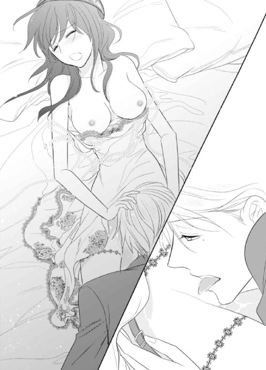

| 蜜約-ラシェルとふたつの白い薔薇-【書下ろし・イラスト8枚入り】 (トパーズノベルス) | |
| 燈花 | |
| (2016) | |
トパーズノベルス
蜜約～ラシェルとふたつの白い薔薇～
著作 燈花
Illustration 緒田涼歌
この物語はフィクションであり、実在の人物・団体・事件とは一切関係ありません。
蜜約～ラシェルとふたつの白い薔薇～
《序章》
一九二二年、四月下旬のフランス、ボルドー郊外──。
夕暮れが迫る西の空は、鮮やかなラベンダー色に染まり始めていた。
なだらかな丘の斜面に拡がった葡萄畑にも、夕闇の影が落ちていく。まだ花の時期には早く、初々しい緑の葉が、栽培用に仕立てた垣根に沿って伸びていた。
このあたりの土壌は、痩せていて水はけがよい。加えて年間を通じて温暖で雨が少なく、日照時間も長い。ピレネー山脈から流れ込むガロンヌ河の左岸に開けた土地で、灌漑用の水は豊富だ。
ワインの葡萄を栽培するには、うってつけだった。
見渡す限り一面の葡萄畑に覆われた丘の頂上には、十七世紀初頭からシャトーを経営する名家、デルランジュ家が所有する古いゴシック様式の城がそびえている。
尖頭アーチを描くファサードを二つの塔が両側から抱く壮麗な外観は、大聖堂を連想させた。
ピンクがかった外壁の色が重苦しい雰囲気をやわらげているが、いまにも甲冑に身を固めた騎士が馬に乗ってあらわれそうだ。
シャトー・デルランジュは、ボルドーワインの格づけにおいて最も重要とされる一八五五年のジロンド・ワイン格づけでは三級のシャトーだった。
その後、跡を継いだ城主たちの努力が実り、いまでは愛好家の間で『品質は一級と互角』と評される、美味で個性的なワインを生産している。
今日は、その古城の若き当主、二十八歳で家督を継いだアベル・デルランジュの、結婚披露パーティーの日だった。
とどこおりなく御開きとなった盛大なパーティーは、四時間近くに及んだ。おおぜいの招待客が醸し出すにぎやかな雰囲気に、荘厳な城もいつになく明るく華やいで見える。
宴を終え、着飾った淑女や紳士たちが、城の前に横づけされた自動車に次々と乗り込んでいく。
国産のプジョーはもちろん、イタリアのブガッティ、ドイツのベンツ、イギリスのロールスロイス、アメリカのフォード──世界の名車博覧会さながらの光景だ。
二百名を超える招待客が去った後の大広間には、まだ華やかな余韻が色濃く残っている。
巨大なシャンデリアがきらびやかな光を落としているその下で、使用人たちは供された食器や残りものの片づけに追われていた。
この日、ラシェル・ド・ラカーユは、名実ともにデルランジュ夫人となった。
トゥールーズの男爵家に生まれ育ったラシェルは、二十一歳。
アベルと知りあう前は、パリのエコール・デ・ボザールに通う画学生だった。
小さめのうりざね顔は青白く、そのせいで、蠱惑的な唇の赤さばかりが目立った。抜けるように蒼い大きな瞳は、不安そうに揺れている。
彼女はパーティーでの華やかな出で立ちのまま、新居となる古城の廊下を、押し黙って歩いていた。大理石の廊下に、硬い靴音が響く。
落ちついたピンクベージュと白が基調のイブニングドレスは、ラシェルが歩を進めるたびに、しゅるしゅると軽やかな音を立てる。この日のために、パリの人気デザイナー、マドレーヌ・ヴィオネに依頼した、贅を尽くした瀟洒なドレスだった。
色彩こそ控えめだが、胸の部分の装飾は、幾重にも連なった真珠だ。胸のまんなかと両肩にある真珠飾りを留めるためのバックルには、ダイヤモンドがずらりと並んでいる。
長さを変えて三段に重なったドレスの裾は、それぞれ手編みの繊細なレースと刺繍で縁どられていた。ラシェルのブルネットの髪をおさめたキャスケット型の帽子にも、金銀の刺繍とメレダイヤが散りばめられている。
美しい装いとは裏腹に、極度の緊張と疲労のせいで、花嫁の足はふらついていた。頭の中は、ぼんやりと霞がかかっている。
隣には、夫になったアベルがつき添っていた。彼の表情は、晴れの日を迎えた新郎とは思えないほどに硬く、冷たい。
「──アベル？」
不安に駆られたラシェルは、秀麗な夫の顔を見あげる。
まなじりの上がった、くっきりとした二重の眼は、まっすぐに前を見据えたままだった。
隣にいる新妻に、愛情のこもったまなざしを送ることもない。普段は柔らかな笑みを浮かべている唇も、きつく引き結ばれていた。
光沢のあるイブニングコートをまとったアベルの身体は、いつもならば生命力にあふれていて、ラシェルはそばに寄り添うだけで安堵感に包まれた。
けれど、いまのアベルの全身からは、近づきがたい不穏な気配が放たれている。
彼は無言のまま、城の東端にある寝室の扉を開けると、ラシェルを突き飛ばすようにして中に入れた。
「きゃあっ！」
慣れないハイヒールを履いていたラシェルは、すぐにバランスを崩す。
倒れる、床にぶつかる──そう思った瞬間、アベルの腕に支えられ、そのまま、横抱きにかかえあげられた。思わず彼のコートの襟にしがみついたが、ほっとする間もなく、大きな寝台の上に放り投げられる。
「──ア、アベル......どうして......」
「僕が気づかないとでも思っていたのか？」
感情のこもらない機械のような声音に、ラシェルは凍りついた。
アベルは、そんなラシェルの顎を強くつかみ、無理やり視線を合わせた。靴をはいたまま寝台に上がると、ラシェルの身体をまたいで馬乗りになる。
「縁談を断わり続けていたラシェル嬢が、あっさり結婚を決めたのには、やはり裏があったってことだな。それなのに、きみの心を手に入れたと思い込んで、子どもみたいに浮かれて舞いあがって......つくづく馬鹿な男だよ、僕は──」
見おろすアベルの蒼灰色の瞳には、見たことのない冷酷な険しさが浮かんでいた。自分でもどうにもならない感情に支配されているのが、伝わってくる。
やさしくて穏やかな男の、二面性──ラシェルは初めて、彼が怖いと感じた。
「あっ、いやっ......！」
いきなり、ドレスの胸元を開かれた。
襟ぐりの深いドレス用に作られたブラジャーは、薄い布地で、胸を覆う部分はわずかだ。少しずらしただけで、乳房全体が露出する。
身体つきは華奢なラシェルだが、弾力のある乳房は丸くて豊かだった。下着に押し上げられた二つのふくらみは、いまにもこぼれ落ちそうで、たわわに実った果実を連想させた。
開かれた胸元を見たアベルが、息を呑んだ。
その手が素早くブラジャーを押し下げ、ぶるんとまろび出た胸を鷲づかみにした。蹂躙された柔らかい肉に指先が喰い込み、粘土のようにかたちを変えられる。
「いやっ、やめて！ 痛い！」
身をよじるラシェルにかまわず、毒を含んだ声が落ちてくる。
「ふぅん......荒っぽいのは嫌いなんだね？ なら、あいつは、どんなふうにしたんだ？ もっと、いやらしく触ったのか？」
「な、なにを言ってるの、アベル」
理知的で気品のある彼の言葉とは思えなかった。
「ラシェル、きみが僕の妻になったのは......あいつと──ギデオンと僕が、おなじ顔をしているからだろう？」
アベルは冷たく言い放った。
（──やはり、気づかれていた......!?）
ラシェルは息を呑み、眼を見開いた。後悔と絶望で、全身から力が抜けていく。
けれど、このまま黙っていたのでは、アベルの言ったことが事実だと認めたことになる。
違うと、誤解だと、はっきり伝えなくては──そうとわかっていても、頭の中は真っ白で、言葉がまるで浮かんでこない。
（どうして、こんなことになるの......？）
偶然の悪戯を、心の底からラシェルは呪った。
（ギデオン・アズナヴールと、よりによって今日、結婚披露パーティーで再会するなんて......）
「あ......っ」
白いレースのパンティとガーターベルトがあらわになる。下着のレースの上から、アベルは遠慮のない手つきで秘所に触れた。
ラシェルは反射的に腿を閉じたが、彼の指は、無理やり割れめに入り込む。敏感な肉の芽を捕らえると、ゆっくりと、絶妙な力加減で捏ね始めた。
「......ここも、触らせたんだろう？ どうなんだ？ 奴は、どんなふうにしたのか、教えてくれないか？」
眼を細めて訊いてくるアベルの表情は、眠りをさまたげられた不機嫌な猫に似ている。
ラシェルには、もう抵抗する気力もなかった。
好きな男の手で快楽の源に触れられているのに、悦びとは、ほど遠い場所にいる。悪い夢を見ているとしか思えない。
ギデオンのことで、たしかに、心の葛藤はあった。
けれど、いまのラシェルにとってのアベルは、恋に落ち、晴れて結ばれた、ただ独りの男性に違いないのだ。
その愛おしい、夫となった男からの愛撫が、こんな苦痛に満ちたものになろうとは──。
「誤解よ、アベル。たしかに、初めてあなたに逢ったときは、びっくりしたけれど、でも──あ、あっ......！」
上体を倒したアベルは、ラシェルの胸に唇を被せた。乳房を搾るようにつかみながら、ピンクがかった薄茶色の乳輪を舐め、小粒な野いちごを思わせる突起を口にふくみ、吸い立てる。
「......う、ふう......」
唇のすき間から、吐息が漏れる。
アベルは、右乳房の愛撫が済むと、もう片方に移った。
ラシェルの脚の間にある花芯を撫でながら、空いたほうの手では、さっき口にふくんだばかりの乳房を捏ねるように揉む。固くしこり始めた乳首を舌先で弾かれ、甘噛みされると、くすぐったさに、じん、とした痺れが混ざった。
やがて、甘いさざ波のような悦楽が、ラシェルの下腹にやってきた。
「あっ...あぁ──」
鎖骨の上を滑る、アベルの髪の感触が心地いい。
ラシェルはそっと薄目を開けて、自分にむしゃぶりついている男を盗み見た。彼の灰色がかった蒼い眼は、欲情のためか、きらきらと濡れて輝いている。
（──美しい。愛おしい。わたしは、間違いなく、彼を愛している......）
アベルの金髪に近いアッシュブラウンの髪は癖がなく、襟足はすっきりと短く揃えられている。せつなくなったラシェルは、そっとアベルの頭を掻き抱き、乱れた長めの前髪を指で梳いた。
そのとき、彼の冷たい瞳が、ひたと、こちらを見据えた。
「眼を閉じていれば？ 僕の声はギデオンより少し高いけど、顔を見なければ、どちらかわからないはずだ。あいつに抱かれていると思えばいい。ああ、そうだ......目隠しをしてあげようか？」
聞くに堪えない、自虐的な言葉だった。
アベルがどれだけ傷ついているか、絶望しているか──ラシェルは、思い知らされた。
二人で築きあげてきたすべてのものが、いま、波にさらわれる砂のように崩れていく。
夫の顔を正視するのがあまりにつらくて、ラシェルは両手で顔を覆った。
膝の裏をつかまれ、思いきり拡げられる。下着の中で、腿の間の果肉が、ぱっくりと口を開けるのがわかった。
淫らに開いた柔らかい果肉に、布の上から唇が押しあてられ、熱い息を吹きかけられる。
「ひ......っ」
果肉の襞に歯を立てられると、ラシェルは小さな悲鳴を漏らした。
くり返し、擦るように甘噛みされる。
快感よりも、不安と、大きく開かされた鼠蹊部の痛みのほうが勝った。
「......やめて、お願い......」
アベルは容赦するつもりはないらしい。
もはや愛の行為というより、凌辱に近かった。ラシェルの意思は、完全に無視される。
けれども、陰核を食むアベルの指が胸の尖りをいじりだすと、ラシェルはまたたく間に恍惚感に襲われた。
下着の上から押しつけられている彼の舌先が、会陰部に降りていく。
二枚の陰唇の襞を押し分けるように左右に動き、再び陰核に戻ると、じらすように軽くはじいたり押しつけたりをくり返した。
薄い布一枚にへだてられた愛撫のもどかしさに、ラシェルの腰が揺れた。
「...はぁ......ああ──」
喘ぎ声に反応したアベルは、パンティの腰紐をほどいた。両脇の紐を結ぶことで腰に引っかかっていた下着は簡単に剥がされ、秘部が空気にさらされる。それも、思いきり開かれて──。
「ああっ、いやっ、見ないで......！」
ラシェルは、アベルの視線から逃れようと身体をひねった。
けれど、腿を押さえつけた彼の手はびくともしない。
こんな恥ずかしい場所を、あられもなく拡げられ、視られている。それも、すみずみまで──。
羞恥で、頭がくらくらした。
「ああ、ラシェル......こんなに濡らして」
うわずった声と一緒に、腿のつけ根に荒い息がかかった。直後、あたたかい舌先が秘裂を舐めあげ、肉芽を包むようにして吸いつく。
粘膜をしゃぶり、吸う淫靡な音が、部屋に響いた。
「ひいっ！」
ラシェルはたまらなくなり、腰をよじった。アベルの髪をつかみ、向こうへ押しやる。
が、彼は逃すまいとラシェルの脚を抱え込み、さらに吸いあげ、秘められた襞の奥にまで舌を差し入れてくる。
アベルの鼻先が陰核に当たり、秘孔の中で舌が踊ると、そこの襞がうごめいて熱い蜜をこぼすのが、はっきりと感じられた。
「あっ...ああっ！ いやぁ！」
鋭く鮮烈な感覚が下腹を襲い、ラシェルは叫んだ。全身が硬直する。
するとアベルは、その場所を集中的に嬲り始めた。

硬くとがらせた舌先でしつこく跳ね上げ、すっぽりと唇で覆い、音を立てて吸った。肉厚な彼の舌が膨らんだ肉芽を押しつぶしながら舐め、舌の腹でくり返し擦り、激しくしゃぶりつく。
甘美な刺激に、ラシェルは、われを忘れた。
アベルの唇に押しつけるように腰を揺すり、顎をのけぞらせて、喘ぐ。
大きく開いた秘所を男に見つめられ、舐めまわされ、蕩けるような快楽と陶酔に呑みこまれてゆく。背中や胸元から汗が噴きだし、頬が火照った。
（──ああ、来る......いけない。なにかが、来て、さらわれる......！）
とうとう、甘く強烈な大波が押し寄せた。もう、抗えない。
「......ひっ！ はあっ、あ、ああっ......！」
ラシェルは全身を痙攣させながら、アベルの髪をつかんで、絶頂を迎えた。
《第１章》
「ごちそうさまでした、マダム・ビノシュ」
ラシェル・ド・ラカーユはカフェ・オ・レを飲みほすと、テーブルを立った。白いシャツにサスペンダーつきの黒いズボン、踵の低い革靴をはいた姿は、美しい少年のようだ。
「あら、もういいの？ バゲットのおかわりは？ ラシェル、あなた、細いんだからしっかり食べなきゃ」
バゲットの入った籠を持って厨房から出てきたマダム・リリト・ビノシュは、緑色の眼を大きく見開いて言った。
未亡人の彼女は、五十代なかば。この下宿のオーナーで、ラシェルにとっては大叔母にあたる。年齢相応に、ふっくらとした身体つきだが、動作は機敏で優雅だ。
「いえ、もう充分いただきました。あんまり食べると、授業中、居眠りしちゃう。今日は、朝から美術史の講義だから......」
「そうなの？ でも、いまよりも痩せてトゥールーズに帰したら、わたしが、あなたのご両親にしかられるのよ。ちゃんと食事をさせてなかったんだろう、って」
「大丈夫です。いつも夕食はたっぷりいただいているから、少し太ったくらいです。これ以上、お腹まわりが大きくなったら大変。ドレスが着られなくなりそう」
ラシェルは笑って、ズボンのウエストに手を入れた。
うりざね型の白い顔に、硝子のようにきらきら輝く蒼い眼が嵌まっている。細く通った鼻梁はととのっていて、くっきりとした赤い唇が蠱惑的だった。
ビスクドールを思わせる端整な顔立ちだが、ブルネットの髪が肩先で無造作にはねている様は、ラシェルの野性的な強さと親しみやすさをあらわしている。
「ねぇ、ラシェル......男子生徒に見くだされたくない気持ちは、よくわかるけれど......だからといって、男の服を着る必要があるのかしら？ あなたは女の子なんだし、自然にしているのが一番いいと思うのよ」
マダム・ビノシュはほんの少し、哀しそうな表情をした。
夫を早くに亡くした彼女は、女手ひとつで、下宿を経営しながら娘を育てあげた。この時代の女が、自分の才能を生かして自立することがどれほど困難か、身をもって知っているのだ。
「──このスタイルは理にかなっているんですよ、マダム。デッサンのときに座る椅子はあまり安定がよくないから、脚を開いて踏ん張らなきゃならないし、大きな作品を描くときは脚立に登ったり、床に這いつくばることだってあるの。スカートなんかはいてたんじゃ、なにもできないんです」
明るい笑顔でラシェルは答え、鞄を肩にかけた。
「じゃ、行ってきます」
「ランチは、いつものカウンターの上よ。赤い包みが、あなたの分」
「いつもありがとう、マダム・ビノシュ」
用意されたランチを持って、ラシェルは外に駆け出した。
＊ ＊ ＊
赤煉瓦の建物から出たとたん、透明な朝の光が頭上に降りそそぐ。
セーヌ河に浮かぶシテ島にある下宿は、ノートルダム寺院のすぐそばだった。
ラシェルは、寺院の鋭く尖った塔を眺めながら路地を抜け、河沿いの歩道に出る。そこから対岸へかかる橋を渡ると、サンミシェル広場が見えた。
北へ向かってしばらく歩くと、古色蒼然としたルネサンス様式の校舎があらわれる。
パリ国立高等美術学校、エコール・デ・ボザールだ。
ラシェルは颯爽と、開け放たれた蔓草模様の門扉をくぐり、敷地内に入っていく。
ルネサンス期の天井画で装飾された廊下を通り、講義室へと向かった。
すれ違う学生はみな、男子ばかりだ。エコール・デ・ボザールが女性の入学を許可してから二十年以上が過ぎているが、まだ女子学生はめずらしい存在だ。
入学当初は、「女に芸術はわからない」と見くだされ、ラシェルは深く傷ついた。
すれ違いざまに口笛を吹いて嫌がらせをする不届きな輩もいるが、三年近くが過ぎたいまは、自然に接してくる男子生徒も多い。
「おはよう、カーラ！」
中庭の噴水のそばで友人の姿をみとめ、ラシェルは声をかけた。
「ラシェル！」
笑うと、眼尻の下がった愛くるしい顔が、くしゃっと崩れた。
栗色のロングヘアを三つ編みにしたカーラ・バスクは一学年下で、ラシェル以外の唯一の女子学生だった。くるぶし丈の紺のスカートに揃いの上着という服装は、カーラのスリムな長身をきわだたせ、清楚な修道女のように見せている。
「あー、もう......今日は朝一番から講義よ。美術史。眠くなりそう」
「わかる。メトラ先生の授業って、退屈よね。大きな声じゃ言えないけど」
ラシェルのぼやきに、カーラは同意する。
二人は並んでアーチ型の列柱をくぐり、中庭から続く校舎の回廊に戻った。
「そういえばラシェル、週末にギャラリーのオーナーと会うんでしょう？ 準備、進んでる？」
「うん、そうなんだけど......」
「え？ どうかしたの？」
油彩画のクラスを担当しているプロスト教授が、懇意にしている画廊にラシェルを紹介してくれたのだ。この週末に訪ね、自信作を画商に見せる約束だった。
「だって......わたし、なんの実績もないんだもの。公募には片っぱしから落ちてるし、校内コンクールですら入賞してないし......」
「でも、プロスト先生は、ラシェルの才能を絶賛してくれてるじゃない。だから画廊を紹介してくれたんでしょう？ 先生もおっしゃってたじゃない、コンクールはある意味、政治とおなじだって。必ずしも才能があるから、いい作品だから、選ばれるわけじゃない──」
ため息をつくラシェルを励ますように、カーラは続けた。
「画商は絵を売るプロよ。いい作品だ、売れる、と思えば、男だとか女だとか関係なく、ちゃんと評価してくれるはず。不安なのはよくわかるけど、迷うなんて、ラシェルらしくないって。大丈夫よ！ 自信をもって！」
そうなのだ、カーラの言う通りだと、ラシェルは思いなおす。
どんなに長く険しい道のりでも、一歩ずつ進んでいけば、いつかは目的地にたどりつく。あきらめたら、その時点で終わりだ。最初から上手くいくなんてありえないし、失敗したからって命を取られるわけじゃない。
「うん、そうよね。当たって砕けろ！ だよね。ありがとう、カーラ」
カーラと別れ、ラシェルは講義室の席についた。
小さくため息をつく。自分があせっていることは、充分にわかっていた。
入学して、今年で三年。両親と交わした約束の、最終期限が迫っている。
十八歳でバカロレアを取ると、親の反対を押し切ってボザールの試験を受けた。
世界最高峰レベルの美術学校だ。受かるはずがない、と高をくくっていたまわりの予想を裏切り、合格通知が届いたときは、当のラシェルも呆然としてしまった。
単身パリに出る意志を曲げない困った娘に、父親のダミアン・ド・ラカーユ男爵は、ある交換条件をもちかけた。
《三年間の就学を許可する。その間は、シテ島のマダム・リリト・ビノシュのもとへ下宿すること。三年間の就学を終えたら、すみやかに帰省し、結婚の準備をすること》
（わが父ながら、まるで判決を言い渡す裁判官みたい──）
ラシェルは思ったが、従う以外の選択肢はなかった。
一七八九年のバスティーユ襲撃から始まった革命によって、事実上、フランスの貴族階級は消滅した。けれど、それは表向きのこと。広大な領地や財産を確実に子孫へと受け渡し、いまだに爵位を名乗る家も多数存在する。
ラシェルの生家、ド・ラカーユも、その典型的な田舎貴族の一つだった。
代々の不動産や持ち株から得られる収入を生活に充てており、暮らしぶりは質素で堅実だ。そう言えば聞こえはいいが、収入源が限られているため、贅沢をしたくてもできないというのが実情だった。
かつかつの生活に少しでもゆとりを持たせ、家名と財産を維持していくためには、婚姻によって得られる経済的な後ろ盾が不可欠なのだ。
パリに出たラシェルと入れ替わるように嫁いできた兄嫁のエマは、ワインの産地として有名なボルドーの出身で、実家は小規模ながらシャトーを経営している。
三歳違いのラシェルの姉、オデットは、美貌と若さを武器に、十七歳で裕福な名家に嫁いだ。いまは二人の子どもにも恵まれ、なに不自由ない生活を送っている。
父のダミアンも、母のエヴァも、ラシェルに対してはオデットやエマとおなじような生き方を望み、それが女の唯一の幸せだと信じて疑わない。
けれどラシェルには、囚われの籠の鳥が幸せだとは、とうてい思えなかった。
夫や義父母に命運を握られた花嫁は、従順で美しい人形であることを求められる。
なにを思い、なにを望み、どこに行き、どんな風に生きたいのか──人間ならば当たり前の要求は、女らしくないと最初から無視される。そんな人生は送りたくなかった。
（兄のティエリのように家督を継ぐことは無理でも、自分の能力を磨けば、社会に出て自立することはできるはず──）
ものごころがついた頃から、ラシェルは、好きな絵の道に進むことを決意していた。
＊ ＊ ＊
サンミシェル広場の『カフェ・サンミシェル』は、いつも朝五時に開店する。
週末は徹夜で絵の制作をすることが多いラシェルの、行きつけのカフェだ。
三月が終わろうとしているが、パリの朝はまだ肌寒い。今朝は厚い雲にはばまれ、太陽は姿を見せなかった。
カンバスの包みをかかえたラシェルは店に入ると、噴水を眺められる場所に陣取り、あたたかいショコラを頼んだ。そばにあるカウンターでは、出勤前の労働者たちが、あわただしげにクロワッサンの朝食をとっている。
今朝のラシェルは、ペールグリーンのローウェストのワンピースに、ベージュのケープを羽織っていた。キャスケットの色も、ワンピースとお揃いだ。
なにを着て行くべきか──さんざん迷ったあげく、マダム・ビノシュ言うところの『自然な』スタイルに落ちついたのだ。
「今日も徹夜？ それにしては、素敵な服装だね」
長身の若いギャルソンが話しかけてきた。くしゃくしゃの金髪が、童顔によく似あっている。
早番のクロードだ。彼は、このカフェの経営者の甥にあたる。
パリに出てきて間もないラシェルが、テラス席でカフェのお客をスケッチしていたとき、注文していないショコラのお代わりを、さりげなくテーブルに置いたギャルソンがクロードだった。
そのお礼に彼の似顔絵をプレゼントして以来、すっかり仲よくなったのだ。
「おはよう。これから、絵の売り込みに行くの」
「売り込みって......画商に？」
「そうよ。いま、戦闘体勢を整えてるところ」
「へぇ、それはすごいね。成功を祈ってるよ」
クロードは本心から驚いたらしい。淡褐色の眼を見開いてラシェルを見つめたあと、軽くウィンクをしてテーブルを離れた。
「ありがとう、クロード」
サン・ジェルマン大通りにギャラリーを構える老舗の画商は、開店前の朝早い時間を指定してきた。宵っ張りの癖がついてしまった身には少々つらいが、そんなことは言っていられない。
そもそも、美術界にこれといった後ろ盾を持たないラシェルのような学生には、分不相応な話なのだ。仲を取りもってくれたプロスト教授には、心から感謝の気持ちが湧いてくる。
『ガルリ・アズナヴール』は、ゴヤやルソー、ルドンといった孤高、異端といわれる画家の作品を積極的に扱ってきている。きっと、自分の描く世界を理解してもらえるだろうと、ラシェルは期待していた。
「よし！ がんばれ、ラシェル」
カフェ・サンミシェルを出たラシェルは、カンバスを抱え直し、薄暗い空を見あげた。
＊ ＊ ＊
「初めまして、ムシュウ・アズナヴール......ラシェル・ド・ラカーユと申します」
自分の声が、かすかに震えているのがわかった。
ラシェルはお腹に力を入れ、ゆっくりと呼吸した。格調高いギャラリーの雰囲気に、圧倒されてしまいそうだった。
漆喰の壁には、いまをときめく画家たちの作品がずらりと並んでいる。朝の透明な静けさの中で、ひとつひとつの絵は、自ら光を発して輝いている宝石のように見えた。
オーナーであり、画商でもあるグレン・アズナヴールは、そろそろ六十歳になるはずだ。
黒っぽいグレンチェックのスーツがとてもシックで、よく似あっている。想像していたよりも若々しく、ハンサムな紳士だった。
最近は体調がすぐれないのだと、口利きをしてくれたプロスト教授から聞いていたが、そんな様子は微塵も感じられない。
重厚なマホガニーの机に置かれたイーゼルに、ラシェルは、持参した二枚の絵を立てかけた。
アズナヴールは鋭いまなざしで、二つのイーゼルに置かれたラシェルの作品を見つめる。
「コンクールやサロンでの入賞経験は？」
「......ありません」
「ボザールの生徒だったね、マドモワゼル？ 学校には、いつまで残る予定なのかね？」
「......今年、までです。八月には、トゥールーズの実家に帰る予定です」
正直に答える。
「それは、なにか事情でも？ たしかボザールは、最長十年間の在籍が認められるはずだ。ここで辞めてしまうのは、もったいないと思うが......」
「両親との約束です。三年間の就学を終えたら実家に帰るという条件と引きかえに、パリに出てきたんです」
「なるほど......それならきみは、なんのために、私に会いにきたのかね？」
アズナヴールはそう言い放ち、ラシェルの絵へと視線を戻した。
「──な、なんのためって......わ、わたしは、もちろん、プロの画家になりたいんです。経済的に自立することができれば、両親のもとから離れて、パリで暮らすこともできます」
想像もしなかったアズナヴールの言葉に、ラシェルはあわてた。
「ふぅむ。で、それまではトゥールーズの田舎に住んで......あるいは、結婚して、妻として母としての責任を果たしながら、職業画家としても成功したいと？」
彼の唇がゆがみ、皮肉な笑みを浮かべる。
見くだしたような口調と表情に、なけなしの自信が空気を抜かれた風船のようにしぼんでいくのを、ラシェルはなすすべもなく感じていた。
だが、男たちのこんな反応は、珍しくないことだった。アズナヴールはあくまで常識人で、女性に対して特別な偏見をもっているわけではない。
よほどの幸運にめぐまれないかぎり、家庭に入ってしまえば、女に自由はなくなる。
そのことは、母や兄嫁、他家に嫁いだ姉のオデットを見ていれば、容易に想像できた。だからといって独身のまま、女が職業を持って経済的に自立することは、並の努力ではできない。
それに加えて、ラシェルが選んだ芸術家の道は、ただでさえ困難な、狭くけわしい道だ。
家庭の幸せも、画家としての成功も、どちらも欲しい──そんな都合のいい願いなど、非現実的な夢物語と笑われても、しかたがなかった。
ラシェルは、口惜しさから無意識に唇を噛んでいた。
そんなラシェルの表情を、アズナヴールはちらりと見やったが、容赦はしなかった。
「マドモワゼル、わたしの長い経験から言わせてもらうが......女流画家は、大成しない」
「そんな......！」
頭の中が真っ白になる。膝が震えた。
アズナヴールが椅子をすすめてくれなければ、ラシェルはその場にへたり込んでしまったかもしれない。
「偶然だが、私の妻の実家がトゥールーズでね、年に一、二度は出向くんだよ。美しい街だが、文化面での遅れは埋めようがない。パリとくらべると五年、いや、十年は遅れている。そんな田舎の街に引っ込んで......しかも結婚し、時間も充分にない状態で、いま以上にいい作品を生みだし、画業を続ける自信が、きみにあるとでも？」
ラシェルは、押し黙ってしまう。
「私が女流は大成しないと言うのは、そういう意味でだ。女性の人生は、環境に大きく左右される。きみ自身が望む、望まないは別としてね。......まして、ご両親の理解や協力が得られないとなれば、将来は閉ざされたも同然だろう？ 活躍している芸術家の多くが、パトロンの支援を受けて生活しているのは、きみもよく知っているはずだ」
アズナヴールは、まるで自分の娘に言いきかせるように話した。
（画家として生きたければ、まずはパトロン、支援者を見つけろ、ということね......）
若い女性であるラシェルにしてみれば、支援者はイコール愛人、もしくは夫──という意味に聞こえる。けれど、アズナヴールは不埒なことを言っているわけではないのだ。経験を積んだ大人の、そして、プロの画商の眼から見た現実なのだと、ラシェルは理解した。
「わたしの絵は、売れない。たとえ努力をしても、画家としてやっていく才能はない──そういうことでしょうか？」
思いきって尋ねてみる。
たとえ自分を追いつめ、道を断たれることになっても、本当のことを知りたかった。
「私がこの仕事で成功しているのは、自分の力で『流行』を作り出すことができるからだ。効果的な宣伝をし、人々の感情を操作することで流れを作り、きみを売れる絵描きにすることもできる。だが──」
ラシェルは息を殺して、彼の言葉を待つ。
「いまのままでは、きみは一瞬のつむじ風で終わる。パリ画壇を風のように吹き抜けた流行画家の一人として、あっという間に忘れ去られるんだよ」
「──ムシュウ......そんな......」
「世間に見離された職業画家ほど、みじめなものはない。もちろん、芸術性の高さと、売れる売れないの商売の話は別ものだ。失意のまま生涯を閉じ、死後に高く評価される画家もいる。だがマドモワゼル、きみは経済的に自立したいのだろう？ 絵が売れなくなったら、どうやって生活していくつもりだね？ 結局は、ご両親のもとに戻って嫁ぐしか、選択肢はないのではないかね？」
あまりにも残酷な言葉に、ラシェルはまばたきもできず、ただアズナヴールを見つめた。
「きついことを言っているのは百も承知だ。だがねマドモワゼル、これが、世の中の現実というものだ。きみはまだ若く、美しい。どう生きることが、自分とご両親を幸せにするのか、もう一度、よく考えてみなさい」
彼はイーゼルから絵を降ろすと、慣れた手つきで布にくるみ、こちらに差し出した。
それを受け取ったラシェルは、涙がこぼれないように口角をあげ、やっとの思いで声にする。
「貴重なお時間をいただいて、ありがとうございました。ムシュウ・アズナヴール──」
＊ ＊ ＊
ラシェルは打ちのめされて、ガルリ・アズナヴールを後にした。
グレン・アズナヴールは、最後までラシェルの名前を呼ばず、『マドモワゼル』と『きみ』で通した。その事実が、すべてを物語っている。
彼にとってのラシェル・ド・ラカーユは、わざわざ名前を覚えるに値しない、その他おおぜいの女のひとり、ということなのだろう。対等に仕事ができる相手ではないと、判断されたのだ。
（これからいったい、どうすれば......絵の道は、もう、あきらめるしかないのかしら......）
ぼんやりとしたまま、ラシェルは、画廊の扉を開けて歩道に降りた。
そのとき──。
「あぶない！」
「きゃっ」
大きなものに、勢いよくぶつかった。
一瞬、なにが起こったのかわからないまま、ラシェルの身体は後ろに傾く。足が地面から離れ、どんよりとした空が見えた。
「いや！ 誰か...っ」
歩道に倒れる、と覚悟した瞬間、背中を支えられた。空に被さって、上から自分を見おろしている顔が視界に映る。
灰色がかった蒼い眼の、きれいな男の顔だった。
あまりの美しさに、ラシェルは、思わず息を呑む。
「失礼！ 大丈夫でしたか？ マドモアゼル？」
上唇が少しめくれた、輪郭のくっきりとした唇が動いた。
骨を震わせるような、印象的な声が降ってくる。
「...え...っ？ ......わ、あっ......」
眼の前にいるのは、俳優ばりの美男だった。しかも、あお向けに倒れかけたところを、彼の腕に抱きとめられているのだ。
あまりにもあわててしまい、岸に打ちあげられた魚みたいに、口をぱくぱくさせることしかできない。そんなラシェルを、青年は微笑みながら立たせてくれた。
彼の身体から、雨上がりの森に似た清廉な香りが漂う。
「申しわけありませんでした、急いでいて......。お怪我はありませんか？」
「い、いいえ。こちらこそ......すみません......」
これほど優れた容貌の異性を間近で見たのは、初めてだった。態度は落ちついているが、まだ若い。三十歳は超えていないはずだ。
夏の地中海とおなじ色の瞳は、虹彩のふちが灰色に滲んでいて、いたずらっぽく輝いていた。なんと不思議な色合いだろう。
キスをねだっているような、少しめくれた上唇に、つい、視線が引き寄せられてしまう。
背中を支えている大きな手は、あたたかくて力強かった。
この人のそばにいたい。もっと、近づきになりたい──わけのわからない衝動的な感情が、いきなりラシェルの心に湧きあがってきた。
身体の、どこか奥にある未知の部分が、じんと痺れた。心臓が一気に騒ぎだす。
「それ、カンバスだよね？ きみは画家？ どうして、こんな早い時間にギャラリーに来たの？」
転びそうになりながらも、胸もとにしっかりと抱いた包みに、青年が眼を留める。
その言葉を聞いたラシェルは、一瞬でわれに返った。
「い、いえ、違います！ ごめんなさい、失礼します！」
つい先ほどの、アズナヴールとの屈辱的なやりとりを思い出すと、いたたまれなくなった。みじめで、哀しくて、握りつぶされるような痛みが胸を締めつける。
後ろ髪を引かれる思いを断ち切って、ラシェルは、足早にその場を去った。
「画廊の関係者かしら？ それとも、芸術家......？」
サンミシェル広場まで戻ったラシェルは、大天使ミカエルの噴水の前でつぶやいた。
まだ、心臓がどきどきしている。
青年は、長めのアッシュブラウンの髪を、ボヘミアンのように後ろで束ねていた。
芸術家にも見えたが、なにかを創造する側の人間に特有の、浮世離れしたエキセントリックな雰囲気は感じられなかった。容姿は華やかでも、堅実な印象だ。
まとっていた黒いコートは仕立てもよく、高価なものだと、すぐにわかった。言葉づかいも身のこなしも洗練されていて、それなりの階級に属する男性なのだろう。
一人の男性に、こんなに気持ちを乱されたのは、生まれて初めての経験だった。ほんの一瞬、すれ違っただけの相手だというのに──。
「とりあえず、帰らないと......」
ラシェルは声に出して、自分自身をうながした。足が地面に張りついてしまったかのように、重くて動かない。
「帰るの。帰るのよ、ラシェル......」
気持ちを何度もふるい立たせ、ラシェルはようやく、歩き出した。
サンミシェル広場を出て歩いていると、セーヌ河沿いの通りに、一軒の花屋があった。
香しい花の匂いに、思わず足が止まる。
ブリキのバケツに入った色とりどりの花が、店の軒先からはみ出して並んでいる。
その中に、ひときわ高貴な、大ぶりの白薔薇があった。
ラシェルは、しゃがみ込んで見惚れてしまう。
みずみずしく気品のある白い花は、ついいましがた別れた、あの青年のイメージとぴったりだった。爽やかな薔薇の芳香は、彼の身体から香ってきた匂いによく似ている。
（──もう二度と、あの人と逢うことはないのだろう......）
いっときの感情に負けて、逃げるように立ち去ったことが悔やまれた。
（もっとどうにか、できなかったのかしら。彼のほうから話しかけてくれたのに......あのまま上手に会話を続けていれば、もしかしたら──）
けれど、いまさらあれこれ考えたところで、どうにもならなかった。
（人生なんて、そんなものなのかもしれないな......）
薔薇を見つめながら、ラシェルは、ひどく醒めた気持ちになった。
自分が心から望むものはみな、触れることもかなわないまま、眼の前を通り過ぎてゆくだけなのかもしれない。絵も、男性も、夢見たパリでの華やかな生活も、みんな──。
（それならせめて、この花を、思い出に持ち帰ろう──）
そう決めて立ち上がると、店の中にいる初老の店主と眼があった。
「ボンジュール、ムシュウ。この白い薔薇をくださいな」
つとめて明るく、ラシェルは彼に声をかけた。
《第２章》
いくら打たれ強い性格を自負しているラシェルとはいえ、今回の挫折からは、そう簡単に立ち直れそうになかった。
夜や週末は、独りでぼんやりと過ごすことが多くなった。
下宿の部屋でカンバスに向かっても、以前のように気持ちが入らない。学校のアトリエには、進まない卒業制作が未完成のまま、放ってあった。
たしかに、アズナヴールは毒舌で情け容赦なかったが、自分のことを気づかってくれたからこそ、嘘偽りなく接してくれたのかもしれなかった。知らず知らず、世の中を甘く見ていたことを思い知らされたのかもしれないと、ラシェルは前向きに思う。
だからといって、いつまでも落ち込んでいるわけにはいかなかった。
極力外に出て、セーヌの岸辺やパッサージュをそぞろ歩いたり、ときにはデパートに入って流行の洋服を眺めたりしてみるが、気分は晴れない。
どこに行っても、なにを見ても、どこかうわの空なのは、ラシェル自身もわかっている。
気がつけば、ある人の姿を──画廊の前でぶつかった青年の姿を探していた。
ガルリ・アズナヴールの近くに行けば、もしかしたら......と考え、カルチェ・ラタン周辺やサン・ジェルマン大通りを、あてどもなく行き来してみる。
雰囲気の似た男性を見かけるたびに胸がときめいたが、件の『白薔薇の君』には、出逢えないままだった。
＊ ＊ ＊
四月も終ろうとしている、日曜日の午後。
歩き疲れたラシェルは、行きつけのカフェ・サンミシェルのテーブルに座った。
今日のパリは陽射しが強く、身体を動かすと汗ばむくらいの陽気だ。
「やぁ、ラシェル。こんな時間に、めずらしいね」
いつものように、クロードが声をかける。
「こんにちは、クロード。あなたこそ、この時間までお店にいるなんて......今日は早番じゃなかったの？」
「昼番のギャルソンが風邪で休んでるんだよ。おかげで、朝からてんてこまいだ。ええっと、ショコラでよかった？」
「ええ、ミルクをたっぷり入れてね。それと、蜂蜜をかけたクロワッサンをいただける？ 歩き疲れちゃった」
「了解。ああ、そうだ。後で少し時間をもらえるかな？ 相談したいことがあるんだ」
「相談？」
「うん。この店に、ラシェルの絵を飾らせてほしいんだ。二階のスペースを使って、なにかできないかって、以前から考えていたんだけど......」
「ええ!? わたしの絵を？」
「最近、モンパルナスあたりのカフェをサロン代わりに使ったり、自分の作品を展示する芸術家が増えてるだろ？ うちもカフェの中では老舗の部類に入るし、ファッションや芸術関係のお客も多いんだ。画家にとっても店にとっても、いい宣伝になるんじゃないかと思ってね」
「まぁ、すごい！ そうね。ここには、ジャーナリストや小説家の常連さんもいるものね」
ラシェルとクロードは同時に、奥まった席で熱心に書きものをしている男性に眼をやった。
黒髪の、精悍な男前だ。彼がまだ無名のアーネスト・ヘミングウェイだったと二人が知るのは、もう少し後になる。
クロードは、ラシェルに視線を戻して続けた。
「絵を、ただインテリアみたいに飾るんじゃなくて、期間を区切って、一人の作家を紹介する個展形式にしてみようかと考えてる。正直な話、うまくいくかどうかは、やってみないとわからないんだ......だから、無理にとは言わないよ。きみがよければの話だけれど......」
「断る理由なんてないわよ、クロード。ぜひ、お願い。そうよ、そうよね......こういうやり方もあるのよね。どうして思いつかなかったのかしら」
そう言って、ラシェルは笑った。
「じゃ、詳しいことは、また後で。ショコラとクロワッサンを準備してくるね」
仕事にかかわる話をするクロードは、いつもの彼とは趣が変わる。
お気楽にしているようでも、やはり経営者一族だ。笑みを絶やさない童顔が、心なしか引き締まって見えた。
ラシェルは、重苦しい枷から一気に解放された気分で、初夏を思わせる陽光に照らされたサンミシェル広場を眺める。つい先ほどまでの憂鬱な気分は、すっかり吹き飛んでいた。
ある考えを、ラシェルはクロードに持ちかけてみた。
「ねぇ、クロード。自分の絵が展示されている間は、学校が引けたあと、このカフェに通わせてもらってもいいかしら？ 絵を見てくれた人と、お話しもしてみたいし......この機会に、できるだけ交友関係を拡げたいの」
「ああ、もちろん。そうするといいよ。どこからいい話が転がり込んで来るかなんて、誰にもわからないんだ。新しい人脈は、どんどん開拓しないとね」
ラシェルには、思惑があった。
（もしかしたら、『白薔薇の君』に逢えるかもしれない──）
あの青年は、ラシェルが抱えていたカンバスに興味をもっていた。絵が好きで、美術にかかわる仕事をしているのかもしれなかった。
その勘が当たっていれば、彼が、ここに足を運ぶ可能性はある。
淡い期待ではあったけれど、ラシェルの胸は高鳴っていた。
カフェを出たラシェルは広場を横切り、行きつけのパッサージュへと向かう。
個展にそなえて、画材や必要なものを買い揃えておきたかった。
古書店やパン屋、洋服屋などの雑多な店が立ち並ぶ通りは、ガラス張りのアーケードに覆われていて、柔らかい自然光が差し込んでいる。
週末でも、人通りはまばらだ。小さな個人商店が多く、お客のほとんどが常連のせいかもしれない。ひっそりとした懐かしい雰囲気は、路地裏という表現が似つかわしい。
画材屋の扉に手をかけたとき、ラシェルは、こちらに向かって歩いてくる人影に眼を奪われる。
美貌の、若い男性だった。
身のこなしがきれいで、タイなしで着崩した紺のスーツ姿が様になっていた。
くすんだブラウンの髪は金髪に近く、襟足は短く切り揃えられている。
けれど彼の面差しは、ラシェルが探している人物と、そっくりおなじだった。
（まさか、白薔薇の君──？）
あまりに驚いて、息ができない。
少しめくれたセクシーな上唇も、濃い蒼の瞳も、洗練された上品な雰囲気まで、瓜二つだ。
スーツ姿の青年は、立ちすくむラシェルに気づくと、ちらりと一瞥して微笑んだ。「あなたに対して敵意はありません」と示すための、単なる社交用の笑顔だ。
わかっていても、ラシェルの心臓はばたばたと跳ねる。
青年はあっという間にラシェルのわきを通り過ぎ、パッサージュの先に停まっている自動車に乗り込んだ。呼び止める隙もないまま、黒塗りの車は無情に走り去っていく。
ラシェルはしばらく呆然として、彼の残像を追っていた。
＊ ＊ ＊
個展の準備に、ラシェルは没頭した。
遅い時間まで学校のアトリエで制作をし、下宿に帰ってからは、油彩やデッサンに取り組む。
そうやって過ごした週末には、徹夜明けの疲労と興奮が同居するおかしな頭を抱え、早朝のカフェ・サンミシェルに向かった。
「おはよう、クロード。今日はエスプレッソをお願い」
厚い化粧が好きになれないラシェルは、いつものようにひかえめに白粉をはたき、シアバターで唇を潤しただけの、ほぼ素顔に近い状態だった。
連日の疲れが滲んだ表情は、どうやっても隠せない。
おまけに作業着代わりのズボン姿とくれば、女らしい雰囲気など欠片もなかった。
「ずいぶん疲れてるね。大丈夫？」
クロードが心配そうにのぞき込んできた。
「準備は問題なく進んでるわ。そんなに酷い顔、してる？」
「うん......ちょっと心配になる」
「......ごめんなさい。わたし、夢中になると、止めどきがわからなくなるの。今日はこれから、ゆっくり眠るつもりよ」
「そうしたほうがいいよ。本番寸前にダウンなんて、してほしくないからね。ガトーショコラ、ごちそうするから、元気出して」
「まぁ、うれしい！ ありがとう、クロード」
「そうそう、案内状、できたよ。はい、これはきみの分──」
クロードは、ラシェルの版画を使った二色刷りのポストカードを差し出した。海底の貝殻をモチーフに、青を基調にしたシックな仕上がりになっている。
「多色刷りにくらべると、ちょっと見劣りはするけどね......でも、僕は気に入ってる」
「とても素敵。思った以上に、いい色が出てる」
「店のテーブルに置こうと思うんだ。あと、知り合いのレストランや書店にも......」
クロードは、ヘーゼルの瞳をきらきらさせながら楽しそうに言う。
そんな彼を見ていると、ラシェルは心の底から感謝の気持ちが湧いてくるのを感じた。
三年前、たった独りでパリに出てきた。
カーラと知りあうまでの孤独な日々を耐えることができたのは、このカフェにクロードがいたからだ。いままで真剣に考えたことはなかったけれど、なぜクロードと恋人の関係にならなかったのか、自分でも不思議だった。
「本当にありがとう、クロード。こんなにしてもらって......なんてお礼をすればいいのか......」
「そう思うのなら、今日はしっかり休んで体調を整えること。いい個展になるよう、期待してるからね」
クロードはいたずらっぽくウィンクすると、カウンターに戻っていった。
気障なしぐさなのに、少しも嫌味に見えない。彼はなにをするにも、押しつけがましさがないのだ。そのことに気づいたラシェルは、初めてクロードを男性として意識する。
（こんな人と一緒にいれば、きっと素のままで、伸び伸びと振るまえるのでしょうね）
相手の言動に必要以上に神経を使うこともなく、自分を実際よりもよく見せるために、嘘で飾りたてる必要もない。
それは、とても素晴らしいことだと、ラシェルは思う。
けれど心の中のどこを探しても、クロードへの特別な気持ち──恋愛感情を見つけ出すことは、できなかった。
サンミシェル広場の噴水に、朝の光が当たり始めた。
流れ落ちる水の表面で、明るい陽光がきらきらと跳ねている。
（こんな朝早くからガトーショコラなんて、贅沢......）
ラシェルは、少しずつ苦いエスプレッソを舐めながら、焼き菓子を口に運ぶ。
甘いものを食べてほっとしたせいか、疲れた頭が、だんだんとぼんやりしてきた。
（──え......？）
一瞬、かすんだ視界を、品のいいスーツに身を包んだ二人連れが横切った。
ラシェルは弾かれたように顔をあげ、彼らを視線で追う。
かすかな、薔薇に似た残り香がある。初老の紳士に従っている若い男性の、束ねたアッシュブラウンの長髪には見覚えがあった。
（もしかして──）
ラシェルの心臓が、自分の意思をもった生きものみたいに、勝手に暴れ出す。
上品な男性の二人連れは、テラス席に面した窓ぎわの席に座った。
ラシェルは、はしたなく身を乗り出して彼らを見る。カウンターのすぐ隣のラシェルの席は死角になるのか、こちらにはまったく気づいていないようだ。
間違いなかった。若い男性は、『白薔薇の君』だ。
そして、なんとも幸運な、あるいは不運なことに──彼の向かいに座っている連れの紳士は、ラシェルが絵を持ち込んだ画廊のオーナー、グレン・アズナヴールだった。
アズナヴールには会いたくないが、白薔薇の君と言葉を交わす、二度とないチャンスだ。
（どうしよう......よりによって、こんな寝不足のやつれた顔で、あの人に逢わなくてはならないなんて......わかっていたら、もっときちんとした格好で、お化粧もしてきたのに......）
化粧をしていないのはまだしも、このズボン姿はいただけない。
ラシェルにとっては、ただの丈夫で機能的な作業着に過ぎなくても、世間からは『男装』とみなされる。特殊な性癖の持ち主だと誤解されても、しかたがなかった。
アズナヴールと青年は、言葉少なく、運ばれてきたカップを口に運んでいる。
仲がよさそうには見えないが、身内どうしのような気安さがあった。
最初に、どう声をかければいいものか──頭の中でリハーサルをくり返したラシェルは、エスプレッソを飲みほすと、気合いを入れて立ち上がった。
うっとりする薔薇と森の香りが、彼らの席に近づくにつれて、しだいに鮮明になっていく。
「......お話し中、申しわけありません、ムシュウ・アズナヴール。先日は、助言していただいて、ありがとうございました」
どもらないように、ゆっくりと声をかけた。あまりの緊張に、胃が痛み出す。
青年とアズナヴール、四つの瞳が、同時にラシェルに向けられた。
「きみは──」
ぽかんとした表情の二人が、おなじタイミングで、おなじ言葉を発したのがおかしくて、ラシェルの緊張は一気にゆるんだ。
けれど、ほっとしたのも束の間、アズナヴールの不快そうな視線が、ラシェルの頭からつま先までを往復する。女が男の服を着ているのが気に入らないのだろう。
「こんな作業着姿で申しわけありません、ムシュウ。徹夜で絵を描いていたので」
いら立ちを隠してアズナヴールに断わると、ラシェルはさりげなく青年に向きなおった。
「あのときは助けていただいて、ありがとうございました。わたし、あわててしまって、ろくにお礼もしないままで......すみませんでした」
できるだけ平静を装って、彼の眼を見つめながら微笑む。濡れた不思議な色の瞳に、射抜かれるような気がした。
「きみ──マドモワゼル......名前を教えてくれる？」
「......え？」
「ラシェル嬢だよ。マドモワゼル＝ラシェル・ド・ラカーユ。ボザールの学生で、トゥールーズの、男爵家のお嬢さんだ」
ラシェル本人が口を開く前に、アズナヴールがすらすらと答える。
彼が自分の出自やフルネームを覚えていてくれたことに、ラシェルは少なからず驚いた。絵を持ち込んだとき、名前を呼ばなかったのは、やはり意図的だったのだ。
「──ムシュウ・アズナヴール、来週から、ここのカフェで個展をさせていただくことになりました。お忙しいとは思いますが、お立ち寄りになられる機会がありましたら、ぜひ......」
ラシェルは気を取りなおして、白薔薇の青年とアズナヴールに案内状を手渡した。
予想通り、アズナヴールはしぶしぶといった態度で受け取り、ろくに見もしないでテーブルに置いた。それとは対照的に、青年は手にしたポストカードを興味深そうに眺めている。
「これは石版？ いい色だ。版画をやってるの？」
青年が顔を上げ、まっすぐにラシェルを見つめる。
「あ......はい、版画も展示しますけど、油彩がメインなんです。今回は海と花を、おもなモチーフに選んでいるので......あの......もし見ていただけたら、嬉しいです」
どぎまぎしたラシェルは、ちぐはぐな受け答えをしてしまう。
「やっぱり絵を描いていたんだね。あのとき、どうして正直に言ってくれなかったの？」
「......ごめんなさい」
ギャラリーの前でぶつかったとき、辛辣な批評にショックを受けていたラシェルは、みじめさから嘘をついて逃げ去った──そのことを彼は、さりげなく咎めているのだろう。
当のグレン・アズナヴールの前でいきさつを話すわけにもいかず、ラシェルはうつむいた。
「たしか、この夏に実家に戻る予定だったね。ご両親が絵の道に進むことに反対されているということだったが......個展は、最後の想い出作りかね？ 絵をあきらめるのなら、こんなことをしていないで、一日も早く結婚相手を見つけたまえ」
唐突に、アズナヴールが言う。
その言葉には、あきらかに棘があった。わざわざ、この場で口にするような話題でもない。
自分が好かれていないことはわかっていたが、ここまであからさまな態度を取られると、さすがに哀しくなった。
「父さん──そんな言い方は、いくらなんでも失礼でしょう？」
青年が、たしなめるように言う。
彼のやさしげな外見に似あわない、強くきっぱりとした声音に、ラシェルは驚いた。
（父さん......？ ということは、この二人は親子なの？）
気まずい雰囲気が漂った。アズナヴールは黙ったまま、カップを口に運んでいる。
「大変失礼しました。父はこのところ体調を崩していて、感情が不安定になっています。どうか、気になさらないでください」
「いえ、そんな......とんでもありません」
青年はギャルソンを呼び、恐縮してとまどうラシェルの分まで、さっさと支払いを済ませた。
「私はギデオンと申します。父の画廊で一緒に仕事をしています。今日は汽車の時間があるので、これで失礼しますが......個展には、必ず伺います、ラシェル嬢──」
ラシェルが探し求めた白薔薇の君、ギデオン・アズナヴールは、不機嫌な父親をなだめながらカフェを出て行った。
魅惑的な香りを、後に残して──。
ふわふわと浮ついた気分のまま、ラシェルは自分のテーブルに戻った。
（こんな時間に、このカフェで、彼に逢えるなんて。しかも思った通り、美術に関係する仕事をしていた......）
自分の勘がここまで当たると、少し怖くなってくる。
（ということは──わたしがパッサージュで出逢った男性は、ギデオンと瓜二つの別人......なのよね......？）
それはそれで、ラシェルは気になった。
世界中を探せば、自分にそっくりな人物が何人か存在すると、誰かに聞いたことがある。
けれど、あんな生き写しの、年齢も近い人間が二人、おなじ街にいるとは──ずいぶんとミステリアスな話だ。
（......まさか......双子──？）
突然のひらめきだった。そう考えれば、すべての辻褄が合う。
「大丈夫かい、ラシェル？ あの二人、誰？」
心配したクロードの声に、ラシェルは、はっとしてわれに返る。
「──ガルリ・アズナヴールのオーナーと、彼の息子さんよ。ほら、わたしが作品を持ち込んで、こっぴどく追い返された......」
「そんな奴のところに、わざわざ挨拶に行ったの？ 律儀にもほどがあるよ」
「この世界は思ったより狭いのよ、クロード。なんたって老舗画廊のオーナーだもの、知らん顔はできないわ」
たしかにグレン・アズナヴールは、いけ好かない人物だ。今後、少々のことでは、自分の中での彼の評価は変わりそうにない。
けれどよりにもよって、そのいけ好かない人物の息子が、白薔薇の君だとは。
（しかも、もしかしたら、双子の──）
ラシェルは心の中で、盛大なため息をついた。
＊ ＊ ＊
個展の準備を終え、部屋で仮眠を取ったラシェルは、夜が明けると同時に起きだした。
身じたくを整え、再び、早朝のカフェ・サンミシェルへと向かう。お客が増える前に、展示作品の最終チェックをしたかった。
広場を横切って店に近づくと、長いタブリエを腰に巻いた、ギャルソン姿のクロードが立ち働く様子が見えた。
「おはよう、クロード。昨日は、ありがとう。二階に上がってもいいかしら？」
声をかけると、クロードはいつもの笑顔でうなずく。
ラシェルも笑顔を返して、店の階段をあがった。
誰もいないカフェ・サンミシェルの二階はがらんとしていて、思っていたよりも広い。白い漆喰の壁には、大小の作品が適度な間隔をあけて並んでいる。
昨日、クロードやカーラ、カフェの従業員が手伝ってくれたおかげで、予定よりも短い時間で作業が終わったのだ。
（このテーマを選んだのは正解ね。よかった......）
深海の貝や生物、いまにも動きだしそうな植物──シュールな画風のラシェルの絵は、店の落ちついた色の照明に照らされると、ますます妖しく映った。
「すごい......どうしたのかしら、このお花......」
中央の大テーブルに、大人の腕で一抱え分はある、みごとな生花が活けられていた。
近づくと、甘い香りに酔ってしまいそうだ。
白を中心に、ベージュ系の黄色やくすんだ赤など、落ちついた色調でまとめられたアレンジは、ずば抜けた色彩感覚を感じさせる。
フラワーデザイナーを抱える有名な花屋に、特別に注文したものかもしれない。
花の間に挟まった小さなカードに気づいたラシェルは、そこに書かれた右肩上がりの文字を見たとたん、息を呑んだ。
『ラシェル嬢へ。おめでとう。ギデオン・アズナヴール』
口をぽかんと開けたまま、もう一度、花を見る。
「これを、あの人が？ わたしのために......？」
天にも昇る気持ち──という表現があるが、きっと、こういうときのことを言うのだと、ラシェルは思った。
足元がふわふわする。身体中の血管に、あたたかい蜂蜜が流し込まれたみたいだ。
どのくらいの時間、カードを握りしめて、幸福に酔っていたのか──気がつくと、窓際のテーブルがお客で埋まり始めていた。
ラシェルは、あわててその場を離れ、展示された絵の確認作業を始めた。
＊ ＊ ＊
こんなにも緊張し、期待して誰かを待つという経験を、ラシェルはしたことがない。
男性の姿が視界に入るたびに、どきりとして神経が昂ぶる。それがギデオンではないとわかったとたんに、すとんと気持ちが落ちる。まるでエッフェル塔のエレベーターのようだ。
そんな状態で数時間を過ごせば、すっかり消耗して疲れてしまうのは当然だった。
午前中の授業を終えると、ラシェルはそのままカフェ・サンミシェルに直行し、二階に用意された席についていた。
「失礼、ここの絵を描いたのは、あなた？」
声をかけてきた婦人のそばには、夫らしい男性が寄り添っていた。品のいい初老のカップルだ。
「ええ、そうです」
「......こんな発想、どこから生まれるのかしら？ あなたの描く花は、意志をもった動物みたいに見えるし、逆に、生きている動物はオブジェみたい......色も美しいわ。どんな絵の具を使ってらっしゃるの？ 差しさわりがなければ、教えてくださらない？」
積極的な夫人を、にこにこしながら見ている男性もうなずく。
自分が身につけた技術や知識を他人に教えることに、ラシェルは抵抗を感じなかった。質問をしてきた夫婦に、使っている絵の具のメーカーや下地の作り方、ペインティングオイルの調合方法などを、丁寧に話す。
ラシェル自身も、学校の教授の教えや、先人の画家が残したさまざまな技術や知識、道具を使って作品を作っている。もしも彼らが、自分が得たものを誰にも伝えることなく独占していたなら、いま、ここにある絵画たちは生まれることもなかったのだ。
これでいいのだろうか、いくらがんばっても無駄ではないのか──そんな不安を打ち消しながら、孤独に制作を続けてきた。描いても描いても、評価されなかった。
（けれどいまは、わたしの描いた絵を熱心に鑑賞してくれて、手元に置きたいとまで言ってくれる人たちがいる......）
そう思うと、ラシェルは、たとえようのない充足感に包まれる。
これまでの苦労が、すべて報われたような気持ちになった。
「あ──」
そのとき、階段を上がってきたお客と視線がぶつかり、ラシェルは眼を見張る。
果てしなく蒼い、地中海とおなじ色をした瞳だった。
ギデオン・アズナヴールはこちらを見て、柔らかな笑みを浮かべる。邪魔をしないように気づかってか、ラシェルたちの前をそのまま通り過ぎた。
あの清々しい香りが、かすかに残る。
今日は薄茶のスーツにタイをきちんと締め、スーツとおなじ色のパナマ帽を被っていた。帽子からのぞく長髪が、清潔感があるのにどことなく退廃的な、彼独特の色気を醸し出している。
ラシェルは、すぐにでもそばへ駆け寄って、花のお礼を伝えたかった。
けれど、ギデオンは、独りではなかった。
少し遅れて、背の高い華やかな容姿の女性が、彼の後を追ってくる。最新流行のワンピースドレスを着こなした堂々とした美貌には、見るものを委縮させるような迫力があった。
二人は窓ぎわのテーブルに座り、親しそうに言葉を交わしながら笑っている。恋人どうしというよりも家族のような、打ちとけた雰囲気だ。
（誰なの？ ずいぶん親しそうだけど......恋人？ まさか......彼、結婚してたの......？）
ラシェルは、見えない手に心臓をつかまれたような心地がした。
動悸が強くなる。
彼らから眼を離すことができなかった。質問をしてくるお客との会話も、うわの空だ。
そうなのだ──ギデオンが家庭をもっていたとしても、なんら不自然ではない。ラシェルが勝手に、独身だと思い込んでいただけなのだ。
ギデオンと連れの女性は仲よく並んで、壁にかかったラシェルの作品を鑑賞し始める。
「うまく言えないけど、これまでにない新鮮さを感じるわ。いま流行ってるアールデコのインテリアにも、よく似あうし......そう思わない、ギデオン？」
立ち止まって感想をつぶやく彼女の声が、耳に届いた。
早くお礼を言わなくてはと思うのに、二人の仲睦まじい姿にショックを受けたラシェルは、その場から動くことができない。
憧れなどではなく、本気で、ギデオンを好きになってしまっていたのだ。
思い知らされたラシェルの胸に、あの出逢いの日──画廊から追い出されたときの、みじめで、哀しくて、消えてしまいたくなるような気持ちがよみがえってくる。
一番欲しいものは、やはり、自分の手には入らないのだ──。
「また逢えたね、ラシェル嬢。いい作品を見せてもらったよ、ありがとう」
ラシェルの内心など知るよしもないのだろうギデオンは、店内をひと通りまわった後、にこやかに笑いかけてきた。
「こちらこそ......あの、お花......お祝いの......ありがとうございました。嬉しかったです」
自分の喉から出たとは信じられない、かすれた、弱々しい声だった。
情けないなと思いながら、どうしても、彼の隣にいる女性に眼が行ってしまう。
「ああ、紹介するね。彼女は僕の婚約者で、リリィ・トンプソン。リリィ、こちらはマドモワゼル＝ラシェル・ド・ラカーユ。ボザールの学生で、画家の卵──いや、もう、画家と言ってもいいのかな」
（──婚約者......）
決定的な事実を告げられ、ラシェルは、その場に崩れてしまいそうになった。
「初めまして、ラシェル。可愛らしい方ね」
トンプソンという苗字と、話す言葉の発音で、彼女がフランス人ではないとわかった。
差し出されたリリィの手を、ラシェルは握り返す。女性にしては骨太で大きな手は、ラシェルの華奢な手をすっぽりと隠してしまった。
間近で見ると、本当に舞台女優のようだ。
大柄だが女性らしいしなやかな身体に、くっきりとした眼鼻立ち。青い瞳はギデオンよりも薄い水色で、豊かに波打つブロンドの髪は顎のラインで切り揃えられている。いま、パリで流行しているスタイルだ。
裕福な家庭で大切に育てられたのだろうと思わせる気品と、自信にあふれていた。
「初めまして、マダム・トンプソン。アメリカかイギリスのご出身ですか？」
「リリィでけっこうよ、ラシェル。そう、出身はアメリカのボストン。パリに来て、まだ間がないの。フランス語も不自由だし......。いろいろ教えていただけると嬉しいわ。よろしくね」
「はい、もちろん......」
《喜んで》──後に続くはずのひと言が、どうしても出てこない。
「ラシェル、きみ、まだここにいるの？ 食事は？ よかったら、一緒にどうかな？」
「折り入って、お話ししたいことがあるのよ」
誘われたのは嬉しいが、これ以上、二人を見ているのはつらかった。
「お誘いは嬉しいのですけど......わたし、下宿住まいで、門限もあるので......」
「お住まいはどちら？ ギデオンの車で行くから、途中で寄ってあげるわ。下宿のご主人に事情を話せば、大丈夫でしょう？」
会ったばかりだというのに、リリィは性急にたたみかける。
ラシェルには、断る理由がなくなってしまった。
＊ ＊ ＊
連れて行かれたのは、モンマルトルの丘のふもとにある、落ちついたレストランだった。
近くにはあの『ムーラン・ルージュ』があり、屋根の上の赤い風車や店名のサインが、華やかな電飾できらめいている。レビューの時間にはまだ早く、周囲は静かだ。
ラシェルたちは、奥まった場所にあるテーブルに案内された。
「男爵家のお嬢さんなんですって？ 光栄だわ。貴族の方とご縁ができるなんて......」
「とんでもない。いまは、ただの田舎の地主です。ご存じだと思いますけど、イギリスと違って、フランスにはもう貴族制度はありませんから......」
「でも、古くから続く名家なのは事実でしょう？ 何代にも渡って財産や家系を繋いでいくことは、口で言うほど簡単なことじゃないわ。アメリカは清教徒の移民が作った新しい国で、百年ちょっとの歴史しかないの。だからみんな、ヨーロッパの貴族には憧れてるし、本当に尊敬しているのよ」
アメリカ人特有のなまりはあったが、フランス語が不自由と言ったのは、謙遜だったのだとわかる。初対面の相手に機関銃のように質問をあびせるリリィの、あけっぴろげなもの怖じのなさに、ラシェルは感動すら覚えた。
ギデオンがなぜ彼女を生涯のパートナーに選んだのか、少しだけ、わかったような気がする。
二人はギデオンがボストンの大学に留学していたときに知りあい、彼の帰国を機に婚約したのだという。
「ところで、ラシェルには意中の殿方はいらっしゃるの？ 絵の勉強を途中で切りあげてまでトゥールーズに帰るのは、許婚がいるせい？」
「いえ、そういうわけでは......」
ラシェルは口ごもった。
意中の男性は、いま、眼の前にいる。
それなのに、触れることはおろか、気持ちを伝えることもかなわないのだ。
不意に涙がこぼれそうになり、あわててハンカチで目頭を押さえた。
「ごめんなさい、眼になにか、入ったみたい......」
「リリィ、いろいろ尋ねたい気持ちはわかるけど、ほどほどにしないと。ラシェルが面喰っているじゃないか」
いいタイミングで、ギデオンが助け舟を出してくれる。
「あら、すっかり夢中になってしまってたわ。ごめんなさいね。だって、こんな可愛らしい美女が、あんなシュールな絵を描くなんて......すごく魅力的よ。あなたもそう思うでしょう、ギデオン？ ラシェル、シャンパンのお代わりは？ もう一本、いただかない？」
すでにほろ酔い気分のラシェルだったが、ほどよい甘さと苦みが絡みあったシャンパンの美味しさに、思わずうなずく。
アルコールで神経が麻痺してしまえば、このつらさも薄まるかもしれなかった。
「じつはね、ラシェル。僕とリリィは、きみを専属の画家として、正式に契約したいと考えているんだ」
「え──？」
酔っているせいで、聴き間違えたのだと、ラシェルは思った。
「きみの絵は、売れる。売ってみせるよ、絶対に──」
自信に満ちたギデオンの表情に、ラシェルは見惚れた。蒼灰色の瞳にじっと見つめられると、われを失いそうになる。
けれど同時に、疑念が頭をかすめた。
「あの......失礼ですけど、ご冗談......でしょう？ わたし、あのとき──画廊の前でぶつかったあの日、あなたのお父さまに言われたの。わたしの絵は、すぐに売れなくなる。職業画家としての才能はないから、親の言いつけ通り、実家に帰って嫁ぎなさい──と......」
いまだに、あの日のことを思い出すと、みじめさで胸が詰まる。
「──やっぱり、そうだったんだね。グレンは......父は、ずいぶん、きみを傷つけたと思う。僕からもあやまるよ。許してほしい」
ギデオンが苦しげな表情をする。なにか事情がありそうだった。
「どうして、わたしをあんなに嫌ったのか......いろいろ考えたけれど、よくわからないの。画家をめざして自立しようとする女が、生意気で嫌だったのかしら......？」
ラシェルの言葉に、ギデオンとリリィは顔を見合わせた。
「父の、母に対する罪悪感が、歪んだかたちで出てしまったのかもしれない。僕の母親も、画家をめざしていたんだ。きみは、母に雰囲気がよく似ている。見た目だけじゃなく、気性や、ものごとの考え方も......」
「まぁ......それなら、画商の男性は、理想的な結婚相手だったでしょうね。それで、お母さまは？ 画家になる夢をかなえられたのかしら？」
ギデオンは首を横に振った。
「──父は、母から翼をもぎ取った。安定した結婚生活と引きかえに、絵を描くことを禁じたんだ。才能豊かな妻が、自分よりも認められて活躍することが、許せなかったらしい。......母は父親を早くに亡くしていて、病気がちの母親の世話をしなくてはならなったんだ。おまけに、なかなか子どもを授からなくて、父に対する負い目もあった。それで、泣く泣く筆を折ったんだ」
「なんて......酷いことを......」
あまりにも理不尽な話に、ラシェルの声は震えた。
いったい、グレン・アズナヴールのような男たちの頭の中は、どうなっているのだろう？
女の気持ちや立場を思いやったり、自分の身に置きかえて想像してみる、という人間らしい部分が、すっぽりと抜け落ちてしまっている。
「グレンは──父はいま、ドーヴィルの療養所にいる。あの朝、カフェでラシェルに出逢った日に、入所させたんだ。脳に腫瘍ができていて、手術はむずかしい。おそらく、このまま、療養所で最期を迎えることになると思う」
（それで、あの日、汽車の時間のことを言っていたのね......）
ラシェルは、胃がおかしくなるくらいに緊張しながら、二人に話しかけたことを思い返す。
内情を知ってしまえば、グレンも気の毒な男だ。
けれど生きがいを奪われたギデオンの母親の苦悩を思うと、彼を簡単に許すことは、ラシェルにはできそうになかった。
「きみに対する父の非常識な言動は、大部分が病気のせいなんだ。だから彼の言ったことは、もう忘れてほしい。僕たちは、ラシェルの才能をきちんと評価しているし、全面的に協力する心づもりでいる」
僕たち──その言葉は、ラシェルの心の皮膚をチクリと刺す。それでも、ギデオンの堂々とした態度は頼もしく、信じるに値する安心感を与えてくれた。
ラシェルの中で、ばらばらだったパズルの欠片が、つぎつぎと合わさっていった。
けれど、まだ嵌まっていないピースが、ひとつ──。
「あの、つかぬことをお訊きするのだけど......ギデオンには、双子の兄弟がいらっしゃるの？」
「双子？ きょうだいはいるけど、妹が一人だけだよ。またどうして、双子なんて話が......？」
ギデオンは、眼を見開く。
ラシェルは、つい最近、ギデオンとおなじ顔をした男性とすれ違ったことを話した。
「世界中には自分そっくりな人間が三人だか五人だかいる、って話はよく聞くけど......そんなに僕に似てた？」
「髪型や髪の色は少し違ってたの。襟足は短くて、ブロンドに近いブラウンだったし、身体つきもギデオンより少し細身だったかも......でも、顔は本当に、そっくり......。びっくりを通り越して、ちょっと気味が悪かったわ」
「ギデオンと年頃もおなじくらいのそっくりさんがパリにいるなんて、なんだか好奇心をそそられるわね。彼みたいな容姿の男性って、あまりいないと思うのよ。一度でいいから、わたしもぜひ、お会いしてみたいわ」
リリィが青い眼を輝かせ、興奮ぎみに言った。
たしかに、これほどの麗質をもった男性は滅多にいないだろうと、ラシェルも思う。赤の他人であるならなおさらに、その素性が気になるというものだ。
ラシェルのギデオン双子説はこうして決着したが、瓜二つの男の謎は、そのまま残った。
「ラシェル......契約のこと、前向きに考えてもらえるかな？」
ギデオンに問われ、「はい、もちろん、喜んで」と即答したいのを、ラシェルはぐっとこらえる。
軽率に応じるわけにはいかなかった。
「画家として仕事をしたい気持ちは、変わっていません。すぐにでも了解のお返事をしたいのが、本心です」
ラシェルは落ちついて、自分の気持ちを正直に伝える。
「......でも、この場で、わたしひとりの考えで決めることはできません。画業を続けていくには、家族の協力も必要ですし......。ですから、両親ともきちんと話をして、説得するつもりです。それまで、正式な契約は待っていただけませんか？」
「ご両親と話しあうってことは、それはつまり......トゥールーズに戻るときまで、結論を待たなくてはならない、ということだね？」
ギデオンは、組み合わせた両手で顎を支え、遠くを見る。なにか考えている様子だった。
「じゃあ、こうしないか？ ラシェル──カフェに展示してある作品は、僕がすべて買い上げる。きみの今後のことについては、できるだけ早く結論を出してもらう。それで、どうかな？」
「あの......作品すべてって......買ってくださるの......？」
「もちろん」
当然だというように、ギデオンはうなずく。
こんな信じられないような幸運を、簡単に受けてしまっていいのだろうか？ 実家の両親を説得するには充分な材料になる。けれど......。
ラシェルは、躊躇してしまう。嬉しさよりも、怖さが勝った。あれほど求めていた、画家としての理想的なスタートが切れるというのに──。
「いますぐ決める必要はないわよ、ラシェル。詳しいことは、また日をあらためて話しましょう。さ、もっと召しあがって。飲みものは？」
ギデオンやリリィのやさしさが、ときにつらくなった。
契約を交わし、パリに腰を据えて制作を続けるとなれば、彼ら二人との付きあいも、このまま続くだろう。眼の前でギデオンが自分以外の女を愛し、家庭を作り、幸せになっていくのを、じっと見ていなくてはならない。
耐えられるだろうか──考えると、ラシェルは息苦しくなった。
リリィはどこから見ても素晴らしい大人の女性で、自分よりもはるかにギデオンにふさわしい。
そのことは、ラシェルにとっては救いだった。彼女の魅力を素直に認めることができれば、いずれ、あきらめることができる。ギデオンの姿を見たり、声を聞いたりしても、心が渇くことはなくなり、二人を祝福できるようになるのだろう。
けれど、報われない恋の苦しみがいつまで続くのかは、誰にもわからないのだ。
＊ ＊ ＊
日づけが変わる頃に部屋に戻ったラシェルは、服を脱ぐとベッドに倒れ込んだ。夜着に着がえる気力もない。
昨夜も、ほとんど眠っていなかった。
疲労が一気に押し寄せ、もう指一本たりとも動かしたくない。身体はくたくたなのに、頭の芯だけは、妙にはっきりとしていた。
料理の味やワインの香り、店の琥珀色の照明、ギデオンの表情やリリィの笑い声などが、つぎからつぎへと鮮やかに再生される。
こんな輝きに満ちた世界を自分から出て行くなんて、想像したくもなかった。子どもの頃からずっと焦がれていた夢が、ようやくかなったのだ。
けれど、ラシェルにとって、その代償は大きい。
（わたしの場合は、その代償が、初恋の人──ギデオンだったということね......）
ラシェルは、ため息をつく。
いま眼の前に天使があらわれて、画家としての成功と引き換えにギデオンを与えると告げたなら、ラシェルは迷うことなく、愛おしい男を取るだろう。
繭の中にこもる蚕のように、身体を丸めて毛布にくるまる。
あふれる涙が枕を濡らした。いくら唇を噛みしめても、嗚咽が止まらなくなる。
（ギデオンがそばにいてくれたら......。「大丈夫だよ」と抱きしめてもらえたら......）
そんなラシェルの願いが、かなうことはない。
この苦しみを和らげることは、きっと、誰にもできない。
（わたしは、独りぼっち──）
ラシェルは思った。
《第３章》
迷いを残したままのラシェルの心情とは裏腹に、個展は大成功のうちに終わった。
ギデオンとリリィ、カーラやクロードたちが積極的に宣伝してくれたおかげで、新聞にも取り上げられ、名を知られた芸術家や評論家、美術関係者たちがこぞってカフェを訪れた。
壁から外して床に下ろしたラシェルの作品を一つずつ、ギデオンが丁寧に梱包していく。
有名画廊のオーナー自らが、こんな地味な裏方仕事をするとは、思ってもいなかった。
「さあ、行こうか、ラシェル」
残った荷物を二人で持ち、階下に降りる。
店の前に、エメラルドグリーンのプジョーが停まっていた。後部座席は、箱詰めされたラシェルの絵でいっぱいだ。それらはすべて、これからガルリ・アズナヴールへと運び込まれる。
先まわりしたギデオンが、助手席のドアを開けてくれた。
お礼を言おうとすると、柔らかな光をたたえた蒼い眼と、まともにぶつかってしまった。
ラシェルは、思わず視線を外してしまう。
顔が赤くなっているのではないかと気になり、すばやく助手席に乗り込んだ。
カフェのあるサンミシェル広場からガルリ・アズナヴールまでは、車で五分もかからない距離だった。ラシェルは、できるだけ通りの景色を眺めて、ギデオンから気持ちを逸らす。
「画廊に荷物を降ろしたら、なにか食べに行こう。僕はもう、腹がぺこぺこだ」
この二週間の間に、ギデオンは、ずいぶんとくだけた口調で話すようになっていた。それはラシェルもおなじで、親密になるにつれ、おたがいのプライベートな話題も増えていく。
ギデオンとの距離が縮まっていくことは、嬉しくもあり、怖くもあった。
彼のことをもっと知りたい、もっとそばにいたい、もっと一緒に時間を過ごしたい。でも、いま以上に好きになってしまいそうで、自分の気持ちを制御できなくなりそうで、怖い──。
相反する感情が、ラシェルの中でせめぎあう。
「疲れただろう、ラシェル。二週間の間に、まわりの環境が変わってしまったから......」
「ええ、そうね。でも、子どもの頃からの夢がかなったのだから、不満はなにもないの」
不満はないが、とまどうことが多くなった。
一番のとまどいは、まわりの人間の、ラシェルに対する態度の変貌だった。
あからさまな媚びを売って近づく者。妬みから見くだしたり、攻撃をしてくる者。なんとはなく、遠巻きにする者──。あのクロードですら、距離を置き始めているのを感じた。
変わらないのは、カーラとマダム・ビノシュだけだった。
「ギデオン......わたし、明日の汽車で、とりあえず実家に帰ることにしたの」
「え？ 明日？ それはまた、ずいぶん急な......」
ハンドルを握ったまま、ギデオンはラシェルのほうを向いた。
長い後れ毛が風にあおられて、彼の頬に張りつく。
「あぶないわよ、前を見て、ギデオン。先週、母から下宿に手紙が届いたの。トゥールーズの新聞にもわたしの記事が出ていたらしくて、驚いたって......。絵も買い上げてもらったことだし、話をするには、いまが一番いいタイミングだと思うのよ」
「なるほど。善は急げ、ということか。そうと決まったら、きみのアトリエを探さないと......モンパルナスもいいけど、カルチェ・ラタンのあたりが、生活には便利かもしれないな」
ギデオンは楽しそうだ。ラシェルがパリに戻って落ちつくものと、決めつけている。
少し前なら、パリに住む以外の選択肢など考えられなかった。けれど、いまのラシェルの気持ちは、揺らいでいる。
パリに──ギデオンとリリィのそばにいるのは、つらいだけだった。
そんな不安定な精神状態で、創作活動が順調にいくとも思えない。
今回の帰省はラシェルにとって、自分の将来の生き方を決めるのと同時に、ギデオンへの想いを断ち切るために必要なことでもあった。
両親と自分──両方の望みをかなえる最良のかたちを、探っていかなくてはならない。
画廊の前で、自動車が停まった。
「ラシェル......」
ギデオンが、不安げな表情で訊く。
「いつ帰ってくる？ それほど長くは、かからないんだろう？」
「ええ......すぐに戻るわ」
「本当に──？」
ギデオンは重ねて尋ねた。
自分の迷いや考えが、伝わってしまうのか──ラシェルは、彼に心の中を見透かされているような気持ちになる。
「どうしたの、ギデオン......すぐ戻るわよ。だって、学校もあるし、下宿の部屋も引きはらうわけじゃないんだし。さ、荷物を降ろしましょう」
もう二度と、ここに足を運ぶことはないと思っていた。
ラシェルは、ガルリ・アズナヴールの中をゆっくりと見まわす。
朝の柔らかな光が、北側の窓から差していた。オイルとパステルの匂いが満ちている。
壁に飾られた、宝石のような絵画たち──その中に、自分の作品が加わるのだ。他人ごとみたいで、まだ実感が湧かない。
「また、ここに来れるなんて......思ってもみなかった」
誰に言うともなく、ラシェルはつぶやいた。
リリィは、アメリカから来た両親を迎えるために、昨日からマルセイユに発っていた。数日かけて観光をしながら、一緒にパリに戻ってくるらしい。
遠いアメリカから両親がわざわざ来るということは、とりもなおさず、二人の結婚式が近いということだ。ラシェルは、式の日取りをいまだに尋ねることができないでいた。
「ラシェル、これを──」
ギデオンから、画廊の名前が入った封筒を渡される。
中身は小切手だった。ラシェルが、これまで手にしたことのない金額が書き込まれている。
「こんなに、たくさん......」
「実家に帰ったら、みんなに見せてやるといいよ」
「信じてもらえるかしら......？」
当の自分ですら、まだ、信じられない。
「......ラシェル......ここに、パリに戻ってくるね？ なんだか、嫌な予感がするんだ」
「ギデオン......」
「トゥールーズでもどこにいても、絵を描くことはできる。でも僕は、きみにパリにいてほしいと思っているんだ。......もちろん、リリィもね」
答えかねたラシェルは、困ってうつむく。自分がパリから──ギデオンから離れようと考えていることは、ここで言わないほうがいいと思った。
「いまパリには、世界中から才能ある芸術家たちが集まっている。こんないい時代は、もう二度と来ないかもしれない。彼らと交流して、いろんなものを直接吸収できるチャンスを生かしてほしいんだ。田舎に引っ込むのは、もっと歳を取ってからでも、いつでもできるからね」
彼の言うことは、ラシェルにもよく理解できる。
「......それに僕は、きみがそばにいてくれると、仕事をする励みになるんだ」
「ええ？ そんな......だって、あなたのまわりには、素晴らしい人たちがたくさんいるでしょう？ わたしよりも、ずっと才能のある芸術家が──」
「彼らとラシェルは、まったく違うんだよ。僕にとっては......」
ラシェルには、ギデオンの言っている意味がよくわからない。
彼らと違う、というのは、自分が最初に見い出した才能だから、という意味なのか──。
「リリィがご両親を連れて帰ってきたら、忙しくなるわね。結婚式が近いのでしょう？」
返す言葉に困ったラシェルは、考えなしに、思いついたことを口にしてしまう。
「ああ......具体的なあれこれを、決めていくことになるんだろうな」
どこか投げやりなギデオンのもの言いに、ラシェルは違和感を覚えた。
結婚前の女性が慣れない準備に追われたり、相手の家との価値観の違いから、精神的に不安定になることがあるという話は、母から聞いたことがある。
リリィはアメリカ人だ。フランス人どうしのカップル以上に、困難もあるだろう。もしかしたら、女性とおなじようなことが、結婚前の男性にも起こるのだろうか──？
「リリィはアメリカの人だから......リリィ本人とギデオンとの間には問題がなくても、両親やきょうだいとは価値観が違ったり、いろんな誤解も起こるかもしれないわね」
ラシェルは知らず知らず、ギデオンの立場に思いをはせた。
いつの間にか、彼の目線でものごとを見る習慣がついてしまったのだと気づかされ、やりきれなくなる。
（こんなことは、もう止めなくては。自分がつらくなるだけ......）
早くギデオンとリリィが、正式に結婚してくれればいいにのに──ラシェルは、ふと思う。
そうして、誰も立ち入れないくらい、幸福な家庭を築いてほしい。家を構え、子どもを持ち、新しい家族を大切に育んでいく──そんなギデオンの姿を見ていれば、そのうちにあきらめがついて、彼への執着を手放せるかもしれない。
長い時間が、かかるかもしれないけれど──。
「男女間の込み入った事情が、そこまでわかるのは......もう、心に決めた男がいるから？」
「え......？」
取りとめのないことを考えていたラシェルは、驚いてギデオンを見た。
「リリィもたしか、おなじことを訊いていたような気がするけれど......やっぱり、トゥールーズに恋人か婚約者がいるんだろう？ だから、パリに腰を据えることができないんだ」
「違う。誤解よ──」
「だったら、どうして？ どうして、パリにいたくないんだ？ 僕は、できるだけのことをすると約束した。アトリエも用意するし、みじめな生活もさせない。それなのに、なにが不満なんだ？ 僕は、きみの親の意見を聞きたいんじゃない！ きみ自身が、本当はどうしたいのか、それが知りたいんだ！」
激高するギデオンを、ラシェルは、ただ見ていることしかできない。
「......それとも、僕が嫌いなのか？ グレンの息子だから？」
「違う......違うのよ、ギデオン」
「だったら──どうしてなんだ、ラシェル！」
ギデオンは、美しい貌をせつなそうに歪める。
彼に酷い仕打ちをし、裏切っているように感じて、ラシェルは胸が苦しくなった。
「ごめんなさい」
真正面から、ギデオンのうるんだ蒼い眼を見る。
本当のことを正直に告げるしかないと、ラシェルは覚悟をした。
「......ギデオン...わたし......あなたのそばにいるのが、つらい。あなたとリリィを見ているのが、つらいの......」
ギデオンは、怪訝そうな表情でラシェルを見つめた。
「──言っている意味がよくわからない......そんなに僕のことが、嫌だと──？」
「いいえ！ いいえ......わたしは......」
「正直に言ってくれ、ラシェル」
ラシェルは、お腹の前で組んだ両手にぐっと力を込め、声を絞りだす。
「ギデオン......わたしは......あなたのことが、好きなの」
ギデオンが眼を見張り、ごくりと息を呑んだ。喉仏が上下する。
熱に浮かされたときのようにラシェルの身体は震え、頭がぼんやりとしてきた。
「このことは、言わないでいるつもりだった......言うべきことではないわ。あなたからの返事も期待しない。だから、忘れて──」
なんてことを口にしてしまったのか──後悔したとたんに、まなじりから涙があふれた。
「......ごめんなさい......」
背を向けようとすると、正面に立ったギデオンに腕をつかまれた。
「本気で言ってるのか──？」
にらむような、厳しいまなざしをそそがれる。
ラシェルはうなずき、震える唇を噛んだ。
一度声にして発した言葉は、もう取り消すことはできない。
ギデオンから拒絶や侮蔑が返ってくることを予想して、身体がこわばった。
「あっ......、」
いきなり抱きしめられた。次の瞬間、唇が重なる。
弾力のあるふっくらとした唇と、甘くあたたかい舌の感触に、戦慄に似た快感がラシェルの背中を走った。
強い力で抱き込まれ、二人の胸と胸が密着する。
ギデオンは、驚くほどの情熱でラシェルを貪った。
強引に歯列を割って侵入してきた舌の動きは、まるで性交の前戯のようだ。身体の奥深い場所からとろりとした疼きがあふれ、ラシェルの身体のすみずみにまで拡がってゆく。
（どうしてギデオンは、こんなことをするの？ 将来を誓いあった、リリィという女性がいるというのに──）
罪の意識と幸福感、ギデオンに対する疑問が、ラシェルの中でないまぜになる。
拒まなくてはならないのに、身体が動かない。
抵抗できないでいると、ギデオンは余裕を取り戻したのか、そっと唇を離した。
彼の吐息が、ラシェルの濡れた唇にかかる。
ラシェルは眼を開けて、ギデオンを見た。
彼の蒼灰色の瞳の向こうに、リリィの水色の眼が透けて映る。
（わたしは、リリィを裏切っている──）
その事実に気づいたとたん、甘やかな熱は一瞬で冷め、全身に冷水を浴びせられたような心地になった。
「リリィがいるのに......あなたは、なんてことを......」
「自分がなにをしているのかは、よくわかっているつもりだ」
ギデオンは唇を噛み、引き結んだ。
「──気の迷いなんかじゃないんだ。ラシェル......僕は」
「離して。お願い──」
両手でギデオンの胸を押しやると、彼は素直に腕をゆるめてラシェルを解放した。
「いますぐ、僕を信じてくれとは言わない。リリィと婚約をしているのは、事実だから......でも、僕の気持ちは、きみにあるんだ、ラシェル。だから......」
「いいかげんなことを言わないで！」
自分でもびっくりするような、大きな声が出た。
「リリィはアメリカから来てるのよ！ あなたを信じて、あなたと一緒になるために！ リリィのご両親だって......！ それなのに──」
ラシェルは混乱した。心と身体は、彼を求めている。
ギデオンに触れたかった。触れてほしかった。後のことは、どうなってもいい。彼の力強い腕で、ずっと抱きしめていてほしかった。
けれど、唇が紡ぐ言葉は裏腹で、ギデオンを傷つけ、遠ざける。
「あなたの愛情って、そんなに薄っぺらいものなの？ 簡単に燃えて、あっという間に消えてしまうマッチみたいね。そんなあやふやなものを、信じろと──？」
ギデオンの表情が凍りついた。
彼の動揺が、ラシェルの肌に直に伝わってくる。
「これは、お返しします」
ラシェルは、小切手の入った封筒をギデオンに差し出した。
彼はラシェルの顔を見つめたまま、動かない。夏の地中海を思わせる深く澄んだ瞳は、いまは暗く濁っていた。
「......絵は、引き取りにきます。少しの間、預かっていただける？」
（わたしにも、こんな冷たい声が出せるのね──）
他人ごとのように思いながら、ラシェルはマホガニーの机に歩み寄り、封筒を置いた。
「今日のことは、忘れるわ。契約の話も、わたしたちの間のことも──ぜんぶ、なかったことにしましょう」
ラシェルはそれだけを言うと、ギデオンを残して画廊を出た。
太陽の光が、眼に突き刺さる。石畳の歩道に降りたとたん、足がふらついた。
ここでギデオンと最初に出逢ったときも、おなじような状況だったと、ラシェルは思い出す。
ただ一つ違うのは、彼のあたたかくて大きな手が背中を支えてくれることは、もう、二度とない、ということ──。
＊ ＊ ＊
哀しくて、くやしくて、帰る道すがら、涙が止まらなかった。
フランスの男女には、たしかに奔放な面がある。愛情がなくなってしまえば、さっさと関係を解消して、新しい恋に向かう。
それが悪いことだとは、ラシェルも思わない。
義務や責任感から不誠実な関係を続けるよりは、よほどいい。
けれど、自分たちは人間だ。繁殖期が終われば、すべてを忘れてしまう魚や鳥とは違う。
ギデオンにとって、リリィや自分は、いったいどういう存在なのだろう。
結婚の約束をし、遠い異国から呼び寄せたリリィを、こんなにあっさりと裏切ることができるのだ。彼にとっては、女を乗り換えるなど、いとも簡単なことなのだと認めざるをえない。
（そんな男を慕っていたなんて......わたしは、どこまで愚かで、あさはかなのか──）
なにも考えずに、まっすぐ下宿に戻ってきてしまったことを、ラシェルは後悔した。
自分の部屋に行くには、二階の食堂を通らなければならなかった。昼前のこの時間には、マダム・ビノシュと彼女の娘がいるはずだ。
（こんな泣き腫らした顔を見られたら、どうしよう......また、マダムに心配をかけてしまうわ）
ラシェルは、階段の下で立ち止まった。
どこかのホテルに入って、そのまま明日、トゥールーズ行きの汽車に乗ろうか。それとも、夕方まで時間をつぶすか......。
「そんなところで、なにをしてるの？ ラシェル」
いきなり声をかけられ、ラシェルは飛び上がる。
振り返ると、大きな買いもの籠をさげたマダム・ビノシュと眼が合った。
「まぁ、ラシェル......どうしたの？ なにがあったの？」
「......ちょっと、気分が悪くて......部屋で休みます」
「──わかったわ。後で、あたたかいショコラを持って行くわね」
マダムは、よけいな詮索はしない。ラシェルは感謝して、階段を上がった。
（しょせん、わたしは、世に出る器ではないんだわ──）
愚かなふるまいをしたことは、よくわかっていた。公私混同もいいところだ。個人的な感情に流され、画家としての将来まで棒に振った。
ラシェルは、部屋のベッドにうつぶせて、自己分析をする。
世の中で注目され、活躍できるだけの器を持っていれば、こんなみじめな結末にはならない。
好きな男から求愛され、夢を実現させる保障まで得られたのだ。堂々と愛人になるなり、リリィを押しのけて妻の座に座るなり、どうにでもできたはずだった。
チャンスをつかみ取る機微と、したたかさ──生き馬の眼を抜く世界で成功するために不可欠な資質が、自分には備わっていない。
（トゥールーズに帰ろう......絵は、趣味として続ければいい......）
生きる気力や感情や、自分の内部に満ちていたありとあらゆるものが、肉体から抜け出ていくのを、ラシェルは感じる。
（これが、挫折というものなの──？）
ため息とともに眼を閉じたとき、部屋の扉がノックされた。
「入ってもいいかしら？」
マダム・ビノシュの声だった。
「どうぞ、開いています」
ラシェルは涙をぬぐい、ベッドから起きあがった。くしゃくしゃになったブルネットの髪を、指で撫でつける。
部屋に入ってきたマダムは、静かにラシェルに近づいた。
「お客さまがいらしてるわ。ギデオン・アズナヴールという方よ。体調が悪くて休んでいるとお伝えしたのだけど、どうしてもあなたに会いたいとおっしゃるの」
マダムの眼は「どうする──？」と、ラシェルに問うている。
「お会いしたくありません」
「お断りしても、いいのね？」
「はい」
きっぱりと、ラシェルは答えた。
「ラシェル、聞いておきたいのだけど......あなたの涙は、彼のせいなの？」
返事の代わりに、ラシェルはうつむく。
「わかったわ。面会はお断りするわね。すぐにショコラを持ってくるから、ドアはこのまま、開けておいて」
小さな子どもにするようにラシェルの頭を撫でると、マダムは階下に降りて行った。
マダム・ビノシュのホットショコラは、甘味が少なくて濃厚だった。
口にふくむと、ほろ苦いチョコレートの味がいっぱいに拡がり、香りが鼻を抜けていく。
思わず「ほっ...」と、声が出た。
「ありがとうございました。すみません、嫌な役目をさせてしまって......」
「いいえ。礼儀正しい紳士だったから、なんの問題もなかったわ。あれほど見目麗しい男性なら、さぞ、もてるでしょうね」
ラシェルには、弱々しく微笑むことしかできない。
「気持ちの整理がついたら、誰かに話すことよ。自分独りで抱え込んでは、絶対にだめ。心が病んでしまうから......」
その言葉に押されるように、自分の気持ちをどう伝えればいいのか迷いながら、ラシェルは話し始めた。
「マダム......男の人って、複数の女性を同時に、おなじように愛せるのかしら──？ お付きあいしてる人がいるのに別の人を好きになってしまったら、以前の関係を解消するのが誠実だと思うけれど......」
「そうね、そういう人もいる。奥さんと愛人と三人で同居して、うまくいってる男性を知っているわ。でも、たいていは女のほうが耐えられなくなって、トラブルになることが多いわね。みんなに平等に気配りができるかどうか──男性の器の大きさというか、人間性の問題なのでしょうけれど......」
「その女性たちは、平気なのかしら？」
「平気ではないはずよ。ただ、彼女たちにとっては、愛する人を失うつらさよりも、誰かと共有することを耐えるほうがましだった、ってことね」
「好きな男性を、誰かと、共有......」
ラシェルは、想像したことすらない。
「先ほどの男性に、なにか言われたの？」
「──彼、婚約者がいるんです。でも、わたし......彼を好きになってしまって......」
「よくあることね」
「わたしの絵を買い上げてくれた画廊のオーナーなんです。ですから、自分の気持ちは言わずにおこうと決めていました。でも、彼から告白されて......。わたし、断ってしまったんです。なんだか、もてあそばれてるみたいで、許せなくて──」
マダムは黙って、ラシェルの次の言葉を待っている。
「彼の婚約者、アメリカ人で、とても素敵な人なんです。なのに、結婚の約束までしておきながら、彼女には黙って、別の女を口説いてる──そんなことが平気でできる人を、信用するなんて......できないでしょう？」
言ったとたんに、また涙があふれた。
「でも、彼は、ここまで訪ねて来てくれた。......どちらにしても、もう一度会って、きちんと話をするべきね。でないと、あなたは一生、苦しむと思うわ」
マダムは続ける。
「あなたの画家としての将来も、関係してくるのでしょう？ だったらなおさら、冷静にならないと──」
「でも、わたしは......もう、彼には会いたくない......！ 会いたくないんです......」
涙が止まらない。話すこともできなくなる。
「......夕食は、お部屋に運ぶわね」
マダム・ビノシュは、静かにラシェルのそばを離れた。
＊ ＊ ＊
蒸気機関車が、汽笛を鳴らして動き出した。
時間が過ぎるにつれ、車窓の風景は、しだいに変わってゆく。高さのある建物や集合住宅が密集する都市から、広い敷地を持つ一軒家が並ぶ郊外へ。それから、緑滴る田園風景へと──。
コンパートメントの向かいに座った修道女と、ときおり言葉を交わしながら、ラシェルは窓の風景をぼんやり眺め、うとうとと居眠りをした。
夢うつつの中で、これまでの出来事を思い出し、自分の心を少しずつ固めていく。
ギデオンの面影は消えない。たぶん、一生、消えないのだろう。
自分の取った行動を後悔していない、と言えば嘘になる。
ギデオンを失うことは避けられなかったとしても、もっと冷静になっていれば、画家としての将来は失わずにいられたのではないか──。
（わたしは、本当にいつも、肝心なところでしくじってしまう......）
それでも、見慣れた赤煉瓦の街並みが近づき、機関車が蒸気を吹き出しながら速度を落とすころには、気持ちの整理がついていた。
重い車輪を軋ませながら、鋼鉄の車体がゆっくりと停止する。
ほぼ二年ぶりの、故郷だった。
客車からマタビオ駅のホームに降りると、黒髪の、いかつい中年の男が待っていた。両手を大きな身体の前で重ねて、直立不動の姿勢を取っている。
「お帰りなさいませ、ラシェルさま」
「ただいま、マルコ。お久しぶりね」
運転手のマルコは、目礼してラシェルの荷物を受け取ると、先に立って駅の改札へと向かう。
（口数が少ないのは相変わらずね）
ラシェルは黒い上着に包まれた、がっちりとした背中を見ながら思った。
「父さまたちは、お変わりない？」
「はい」
「エマの赤ちゃん、大きくなったでしょうね。お名前、ジョエルだったわね？」
「はい。先月、一歳になられました」
「じゃあ、そろそろ歩き始める頃ね。可愛いでしょうね。会うのが楽しみだわ」
「はい」
マルコとの会話が続かないのは、いつものことなので、ラシェルは気にしない。
彼は無愛想なわけではなく、頭で考えていることを言葉にするまでに、時間がかかるのだ。
実家にいたときは、どこに行くにも、こうして運転手つきの車で移動していた。
ラシェルを乗せた黒塗りの自動車はガロンヌ河を渡り、民家の間を走り抜け、瀟洒な屋敷の角を曲がった。ルネサンス期に染料である藍の貿易で栄えたトゥールーズには、地元のブルジョワたちが競って建てた大邸宅が多く残されている。
ゆるやかな登り坂をしばらく走ると、右手にド・ラカーユ邸の塀と門扉が見えてきた。
帰ってきたのだという安堵と、見えない足枷をされているような不快感とが混じりあい、なんとも言えない気持ちになった。
（やはり、戻るべきではなかったのかもしれない──）
いまになって、ラシェルは思う。
自動車は、ラシェルの迷いを見抜いたかのようにスピードをゆるめると、緑青の浮いた門扉をくぐり、敷地内に入った。
「おかえりなさい、ラシェル」
屋敷に入ると、母のエヴァがホールに姿を見せた。
エヴァの後ろには、赤ん坊を抱いた兄嫁のエマがいる。
「ただいま帰りました、母さま」
二年ぶりに、ラシェルは母と抱擁を交わす。身ぎれいなエヴァは五十歳を超えているようには見えないが、脂肪がついて丸くなった背中や肩は、相応の年齢を感じさせた。
「ただいま、エマ、ジョエル──」
エマゆずりの緑の眼を見張り、不思議そうにラシェルを見ているジョエルの頬に触れる。
「一歳ですって？ 赤ちゃんて、なんて成長が早いのかしら。こんなにしっかりするのね」
「今朝、初めて独りで歩いたのよ。ティエリがいなくて残念だったわ」
二つ年上のエマは、愛くるしい顔立ちに加え、可愛らしいデザインの洋服を好む。そのせいか、ラシェルよりも幼く見えた。
「兄さまは仕事？」
「仕事というか......おつきあいね。お義父さまと一緒にワインの試飲会に招かれて、昨夜からわたしの実家に泊まってるの」
「まぁ......だったら、エマもジョエルを連れて、一緒に帰ればよかったのに」
「いいえ、わたしは、こちらにいるほうがいいの。子どものころからずっと、父にワインの薀蓄を聴かされてるんだもの。いいかげん飽きてしまったわ」
そう言って笑うエマには、子どもをもつ人妻の貫録と、余裕のようなものが感じられる。
彼女がこの家に嫁いできて四年近くが経つのだと、ラシェルは思い出した。
「それにしても、ティエリがワインの試飲会なんて......。お酒が飲めるほうではないし、あまり興味もなかったでしょう？」
「それがね──」
母のエヴァが会話に入った、
「エマの影響なのでしょうね。まだ下準備の段階なのだけど、フロントネの葡萄畑を買うつもりでいるの。小さいけれど邸宅と醸造所もあって、いい条件なのよ」
「ええ!? ワインを作るの？ うちが？」
ラシェルは、思わず大声で言った。
「中世から続いている畑で、いい葡萄が獲れるのよ。所有者は、もうご高齢で、跡取りがいらっしゃらないの。葡萄栽培や醸造の技術については、エマのご家族も協力してくださるし......」
フロントネという名前のワインは、ラシェルも知っている。トゥールーズの北側、ガロンヌ河とその支流に挟まれた台地で作られる、この地方ではポピュラーな地酒だ。
おそらくエマの実家から、いくらか資金の援助を受けるのだろう。
「そうなの......驚いたわ」
ラシェルは、二年という時間の流れを感じた。
長年変わり映えのしなかったわが家が、自分のいない間に、想像以上の変化をし始めている。
（そういえば......なんだか、家の中の雰囲気も違うわね......）
飾られた美術品や生け花、絨毯の模様などが、以前とくらべて明るい華やかなものに変わっている。エマの趣味なのだろう。
ラシェルは、生まれ育った家に、自分の居場所がなくなっていくような疎外感を覚えた。
＊ ＊ ＊
久しぶりの団欒を楽しんだ後、ラシェルは、エヴァの部屋で二人きりになった。
濃いめのカフェを楽しみながら、おたがいの近況を簡単に報告する。
「──新聞の記事、読んだわ。個展の成功、おめでとう」
エヴァはそれだけ言うと、ラシェルの眼を見た。
これからどうするつもりなのか、暗に尋ねているのだ。
「じつは、有名な画廊から専属契約のお話があったの。個展の作品も、すべて買い取ってくださったわ。パリでの生活も、不自由しないように保障してくれるという条件で──」
エヴァの表情が、たちまち曇る。
それを見たラシェルは落胆した。
期待はしていなかったが、自分の成功を親に喜んでもらえないのは、やはりショックだった。
「......では、パリで画家になるの？ ここにはもう、戻って来ないのね......？」
「──いいえ」
ラシェルは首を振る。
「契約のお話は、お断りしました。父さまとの約束通り、ここに──家に帰ります」
そう告げたとたん、エヴァの顔がぱっと輝いた。
「ああ、それを聞いて安心したわ。父さまも、きっと喜ぶはずよ。絵は、どこにいても描けるし......人に教えることもできるわ。そうよ、ラシェル、絵の先生になればいいじゃない？」
「母さま──」
（どうして、わたしの成功を喜んでくれないの？ どうして自分の考えばかり、無理やりに押しつけるの？ わたしの幸せなんて、あなたにとっては、興味もないことなの──？）
だが、その心の声が言葉になることはなかった。
ラシェルは、自分がひどく揺らいでいるのを感じる。
この選択は、間違っているのではないか──？ やはり、パリに残り、画家としての人生を生きるべきではないのか──？ そのために長い間努力もし、つらいことにも耐えてきたのだ。
なによりも、このままでは一生涯、ギデオンの面影につきまとわれるような予感がする。
もう一度、ギデオンに逢ったほうがいいのか──？ でも、彼に逢うことで、自分の決意が崩れてしまったら......。
（わたしは、どうすればいいの──？）
なすすべもなく視線を落とし、絨毯の唐草模様をじっと見つめていると、エヴァの声がしだいに遠くなる。
「......ラシェル......あなたにぜひ、会ってほしい方がいるの......エマの幼なじみで、ボルドーの名家の跡取りなのだけど............」
母がなにを言おうと、ラシェルには、もう、どうでもいいことのように思えた。
＊ ＊ ＊
翌朝、身じたくを済ませて階下に降りると、なんとなくあわただしい気配がした。
気のせいかしら、とラシェルは思いながら食堂に入った。
エヴァとエマは、すでにテーブルについている。
「すみません、遅くなって......」
「いいのよ。わたくしたちもいま、席についたところだから。さぁ、いただきましょう」
エヴァの声を合図に、テーブルの上に、できたての朝食の皿が並べられた。
「なんだか、あわただしい感じがしたのだけど......」
ラシェルがそう言うと、エマが答える。
「今日の午後、お客さまがいらっしゃるの。急なことだから、みんな、浮き足立ってしまって」
「お客さま？」
ラシェルが問いかけると、二人は意味深な微笑を浮かべた。
「ほら、昨夜、お話した方よ。エマの幼なじみの──」
「え......？」
エヴァに言われても、すぐにはピンとこない。
「あらためて正式な場を設けようと思っていたのだけれど、ちょうどよかったわ」
ラシェルは、昨夜の母との会話を必死で思い出す。なにせ、うわの空だったのだから、ほとんど記憶になかった。
「お名前は、アベル・デルランジュというの。誠実だし、素敵な男性よ。デルランジュ一族は、十七世紀からボルドーでシャトーを経営する名家で、彼は跡取りなの。親のすすめる縁談を嫌がって逃げまわっていたのだけど、ようやく真剣に将来を考える気持ちになったみたい」
「まぁ......それで......？」
エマの説明に、ラシェルは間の抜けた返事をする。
「それで、って......ラシェルったら......」
困った顔で、エマは義母を見る。
「ラシェル、あなた......昨夜のわたくしのお話、聞いていなかったの？」
「いえ......あの、ごめんなさい......そのアベルっていうお客さまとわたしと、どういう関係が？」
エヴァは、大きなため息をついた。
「ムシュウ・デルランジュは、ずっと以前から、あなたを知っていらっしゃったの。パリのボザールに進学が決まったとき、まだ結婚の意思がないことを、はっきりお伝えしたのだけれど......あなたが帰って来てることを、父さまやティエリに聞いたのね。今朝がた電話で、ぜひお会いしたいという申し出があったのよ」
「え......それじゃ、わたしに会いに、わざわざ？」
「そうよ。夕方には、父さまたちと一緒に到着なさるから、準備をしてちょうだい」
「ちょっと待って、母さま！ わたしは、まだ、なにも──」
「いいかげんに、子どもっぽいふるまいはおやめなさい、ラシェル！」
エヴァは、ぴしゃりと言い放った。
「なにも無理やり、ムシュウ・デルランジュと一緒になりなさいと言っているわけではないでしょう？ お会いしてみないことには、なにも始まらないわ。この家に戻ることを決めたのであれば、結婚のお相手を探すのは当然のこと。あなたには、その覚悟ができていないの？」
「それは......」
「覚悟をお決めなさい、ラシェル」
ラシェルは、なにも言えなくなってしまう。たしかに三年前、父と約束したのだ。
「......わかりました、母さま」
帰った翌日に見合いの場に引っぱり出されるとは、予想もしていなかった。
これからもつぎつぎと、このような縁談が持ち込まれるのに違いない。
いつまでも断り続けることはできない。母の言うように、覚悟を決めなくてはならないのだ。
自室に戻ったラシェルは、沈んだ気持ちのまま、バルコニーに出た。
南に面した庭園の中央では、さまざまな種類の薔薇が風に揺れている。その薔薇の周囲をかこむように、リラやミモザの樹が植えられていた。
花の香りが溶け込んだ、やさしい南風が、ラシェルの頬を撫でていく。薔薇の甘く艶やかな香りを嗅ぐと、嫌でもギデオンのことを思い出した。
（相手の男性には申しわけないけれど、適当な理由をつけて断ろう──）
アベル・デルランジュは、ラシェルがパリにいた三年の間、帰って来るのを待っていたという。
彼に会った記憶はないが、想いを寄せる相手から無下にされるつらさは、いまのラシェルにはよくわかる。
（傷つけたくはない。できるなら、色よいお返事をしたいけれど......）
それは、とうてい無理な話だった。
いまのラシェルは、誰の気持ちにも、応えることはできないのだ。
ラシェルがメイドのナタリーとともに、二人がかりでドレスを決め、それに似あう靴とバッグ、アクセサリーを選び終えると、もう昼だった。
部屋の中は、泥棒に荒らされたような惨状だ。ベッドや椅子、テーブルや床の上にまで、ドレスや装飾品が散らかっている。
ラシェルは最終的に、『デルフォス』と呼ばれる、細かいプリーツが全体にあしらわれたシャンパン色のワンピース・ドレスに決めた。
その上に、流行りの青海波の模様を金色のビーズで刺繍した、瀟洒なチュニックを重ねる。アクセサリーは、三連の長い真珠のネックレスとイヤリングだけ。靴は、ドレスと同色のサテン地にコード刺繍をほどこしたハイヒールを選んだ。
あわてて昼食をとったラシェルは、エヴァとエマに衣装を見せ、意見を求めることした。
「これ......部屋着でしょう？ いくら流行りでもディナーの席で着るなんて、失礼よ」
案の定、デルフォスを着たラシェルを見て、エヴァは眉をひそめた。
「でも、お義母さま、このビーズの上着とはよく合うし、とてもおしゃれだと思いますわ。ラシェルが着れば、ブルネットの髪と蒼い眼に映えて、すごく素敵よ」
エマが賛成してくれたのは、意外だった。
「デルフォスはたしかに部屋着だけど、パリでは外出用のドレスとして普通に着られているの。コルセットをしなくていいから動きやすいし、わたしは大好き。チュニックの刺繍が豪華だし、真珠をつけるから失礼にはならないと思うの。ムシュウ・デルランジュは、芸術にも造詣をお持ちだと聞いたわ。ありきたりの装いでは、がっかりなさるでしょう？」
ラシェルは、エヴァを無理やり丸め込む。
「それに、彼は誠実な男性なのでしょう？ だからわたしも、自分らしさをごまかさずに、きちんと表現したいの」
アベル・デルランジュとは、おそらく、これきり会うこともないのだ。せめて、自分らしくしていたいと、ラシェルは思った。
《第４章》
傾いた夕陽が、赤煉瓦の街並みを、さらに赤く染め始める時刻──。
ド・ラカーユ邸の前に、一台の自動車が停まった。
ラシェルは、家族とともに玄関ポーチで出迎える。
運転席から降りたマルコが、後部座席と助手席のドアを順に開けた。
父のダミアン、兄のティエリに続いて降り立った青年──アベル・デルランジュを見た瞬間、ラシェルは動けなくなった。
立ち姿が美しい。細身のスーツをまとったバランスのいい肢体が眼を引いた。
自然に流して整えられた、金髪に近いアッシュブラウンの髪。長い前髪がひと筋、乱れて頬にかかっている。少しめくれたセクシーな上唇に、真夏の地中海とおなじ色の、蒼い瞳──。
（......ギデオン──!?）
心臓が爆ぜ、息が止まった。
（なぜ、彼がここに......？ いえ......それは、ありえない......）
アベル・デルランジュも、眼を見開いて、こちらを見つめている。
次の瞬間には、彼の端整な貌がほころびた。
少年のように頬を紅潮させ、ラシェルのもとに駆け寄ってくる。主人を見つけた毛並みのいい猟犬そのものだ。
「──ああ...ああ......やっぱり、そうだ」
アベルは石の階段を軽やかに上がり、ラシェルの前に立つ。
「パリで一度、お逢いしていますね？ たしか、古いパッサージュの途中で......」
「......え？」
「覚えていませんか？」
はにかんだ彼の笑顔がまぶしくて、ラシェルは眼を細める。
「......いえ、覚えています。すれ違ったのですよね、画材屋の前で......」
答える声が、なぜか震えた。
「ああ、よかった──」
アベルは嬉しそうにラシェルの手を取ると、眼を閉じて、うやうやしく甲に口づけた。
オレンジの夕陽が彼の髪を赤く透かし、肌をサーモンピンクに輝かせている。その息を呑む美しさに、身体の奥が、ずくりと疼く。
ラシェルは陶然としたまま、身動きができなくなった。
ド・ラカーユ家にとっては久しぶりの、家族揃っての夕食だった。
食堂の大テーブルの両端に父ダミアンとエヴァが、ラシェルとエマ、兄のティエリとアベルが、それぞれ隣どうしの席についていた。
「まぁ！ ......でしたら、本当に、ラシェルがパリから戻るのを待っていらしたの？」
エヴァが大げさな声を出した。ラシェルは、母がアベルをひどく気に入っていることを察する。
（ああ......もしかしたら、勝手に、どんどん話を進められてしまうかも......）
心の中で、ため息をつく。けれど不思議と、不快感はなかった。
「......結果として、そうなってしまいました。僕の両親は、ある伯爵令嬢と僕を結婚させたかったようですが、愛情を抱けない女性を伴侶にはできません。幸か不幸か、わが家は貴族の家系ではありませんから、家柄だの血筋だのと言われても、さほど説得力はありませんからね」
アベルは微笑みながら、ちらりとラシェルのほうを見る。
（この人は、どうしてこんなにたびたび、わたしの顔を見るのかしら──？）
アベルの目配せの頻繁さに、ラシェルは、ほとほと困りはてていた。
無視するわけにもいかず、かといって眼を合わせれば、にっこりと極上の笑みを返される。
そのたびに、いちいち、どぎまぎしてしまうのだ。
「覚えていらっしゃらないでしょうが、ラシェル──あなたを初めて見たのは、エマの結婚式のときでした。その後、エマを通して男爵夫妻に面会を申し込んだのですが、あなたには交際の意思がないと、けんもほろろに断られました」
笑顔で話すアベルだったが、ラシェルは顔から火が出そうになる。
当時はまだ子どもで、色恋沙汰よりも、絵を描くことに夢中だった。悪気はなかったとはいえ、彼に恥をかかせてしまったのだ。
「でも僕はしつこいので、翌年、性懲りもなく申し込みをしました。そうしたら、今度はパリの美術学校に進学するからと、また、断りの返事がきました」
ラシェルの隣で、エマが笑いをこらえている。
「それでようやく、今日の、この席までたどりついた。少々強引で、ご迷惑だったと思いますが、僕にとっては四年越しの恋です。どうか、ご容赦を──」
自分の恥をあっけらかんと人前にさらす、この、もの怖じのなさ──アベルはどことなく、リリィ・トンプソンを思わせた。自分に、よほどの自信をもっているのだろう。
「ラシェル、あなた、彼とパリで会っていたのですって？」
「会っていただなんて......道ですれ違っただけよ、母さま」
エヴァの言葉を、ラシェルは即座に否定する。
「あのとき、もしかしたらラシェル嬢かもしれないと、一瞬感じたのですが......ずいぶん大人びて、美しくなられていたので、声をかける勇気がありませんでした。まさか、あんな場所でお逢いするとは......」
アベルは、ラシェルの顔をのぞき込む。彼の左眼の下には、小さな黒子があった。
「そういえば......僕を見たとき、びっくりして立ち止まったでしょう？ どうして？」
蒼い眼が、いたずら好きの少年のようにきらきらしていた。ラシェルはふと、初めて出逢ったときのギデオンと、アベルを重ねて見てしまう。
「知っている方に似ていらしたから。人違いでしたけど......」
「ふぅん、僕に似ているってことは、男だね？ 本当に、ただの知りあい？」
「それは......」
ラシェルは口ごもる。
「おやめなさいな、アベル。ラシェルが困っているでしょう？ 初対面なんだから、もっと遠慮してお話しするべきよ」
エマが、眉根を寄せて咎めた。
「──これは失礼した」
肩をすくめたアベルは、グラスに残ったワインをあけると、ダミアンのほうに向きなおった。
「男爵──いきなりで無礼かとは存じますが、近々、ラシェル嬢をボルドーの僕の城にご招待したいのです。許可をいただけますか？」
突然の申し出に、ダミアンは面喰ったようだ。
「......それは、娘と正式に交際をしたい、ということかね？」
「もちろんです」
ダミアンとエヴァは顔を見合わせ、それからラシェルへと視線を移す。
「あなたは、どうなの？ ラシェル」
「......あの、困ります。急に、そんなことを言われても......」
アベルでなかったら──あるいは、アベルがギデオンと瓜二つの容姿でなければ、ラシェルはここで、はっきりと断ったのだろう。
「すぐに返事をいただこうとは思っていません。こうして逢うのは、おたがいに今日が初めてなのですから。ただ、僕の気持ちは、もう決まっています。生涯の伴侶は、ラシェル嬢しか考えられません」
性急な求愛──ラシェルには、そう思えた──も、ギデオンと重なってしまう。
いったい、彼のこの確信は、どこからくるのか。相手の人間性もよくわからないうちから求婚する男の心理が、理解できなかった。
「ムシュウ・デルランジュ......失礼は承知でお訊きするのですが、わたしのどこが、それほどあなたを惹きつけたのですか？」
ラシェルの問いが意外だったのか、アベルの眉尻が上がった。
「わたしは、あなたがどんな方なのか、まだよくわかりません。困る、とお答えしたのは、そういう理由からです。でも、あなたはもう、わたしを伴侶にする気持ちを固めていらっしゃる......。わたしがどんな人間なのか、よくわからないうちから、なぜ、そんな大切なことを決断できるのですか？ わたしには、理解ができません」
アベルは、しばらくぽかんとした表情をしていたが、得心がいったのか笑いを噛み殺した。
「あはは......いや、失礼。アベルでけっこうですよ、ラシェル。こんなことを面と向かって、ご婦人に訊かれたのは、初めてです」
（──初めて？ みんな、疑問に思わないのかしら？ わたしがおかしいの？）
「ラシェル──あなたはまだ、恋をしたことがないのでしょう？」
思ってもみなかったアベルの言葉に、ラシェルは反抗したくなった。
「恋愛は、おたがいの個人的な感情で成り立つわ。でも、結婚は、違います。もっと複雑で、責任をともなう重たいもののはず──」
「そう、たしかにそうだ。あなたは正しい。でも人間の感情は、なぜか、正しさから逸れてしまうことが多い。不思議ではありますが......」
家族みんなの興味深げな視線が、二人に集まっていた。
「あなたはおもしろい女性ですね、ラシェル。ぜひ、時間を気にせず、ゆっくりと語りあいたいものです。満天の星空の下で、身体が蕩けるような赤いワインを飲みながら──」
アベルは、歯の浮くような台詞をさらりと言う。
社交辞令だとわかってはいても、彼の唇から紡がれるととても自然で、うわべだけの軽さやいやらしさは少しも感じられなかった。
（彼は──アベル・デルランジュは、これまでに出逢ってきた男性たちとは、違う──）
それは、女の本能的な直感としか、表現できない感覚だった。
ラシェルの中の、好奇心が疼き始めた。
＊ ＊ ＊
青い月の光がまぶしい。左上の部分が、ほんのわずかだが欠けている。完全な満月には、あと二、三日待たなければならないのだろう。
ラシェルは部屋の窓を開け放ち、バルコニーに出た。
昼間のあたたかさを残した夜風が、甘く涼やかな薔薇の香りを運んでくる。
深い呼吸をして吸い込むと、眉間の奥がずきずきと痛んだ。アベルが持ってきた年代もののヴィンテージワインが、あまりに美味しかったせいだ。
「ボルドーの城にいらしたら、朝から晩まで、それこそ死ぬまで飲めますよ」
そんな不謹慎なことを言い、艶やかに笑っていた彼は、今夜、中央棟の客室に泊まっている。
数奇な巡り合わせだった。
ギデオンと双子のようなアベルに、再び、このトゥールーズで出逢うとは──。
しかも、そのアベルから、熱心な求愛を受けているのだ。
押さえようとしても、あとからあとから湧き出てくる感情に、ラシェルは苦しめられていた。
──アベルは、ギデオンではない。
頭では理解していても、情と肉体が否定した。
こうしてアベルの姿や声を思い出すだけで、全身が甘く痺れる。腿の奥から、あたたかい蜜がこぼれ出し、下着を濡らす。
知らず知らずのうちに、手が乳房に伸びていた。
絹の夜着の下につけているのは、薄いシュミーズとパンティだけだ。
重く実った乳房を持ちあげ、先端のとがりに触れると、せつない疼きが生まれた。
じれったさに耐えかねて、指先で強くつまむ。
「ああ......」
淫らな声が漏れた。
脚の間が、さらに熱くなる。その熱さをどうにかいさめようと、手が下腹へと動く。
──そのとき、庭のすみで、なにかが動いたような気がした。
それが人影──それも、アベルだと知ったラシェルは、その場に凍りつく。
彼は立ち止まり、バルコニーのほうをじっと見ていた。
（まさか......見られてはいないわよね──？）
背筋が冷たくなった。
「ラシェル──？」
アベルが、ゆっくりとした足取りで近づき、バルコニーを見上げる。
「いい月夜だ。こんなに明るいと、なかなか寝つけなくてね」
彼は、夕食のときとおなじシャツとトラウザーズ姿だ。タイと上着はなく、胸元のボタンをいくつか開けている。まだ入浴もしていないのだろう。
「そうね、ほんとにきれい......月夜のお散歩なんて、ロマンティックね」
ラシェルは動揺を隠して、にこやかに答える。
「きみも降りてくれば？」
「だめよ。もう着がえてしまったし......」
アベルが、眼をすがめたのがわかった。
青白い月光に照らされているせいか、獲物に狙いを定める獣のように見える。
「こういう場面、どこかで見たな......ああ、劇場だ。たしか、シェイクスピアの──」
「──ロミオとジュリエット」
二人は同時に笑った。
「......では、ロミオになるとするか」
アベルはいきなり、一階の窓枠に飛びついた。
下肢を持ちあげて窓枠の端に立つと、壁の装飾や煉瓦のでこぼこに器用に手足をかけながら、雨どいを伝ってよじ登ってくる。
「ちょっ...ちょっと、なにをしてるの!? あぶないでしょう!?」
二階とはいえ、かなりの高さだ。あやまって落ちたら大怪我をしてしまう。
ラシェルがはらはらしている間に、アベルはバルコニーとおなじ高さまで登り切り、こちらに手を伸ばしていた。
「ラシェル、引っぱって──」
「ええっ!?」
「大丈夫、手を握ってくれていれば、いいから」
差し出されたアベルの大きな手を、ラシェルは腕を伸ばし、ためらいながら取る。
すると、手首をがっちりと握られた。つぎの瞬間、ぐんっと重みがかかって、身体ごと引きずられそうになった。
「きゃっ...！」
アベルの身体は軽々とバルコニーの手すりを越え、着地する。
彼はふらつくラシェルの手首をつかんだまま、自分の胸に引き込み、抱きしめた。
どこの香水なのだろうか。苦みのある柑橘系の香りに、ワインと体臭が混ざり合った官能的な匂いが、ラシェルを包み込む。
「あ......」
薄いシャツの下にあるアベルの胸の感触と体温が、頬に伝わった。
弾力のある筋肉だ。細身の体型だとばかり思っていたが、着痩せする性質なのだろう。
こうして間近で見ると、肩幅が広く、胸板も厚い。身体にまわされた腕は力強く、頼もしい。背丈も、ラシェルの頭ひとつ分以上、高かった。
ふと上を向くと、パリに残してきた愛おしい男とおなじ顔が、せつなそうに見おろしている。
（ギデオンに抱かれている──）
そんな錯覚をおこし、ラシェルは思わず、アベルの胸を両手で押しやった。
「ラシェル、逃げないで」
彼は、解放してはくれなかった。すがりたくなる頼もしい腕が、ラシェルを抱え込む。
「きみが、好きだ──」
唇に、濡れた感触が被さった。
アベルの唇が、ラシェルのそれをすっぽりと覆い、吸いあげる。
こわばった身体ごと宙に浮き、魂を持って行かれそうだった。
「どうすれば、きみは、僕を好きになってくれるんだろう──？」
ラシェルの頬を、大きなあたたかい手が包む。
まっすぐにそそがれるアベルの真摯なまなざしを受けると、ラシェルの心は、申しわけなさでいっぱいになった。
（言えない......言えるわけがないわ。わたしが愛しているのは、あなたとおなじ顔をした、別の男の人です──なんて......）
はっきりと告げることができないのは、ラシェル自身が、アベルとギデオンの両方に惹かれている自分を自覚しているからでもあった。
「ここには、いつまでいるの？」
「決めてないの。でも、学校があるから、来週にはパリに戻らないと......」
「明日、僕はボルドーに帰る......一緒に来てくれないか？」
「明日──？」
「僕がどんな男なのか、きみ自身で確かめて、知ってほしい。僕も、きみのことをもっと知りたいし、一緒にいたい──離れたくないんだ」
アベルはもう一度、唇を重ねてきた。
触れあった瞬間、胸の奥がじぃんと痺れた。
頭がぼんやりとして、うっとりした気分になってくる。酔っているせいなのか──。
今度は、ラシェルはあらがわずに、身をまかせた。
アベルも少し大胆になった。顔を傾け、さらに深く入ってくる。
歯列を割った舌が、歯の裏側や歯茎を舐める。ためらって縮こまったラシェルの舌を求め、探り、絡んでくる。
その間に、アベルの手はラシェルの髪を梳き、耳たぶをくすぐり、首筋に沿って下りる。
やがて、その手が夜着の上から胸に乗せられ、ぐっとつかまれた。
下から持ちあげるように揉みしだかれる。たわわな乳房がかたちを変えるにつれ、ラシェルの身体の奥で、なにかがじわりと熱を帯びた。
アベルの息づかいが荒くなり、瞳に性的な興奮が宿る。
（......いけない、これ以上は──）
「いや......やめて！ お願い......！」
歯止めがきかなくなりそうな恐れを感じて、ラシェルはアベルを突き離した。
「......ごめん」
一瞬だけ傷ついた表情をのぞかせたアベルだが、気づかうように、ラシェルの背中に手を置く。
「こういうことは、初めて？」
顔を逸らしたまま、ラシェルは小さくうなずいた。
「──嫌だった？ もう、僕には、触れられたくない？」
混乱を落ちつかせるためか、アベルの大きな手は、ゆっくりとラシェルの背中を撫でている。
「嫌では......ないの」
ラシェルは少し考え、言葉を選ぶ。彼に嘘をついて逃げてはいけないと、なぜだか思った。
「嫌ではないけれど......いまはまだ、あなたのことが、よくわからない......だから、知るための時間が欲しいの」
そう言うと、そっと抱きしめられた。性的な気配のしない、慈しみに満ちた抱擁だった。
「......きみの気持ちは、よくわかったよ。ありがとう」
アベルは身体を離すと、バルコニーの手すりにまたがり、雨どいにつかまった。
「おやすみ、ラシェル──」
「ま、待って。あなた、そこから降りるつもり？ 落ちるわ！ その雨どい、錆びてるじゃない！」
ラシェルは、アベルの腕をあわててつかんだ。
「こちらから──わたしの部屋から出て。そのほうがいいわ」
「......それなら、お願いがある。ラシェル、きみはここにいて。僕が、外に出てしまうまで」
「え？ どうして？」
「一緒に部屋に入ったら、僕は、ベッドにきみを押し倒してしまうから──」
ちゅっ、と音をさせて、ラシェルの額にキスをした。
軽やかに身をひるがえしたアベルは、足早に部屋の中を横切る。扉を開け、振り返ってバルコニーに立つラシェルに笑いかけると、名残惜しそうに廊下に出て行った。
＊ ＊ ＊
「本当に大丈夫なの？ ラシェル......」
ぐずるジョエルを抱いたエマが、心配そうに声をかける。
「大丈夫よ、エマ。わたしは、もう子どもではないし。あちらのお城には、アベルのご家族もいらっしゃるから、二人きりになるわけじゃないもの」
ラシェルとアベルは、みんなに見送られて、玄関前に立っている。
荷物をトランクに積み終えた運転手のマルコは、後部座席のドアを開け、じっと待っていた。
アベルは一刻も早く発ちたいのか、ラシェルの後ろでそわそわしている。
「じゃあ、行ってきます」
ラシェルは会釈すると、座席に滑り込んだ。すぐにアベルも乗り込み、ドアが閉められる。
車が動き始めるとアベルは手を伸ばし、ラシェルの手をそっと握った。
アプローチを過ぎ、門を出ると、ド・ラカーユ邸は見る見るうちに遠ざかっていく。
アベルのあたたかい手を握り返しながら、ラシェルは、後戻りできない道を進み始めたことを、しみじみと噛みしめていた。
「なんだか元気がないね......後悔してる？」
アベルが、ラシェルの指に自分の指を絡ませながら、弱気な台詞を吐いた。
こんなに見目麗しい立派な男が、七つも年下の女の言動に一喜一憂しているのかと思うと、なんだか可愛らしくなる。
アベル・デルランジュは、なんと不思議な人だろうかと、ラシェルは思う。
震えがくるほどの美しさを見せるかと思えば、少年のままの茶目っ気を残していて、獣じみた男の本性と滴る色気を同時にのぞかせる。
ラシェルはアベルの純真さに触れ、自分の選択は間違っていないと確信した。
「......緊張しているのよ。男性と二人でどこかに出かけるなんて、初めてだから」
その言葉に、アベルはほっとしたように表情をゆるめる。
「ボルドーに行くのは何年ぶりかしら。たしか、兄とエマが婚約した頃だったから......五年近く前になるのね」
「あのエマが婚約したと聞いたときは、信じられなかったよ」
「あら、どうして？」
「子どもの頃から、一生結婚なんかしないって、言い張っていたからね。エマには兄貴がいるんだけど、彼があまり家業に興味を示さなかったものだから、自分がシャトーを継ぐ気満々でいたんだ。大学に進んで醸造学を学ぶって、熱心に勉強もしていたし」
「そうだったの。わたし、エマのワインに関する薀蓄は、彼女のお父さまから子守唄がわりに聞かされて育ったからだと、ずっと思っていたわ」
「ティエリに遠慮して、そう言っているのかもしれないな。自分の夢なんてそっちのけになるほど、彼にべた惚れだったから──」
ティエリとエマの大恋愛は、アベルたちの地元でちょっとした語り草になっているらしいと、ラシェルも知っていた。
「そんなに好きな人と一緒になれて......エマは、幸せね」
つい、本音がぽろりと出てしまう。
ラシェルの指をもてあそんでいたアベルの手に、ぐっと力が入った。
「僕が、きみを幸せにする。エマなんかに負けないくらいに──」
《第５章》
トゥールーズのマタビオ駅からボルドーまで、汽車で四時間あまり。アベルのシャトーがある田舎町までは、さらに車で二時間近く走る。
よほど疲れていたのか、城から迎えに来た車の中で、アベルは居眠りをし始めた。
ラシェルも、昨夜はほとんど眠っていない。化粧が落ちる心配よりも、睡魔にあらがうほうがむずかしく、とろとろと夢うつつのうちに時間が過ぎる。
酷い自動車の揺れで、はっと目覚めると、中世の古い街並みが眼に飛び込んできた。
「え──？」
時代をさかのぼってしまったのかと、ラシェルは驚いて窓の外を見る。
くすんだ煉瓦色の、古色蒼然とした建物が続いている。自動車の揺れは、でこぼこの石畳のせいだった。
正面に、高い鐘楼を抱いた古い教会が見えてくる。
「あの教会は十二世紀に建てられたんだ。明日にでも、鐘楼に登ってみるといいよ。街全体が見渡せて、すごく気持ちがいいから」
いつの間に目覚めていたのか、アベルが説明してくれた。
車は、その教会の手前から、細い坂道を上っていく。
この地域はもともと、スペインへの巡礼者が訪れる宿場町として栄えた。葡萄栽培の歴史は古く、二世紀頃に古代ローマ帝国によってもたらされたという。
「もうすぐだよ」
坂の丁字路を折れると、はるか彼方まで、一面の葡萄畑が拡がっていた。
「すごい......なんてきれい......」
午後の光を浴びて、葡萄の葉がきらきらと輝いて揺れていた。
整然とした葡萄畑の中に、ぽつぽつと素朴な民家が建っていて、遠くの景色は薄い靄でかすんでいる。車内に流れ込んでくる風も、新鮮でかぐわしい。
きれいに整えられた葡萄棚を見ながら、白鳥が泳ぐ池を過ぎる。
すると、眼の前に大聖堂のようなゴシックの古城が忽然とあらわれ、ラシェルは息を呑んだ。
城壁も、城門もなかった。この広大な葡萄畑が、城を守る壁であり、砦なのだ。
「古い城だろう？ 先祖の幽霊がときどき出て来るから、気をつけて」
「え......？」
思わず身をすくめたラシェルを見て、アベルは楽しそうに笑った。
自動車を降り、執事に先導されてファサードをくぐり、城の中に入る。
その先は吹き抜けのホールになっていて、見たこともない巨大なシャンデリアが下がっていた。
古い石造りの建物に特有の、ひやりとした空気が肌にまといつく。
華麗な照明や柱の装飾をため息をつきながら見あげていると、ブロンドの婦人が優雅な足どりで正面の階段を降りてきた。アベルの母親に違いない。
「母のテレーズだよ。父のジャン＝リュックは病で臥せっていて、もう長くはないんだ......」
耳もとで、アベルがささやくように言う。
「ようこそ、ラシェル嬢。お疲れになったでしょう？ どうぞ、こちらにいらして」
彼女の結いあげた金髪と、ドレープをたっぷりと取ったラベンダー色のデイ・ドレスから、薔薇の香りが漂う。上品なテレーズの顔立ちは、アベルとよく似ていた。知らない者が見ても、ひとめで親子だとわかるだろう。
「初めまして、マダム・デルランジュ。突然にお邪魔して、申しわけありません」
「とんでもないわ。お会いできて、本当に嬉しいの。どうせ、アベルが無理やりにお連れしたんでしょう？ この子の行動は、だいたい予想がつくわ」
アベルは、ばつが悪そうに眼を逸らした。
「こちらにおかけになって。すぐに、お茶の用意ができますから」
ラシェルは、すすめられたゴブラン織りの長椅子に腰をおろした。椅子に張るのがもったいないほどの、素晴らしいアンティークの布地が使われている。
アベルは向かいの、一人掛けの椅子に座った。
窓のステンドグラスを透過した光が、彼の足もとに幻のような色彩を落としている。住み慣れたわが家に戻って安心したのか、いつにもまして表情が柔らかい。
「疲れただろう？ この城にいるのは、いまは僕たち親子三人だけだ。あとは執事と料理人、メイドたちと運転手、父につき添っている看護婦──気むずかしい人間はいない。だから、自分の家だと思って遠慮しないで」
ラシェルにしてみれば、なにもかもが別世界だった。
荘厳で装飾的な中世のゴシックの城で、現実に生活している人間がいるということが、まずは驚きだった。これだけの建物をどうやって管理し、維持をしているのか、想像がつかない。
この応接間の調度品一つを見ても、まがいのない本物で、すべてが洗練されている。どこにどう配置すれば一番引き立つのか、計算されたように無駄がなかった。
エプロン姿のメイドが、手ぎわよく飲みものの準備をした。
あたたかいカフェに、甘いお菓子を口にすると、ほっと落ちついて、旅の疲れが抜けていく。
「パリの高等美術学校の生徒さんなんですって？ たいしたものだわ。やはり、将来は芸術家に？」
テレーズは、ラシェルに焼きあがったばかりのパイをすすめた。
「そのつもりでいたのですが......わたしには、職業画家としての素質が欠けていることが、よくわかりました。勉強は切り上げて、実家に戻ろうと思っています」
「まぁ、どうして？ もったいない......。パリのカフェで個展をなさったのでしょう？ こちらの新聞にも載っていましたわよ。有名な画廊から、お誘いもあったとか──」
「絵の才能だけでは、だめなのです。自分でも残念なのですが......」
黙ったまま、じっと二人の会話を聞いていたアベルが、ラシェルに言う。
「独りでパリに住んで、自分で画商と交渉しながら絵を売って生活していくとなると、たしかにむずかしいかもしれない。でも、僕と一緒に、ここに住むと仮定したら──？ 交渉ごとは僕にまかせて、きみは、絵を描くことに集中できるんじゃないか？」
「え......？ 一緒に、って──」
頬が、かっと熱くなった。ラシェル自身は、まだ、なにも決めてはいないのだ。親の前で、こんな先走った話をしてほしくはなかった。
「そういう可能性もある、ということなのね？ アベル？」
テレーズの声は、冷静だった。
「僕の気持ちは、もう、とっくに決まっていますから──」
アベルは毅然としたまなざしで、ラシェルとテレーズを交互に見つめる。
嬉しくもあり、同時に追いつめられていくような複雑な気持ちで、ラシェルはアベルを見つめ返した。素直に喜べないのは、ギデオンのことで、後ろめたさがあるからだ。
それに、アベルの両親はラシェルではなく、名門の伯爵令嬢との婚姻を望んでいることも知っている。本心から歓迎されているわけではないのだろう。
「あの、マダム・デルランジュ......」
「テレーズよ、ラシェル」
テレーズがにっこりと笑う。この美しい笑顔が社交用のたてまえだとは、思いたくなかった。
「テレーズ......わたしがアベルと正式にお逢いしたのは、昨日が初めてなんです。ですから、わたし自身の気持ちは、まだ白紙に近い状態です。彼は素晴らしい男性だと思いますが......具体的な将来のことは、いまはまだ、考えられません」
「ええ、そうでしょうね......アベルがずいぶん前から、一方的にあなたに想いを寄せていることは、主人もわたくしも知っていました。でも、主人は、別の女性との縁談を進めていたの」
「母さん──」
アベルの声をさえぎって、テレーズは続けた。
「この通りアベルは、自分で決めたことを簡単には曲げない性格ですからね。いくら親の言いつけでも、納得できないことには従わないわ。主人も頑固ですから、さんざんもめて、最後にはアベルの妹の夫を婿養子にして、家を継がせようとまで考えたの。そうこうしてるうちに、主人は身体を壊して、余命が長くない状態になってしまって......」
メイドが、差し出されたテレーズのカップにカフェをそそぐ。
「──わたくしはね、ラシェル、あなた自身の気持ちが大切だと思うの。不幸な結婚は、なにも生み出さないわ。不幸な母親を見て育った子どもも、不幸になってしまう」
テレーズの言葉を聞いたラシェルは、とっさにギデオンのことを思い浮かべた。
生きがいを取りあげられた母親と、妻を蹂躙する父親──そんな両親を見て育った子どもは、たしかに、幸福を感じられる機会は少なくなるだろう。
「結論を急ぐ必要もないし、アベルと一緒にいることがむずかしいとわかれば、はっきり言っていただいてかまわないわ。息子のことを思えば、このまま、あなたとご縁が繋がれば一番いいのだけれど......」
テレーズは、静かにカップをテーブルに置き、立ち上がる。
「わたくしは、これで失礼させていただくわね。夕食まで、ゆっくりなさって。......そうそう、ぜひ、お風呂をお使いになって、ラシェル。古代ローマの浴場を再現した、広い浴室があるの」
テレーズが応接間を出て行くと、ラシェルとアベルが残された。
「......ラシェル、さっき僕が言ったことは、この場の思いつきじゃない。きみのために自分になにができるのか、ずっと考えていたんだ」
「あなたが......わたしのマネージャーになるということ？」
「そう。二人で協力して、やっていけばいい」
「先走り過ぎよ、アベル。あなた、わたしを置いてけぼりにして、自分のことばかり......」
「先走り過ぎって、なにが？ 一緒にここに来てくれたってことは、僕との将来を真剣に考える気持ちがあるからだろう？ 僕が、きみにしてあげられることや考えていることをアピールするのは、当然じゃないか。きみにとっても、夢をかなえるチャンスになるんだ」
アベルはむきになる。
「それは、わかるけれど──」
（ああ、これじゃ、埒があかない。どうして、こんなに思うことがずれてしまうのかしら......）
ラシェルは言いつのりたくなる気持ちをおさえて、アベルに提案する。
「わかったわ。とりあえず、少し休みましょう。ローマ式のお風呂があるんですって？」
＊ ＊ ＊
薔薇の匂いを嗅ぎながら、ラシェルは深呼吸をした。
「ふぅ──」
あまりの気持ちよさに、ため息が何度も出てしまう。
円形の大理石の浴槽には、さまざまな色の薔薇の花が浮かべられていた。二十人くらいは余裕で入れそうな大きさだ。古代ローマ人のバスタイムは、なんと優雅で贅沢だったのか──。
広い浴室には小さな水風呂もあり、奥の小部屋は蒸し風呂になっている。身体を洗う場所は別に設けられており、横になって休むための寝椅子まで用意されていた。
浴室の窓の外は、一面の葡萄畑だ。夕陽を受けてオレンジ色に染まっている。
こんな美しい自然の中で絵を描き、葡萄を育て、ワインを作り、壮麗なゴシックの古城でアベルと生活を共にする──どんなにか素晴らしい日々だろう。
視界をさえぎるものがない開放的な風景を眺めていると、心がしだいに開いていく。
ラシェルは、アベルとの関係を進めていくことに、以前ほど不安を感じなくなっていた。
テレーズの後押しもあるが、なにより、自分が絵を描き続けることができるように、彼が積極的に協力する姿勢を示してくれたことが嬉しい。
この土地で、アベルと一緒に毎日を懸命に生きていれば、ほどなく、ギデオンのことは忘れられるかもしれない。
（そうして、ただ独りの男として、アベルを愛することもできるようになるはず──）
ものおもいにふけるラシェルの背後で、浴室の扉が開く音がした。
テレーズが入ってきたのかと思い、振り返る。
「きゃ...っ......」
思わず悲鳴をあげそうになったラシェルは、自分の口を両手でふさいだ。
全裸のアベルが堂々と、こちらに向かって歩いてくるのだ。
ラシェルはあわてて背中を向けると、浴槽の端にへばりついた。
タオルは洗い場に置いたままで、出たくても出られない。
「あっ、あなたって人は......ど、どういうつもり!? いくらなんでも、最低限のマナーってものがあるでしょう!? いますぐ出て行って!!」
アベルは、聞こえないふりをしていた。
手桶で浴槽の湯を汲み、身体を洗うと、どぼん、と湯船に入ってくる。
「古代ローマじゃ混浴は別にめずらしくなかったって、知ってる？」
「嘘をつかないで！ そんなの、聞いたこともないわ！」
「ああ、間違えた。ローマじゃなくて、東洋の端っこにある島国のことだったかな？」
アベルは悪びれる様子もなく、笑っている。
「......出て行かないのなら、タオルを取ってちょうだい」
「タオル？ タオルをどうするの？」
「いいから取って！」
湯の中でうずくまっていると、後ろでばしゃばしゃと水音がした。
タオルを取りに行ってくれたらしい。ほっとした。これで外に出られる。
「はい、これ......」
アベルの声に、ラシェルはうつむいたまま手を伸ばし、タオルを受け取ろうとした。空中で手をひらひらさせてみるが、いっこうに渡してもらえない。
「アベル、いいかげんに──きゃあ！」
いきなり、頭の上にタオルが落ちてくる。顔が覆われて、なにも見えなくなった。
ラシェルがタオルをどける間もなく、浴槽に入ってきたアベルに、無理やり抱き寄せられる。
剥き出しの、肌と肌が密着した。
乳房が、アベルの身体に押しつけられて、かたちを変える。先端の部分に神経が集まってくるような、びりびりとした刺激が伝わった。
ラシェルの顔にかかっていたタオルが落ちる。
荒々しく唇が重ねられ、滑ってきたアベルの指先が乳首をつまんだ。きゅっとひねられ、指で弾かれると、痛みすれすれの快感が走る。
「いや......はなして......！」
逃れようと、ラシェルは身体をよじるが、無駄だった。
「どうして逃げるんだ？ 感じてるのに──」
さらに強く抱き込まれ、下腹に、アベルの硬くなった雄芯を感じた。彼の気品のある顔立ちからは想像もつかない大きさに、女の本能が反応し、妖しい気分になってくる。
「や......っ......」
「好きなんだ、ラシェル──きみを愛して、気持ちよくさせたいだけだ」
アベルの唇が首筋をたどり、胸元まで降りてきた。
指で弾かれて敏感になった乳首に唇が触れ、ふくんで、吸いあげる。
「くうっ──」
ラシェルの喉が、獣のように鳴った。
「これが、いいの？」
再び、きゅうっと吸いあげられ、唇で挟んだまま、舌先で転がされた。
もう片方の乳房は揉みしだかれ、乳首が爪で軽く引っ掻かれる。
引っ掻いた跡をたどるように、指の腹で撫でられ、また、ひねられ、つままれる。
今度は、反対側の乳首を吸われた。アベルの片手が下に伸び、薄い陰毛を搔き分けた指が、割れ目に沈んでいく。
「う...んん......」
アベルは、人さし指と中指で陰核と陰唇を一緒に挟み、小刻みに左右に揺らしたり、前後に擦ったり、上から叩くように刺激を与えた。
「あっ...ああっ......いや！ おかしくなりそう──」
神経を直接に愛撫されているような、強烈な快感が襲う。
耐えきれなくなったラシェルは、頭を打ち振った。
「ああ、すごい。蜜があふれてきた。ほら、こんなに──」
言われなくとも、脚の間から熱いものが湧き出し、こぼれていくのがわかる。
アベルは蜜に濡れそぼった指先を、ラシェルの眼の前にかざした。
透明な液が、いやらしく光っている。
「こんなに濡れる素敵な身体を持ってるのに、どうして、僕に触られるのを嫌がるんだ？ もったいないじゃないか」
アベルは、どうするつもりなのか、ラシェルを後ろ向きにさせた。腰をつかんで自分のほうに引き寄せ、背中を押さえて、上体を前に倒させる。
「大丈夫だから。このままの姿勢で、そこに手をつくんだ」
ラシェルは、そろそろと浴槽のふちに両手をついた。
自然とアベルのほうへ、尻を突き出すかたちになる。
「脚を開いて、もっと──」
「──あっ、いやっ」
腿のつけ根に指が触れ、秘めた狭間が左右に拡げられた。
後ろの窄まり、会陰、蜜のこぼれる秘口、花びらのような二枚の陰唇、快楽を紡ぐ細長い肉芽まで──ラシェル自身でさえ、はっきりと見たことのない場所がすべて、アベルの眼にさらされる。
（ぜんぶ、見られてる......ああ......）
恥ずかしくてしかたないはずなのに、なぜか気持ちが昂ぶっていく。
いきなり空気にさらされた敏感な割れ目が、ひくひくと震えた。ラシェルの内部の、見えない部分にあるもうひとつの花が、暴かれるのを待っている。
「きれいだ、ラシェル。蘭の花みたいだ──」
アベルの声がして、かすかな息が、粘膜にかかった。
そのあと、濡れた音が聞こえ、柔らかくてあたたかいものが被さる感触がある。
「ひぃっ......！」
臀部の窄まりから前方の肉芽までを、ひと息に舐めあげられた。
身体の奥から、熱いものがほとばしるような衝撃に貫かれた。背中がたわみ、その反動で、さらに秘裂をアベルの口に押しつけてしまう。
「あああっ」
わずかにひらいた蜜壺に、舌が差し込まれた。
いまは湯で洗われているが、清潔な場所とは言えない。排泄器官に挟まれた蜜壺を、アベルは舐めまわし、しゃぶり、吸いあげている。
あまりの快感に、ラシェルの膝は震え、崩れ落ちてしまいそうだった。
滑らかなアベルの舌は、つぎの場所へと移動していく。徐々に前のほうへと進み、ふくらんで敏感になった陰核を捕らえた。
「あーっ......」
ラシェルの太腿が、ぶるっと震える。
アベルの舌は、じらすように陰核のまわりを何度もまわった。
あえぐラシェルの声が高くなった頃を見はからって、わざと卑猥な音をさせて核に吸いつき、歯の先で軽く噛む。
舌全体を使って陰部を舐めあげ、つぎに、硬く尖らせた舌先で陰核を弾いて責めた。
「だめ...だめよ...もう......」
限界だ──とラシェルが思った瞬間、アベルの唇が、突然離れた。
「ああ、いやぁ......」
思わず、はしたない言葉がこぼれる。
いったん離れたアベルの身体が、ラシェルの背中に覆い被さってきた。同時に、開いた股間の秘裂に、弾力のあるものが当たる。
それは、ゆっくりとした動きで、ラシェルの性感帯を前後に刺激し始めた。
「な、なに──？」
「......僕の、身体の一部だ。心配しなくていい。きみの中には入れないから──」
アベルはそう言って、当たる角度を変えながら動く。するすると抵抗なく動かせるのは、ラシェルの狭間が充分に潤っているからだ。
その証拠に、彼が腰を動かして擦るたびに、くちゅ、ぴちゃ、と、淫らな水音がする。
「すごい......びしょびしょだ。こんなに濡れてると、ここに入りたくなるよ──」
蜜壺にアベルの先端が当たる。入口を軽く突くように刺激されると、とろりと愛液がこぼれた。
（お願い、入れて。奥まで──）
淫らな言葉が、ラシェルの口から出そうになる。
「あっ──」
アベルの息が荒くなり、動きがせわしなくなってきた。抽送する腰の動きに、これまでのような余裕がない。
ラシェルの腰を押さえていた左手が離れ、乳房を寄せるように揉み始めた。
同時にアベル自身でぬるぬると陰核を擦られ、胸をいじられ、ラシェルも追い詰められていく。
二人の動きで湯が揉まれ、騒がしい音を立てた。
「いや......もう...もう、だめ。だめよ、アベル......」
「いきそう？ いいよ、達って──」
「ああっ、ああっ...こんな、すごい......もう...もう──」
雄芯の先端を左右に震わせながら肉芽を刺激され、ラシェルは悶えながら達した。
蜜口から、あたたかな淫水がぽたぽたとあふれ出し、内腿を伝う。
「......あ、あっ、......はぁ......」
ほどなくアベルも、せつない声を出し、ぶるっと身を震わせる。
どろりとした白い液体が、ラシェルの淫水と混ざり、音を立てながら湯の中に落ちていった。
息を整えた二人は、湯船から出て、おたがいの身体を洗いあった。
ラシェルは洗い場の椅子に腰かけて、ぼんやりと、髪を洗うアベルの背中を見つめている。
定期的に運動を続けているとわかる、引き締まった上半身。臀部は彫像のように丸く盛り上がり、その下から伸びる脚は、憎らしくなるくらいにまっすぐだ。
不意に、いつかフィレンツェの美術館で観たダビデ像を思い出す。
ラシェルの視線に気づいたアベルが「なに？」と、訊いてきた。
「ミケランジェロの彫刻みたいな身体ね。とても、きれいだわ」
アベルは、照れたような笑みを浮かべた。
「ありがとう。ラシェル、きみの身体も素敵だ。とくに胸と、あそこが、すごく──」
「やめて！」
あからさまな言い方をされ、ラシェルは羞恥で頬が熱くなった。
こちらに向きなおったアベルの中心が、また立ち上がりかけている。
「身がもたないな。きみを見るたびに、これだもの──先に失礼するよ」
アベルは、みごとな筋肉に覆われた背中を向けると、浴室を出ていった。
＊ ＊ ＊
用意された客室の寝台に横になっても、ラシェルは、すぐには寝つけなかった。
アベルに近づきたいと願ってボルドーまで同行してきたのは事実だが、ここまで性急にことを進めるつもりはなかった。
（もっと時間をかけて、彼のことを知りたいと思うのに......。このままじゃ、身体の関係だけになってしまいそう......）
アベルに対しては恋に近い感情を抱いているし、彼との触れあいで快楽も感じている。
こんな素晴らしい城と広大な土地を持ち、若さと美貌と魅力を兼ねそなえた男性に、なんの不満があるというのか？ よけいなことをあれこれ考えず、成り行きにまかせていればいいのだ。
それはラシェルにも、よくわかっている。
頭ではちゃんと理解できるのに、自分の気持ちが思うようにならない──どこまで面倒くさい女なのだろうと、自分を卑下したくなった。
長旅と緊張で身体はくたくただ。
なのに、神経だけが異様にたかぶり、いつまでたっても鎮まらない。
浴室での、アベルとの行為のせいだ。極めはしたが、身体の奥が満たされていない。
お腹のあたりがむずむずしてきたラシェルは、天蓋つきの広い寝台の上を、子どものようにごろごろと転がってみた。
「すごいわ。五回転半もできた。五人でも充分に寝れるわね」
脚に絡まったシルクのネグリジェが、尻と太腿を締めつける。狭間に喰い込んでくる布が、腿の間で動いていたアベルの硬い肉の感触を、まざまざと思い出させた。
指の愛撫とは、まったくの別ものだった。当たる部分の面積の大きさや弾力の違いなのか、指で触れられるときよりも柔らかく、それでいて快感は深い。性器が触れているという背徳感が、精神面を刺激することもあるのだろう。
（いっそ、あのまま、彼に貫かれていたら──）
実際に見たわけではないが、ラシェルの腿にみっちりと嵌まり、前後に揺れていたアベルの雄芯は、かなりの質量があった。
自分の中に迎え入れることができるのだろうかと、怖くなる。相当な痛みもあるはずだ。それでも、自分の身体の空洞が充実した牡でふさがれ、満たされる様子を想像すると、期待で背中がぞくぞくしてきた。
ラシェルは横になったまま、そっとネグリジェの裾をたくしあげた。
下着の中に手を入れ、繁みのあわいに手を伸ばす。
これからアベルを受け入れるであろう場所に触れると、そこは、すでにじっとりと潤んでいた。指先を差し入れてみると、堅く閉じた襞に、行くてを阻まれる。
それでも無理に奥に進めようとすると、すぐに耐えがたい痛みに襲われた。
（指一本も入らない──こんな場所に、どうやって、あんな大きなものを入れるの......？）
頭の中での妄想と、現実の肉体の反応とのあまりのギャップに、ラシェルはとまどう。
眼を閉じると、アベルの均整のとれた裸体が浮かんだ。
想像の世界でのラシェルは、裸のアベルに抱きつき、淫らに脚を開いて、彼の分身を受け入れている。湯船の中でされたように、乳房を揉まれ、吸われ、肉の棒で陰核を擦られる──。
まぶたの裏で繰りひろげられる痴態に合わせ、自然に指が動いた。
アベルがていねいに舐めてくれた順番を思い出しながら、蜜壺の手前にある二枚の花弁を開き、内側や外側をそっと擦ってみる。
じんわりとした快さが、しだいに甘い疼きに変わっていく。
「はぁ......」
ラシェルはため息をついて、指を拒んだ蜜壺に触れた。
先ほどはぴたりと閉じていた蜜口が、わずかにゆるみ、柔らかくなっている。
指で押すと、ぷつっと、指先が中に入り込んだ。
内部はあたたかく、ぬるぬると湿っていた。そのまま、ゆっくりと指を差し入れていく。
「う......っ」
やはり、さっきとおなじ場所で痛みを感じる。
それ以上は怖くて指を抜き、じんじんと疼き始めている肉の芽をつまみ、揺らした。
「......ああ──」
思わずのけぞるほどの、強烈な快感が襲う。
この場所は、いわば快楽のスイッチなのだと、ラシェルは理解した。的確に押しさえすれば、確実に女の身体を蕩けさせることができる。
夢中になった。アベルに一方的に与えられる快楽とは違い、自分の心のままに、好きなように、いくらでもむさぼれるのだ。
（......なんて、すごい......どうにかなってしまいそう......）
指の使い方を──強さや動かし方、刺激を与える場所を変えるたびに、未知の悦びに満たされていく。身体が、焼かれるように熱くなる。
「──あっ、あっ、ああ......！」
いきなり、あらがえない波にさらわれ、息が止まる。
雷に打たれたように全身が引きつり、恐ろしいほどの興奮と愉悦が、背骨を駆けあがってゆく。
腰が淫らに跳ね、曲がった手足の指が、苦しげにシーツを引っ掻いた。
「ああ、すごい......！ いい......！」
身体の震えが止まり、波が鎮まるまで、しばらくかかった。
（自分独りでも、こんなになってしまうのに......アベルに本気で抱かれたら......いったい、どうなってしまうのかしら──？）
際限のない性の深みに落ちていくであろう自分を予感し、怯えがよぎる。
その怯えに淫靡な期待が混ざっていることを自覚したラシェルは、羽根布団の中で、うずくまるように身体を丸めた。
＊ ＊ ＊
翌朝──。
ワンピースドレスへと着がえをすませたラシェルが部屋を出ると、廊下でいきなり、アベルと出くわした。
「──ああ、びっくりした......こんなところでなにをしてるの、アベル」
「なにをしてるの、って......酷いな。迎えに来たんだよ。朝食の用意ができたから」
すねた表情が可愛らしくて、ラシェルは思わず微笑む。
アベルはラシェルの腰を引き寄せると、あいさつがわりの軽いキスをしてきた。
「ゆうべは、よく眠れた？」
「......ええ」
「なんだか憎らしいな。僕はひと晩中、きみのことを考えて悶々としてたっていうのに......」
自分が寝台でしていたことを見られていたようで、ラシェルは恥ずかしくなった。
「なに赤くなってるの？」
「......なんでもないわ。それより、どこに行くの？ 乗馬？」
アベルは乗馬ズボンにブーツをはき、作業着のようなジャケットを着ている。
「ああ、朝食を終えたら、葡萄畑に出るんだ。そろそろ花がつき始めているから、まめに様子を見ないとね。栽培用の垣根の修理もしなきゃならないし」
「畑って......あなたが？ 作業をするの？」
「そうだけど？」
アベルは「当たり前だろう」と言いたげな表情だ。
それでも、貴公子然とした容貌の彼が畑で農作業をしている姿など、ラシェルにはうまく想像ができない。昔ながらの馬に乗って領地を視察する、若い地主を連想するのがせいぜいだった。
「醸造所やセラーにも寄るけど、一緒に行く？ その服じゃ無理だから、着がえなきゃならないけど......」
「行く！ 見たいわ！ 連れてって！」
即答したラシェルに、アベルは嬉しそうに笑いかけた。
アベルに言われ、テレーズの服を借りて身につけたラシェルは、おそるおそる、大きな動物の鼻筋に触れる。乗馬服を渡された理由が、よくわかった。
「こ、これに乗って行くの......？」
「そうだよ。車は畑を走れないからね。だからって徒歩じゃ、日が暮れてしまう」
きれいな栗色の体毛は艶々としていた。ブルトンという種類の農耕馬で、畑を耕したり、収穫した葡萄の運搬などに、いまでも現役で使われているらしい。
「この子は人間を乗せることには慣れているから、平気だよ。僕が支えてるから、手綱を持って、あぶみに足をかけて」
ラシェルは、乗馬を嗜んだ経験がほとんどない。
兄に連れられて行った乗馬クラブでは、女が馬にまたがることは許されず、長いスカートをはき、横乗りの姿勢を強いられた。その窮屈さに、一度で興味を失ったのだ。
彼に言われた通りに、ラシェルはあぶなっかしい手つきで馬具につかまり、足を乗せる。
「このまま、上に伸び上がるように蹴って。それから反対の足を跳ねあげて、鞍にまたがるんだ。いいかい？ ほら、思いきり蹴って！」
「ひゃっ」
アベルに腰を持ちあげられ、情けない声が出る。
どうにか鞍にまたがったものの、身体が傾いたままで、まっすぐに立て直せない。
「いやだわ、落ちそう──」
アベルが笑いながら、身体を押しあげてくれた。
「乗馬の練習をしないとね。厩にサラブレッドが二頭いるんだ。無理にとは言わないけれど、遠乗りができるようになると、見える世界が変わるよ」
アベルは軽々と馬にまたがり、片手で手綱を取り、片手で後ろからラシェルを抱きかかえた。
「もっと身体の力を抜いて、ラシェル。じゃあ、出発するよ」
ラシェルの背中とアベルの胸がぴったりと密着しているせいで、声が骨に響いてくる。
馬は、最初はゆっくりと歩を進めていたが、やがて、徐々に速歩になった。
「このあたりには、樹齢が比較的低い木を植えているんだ。若い葡萄で作ったワインは、長期間の熟成には向かないけれど、渋みが少ないから口当たりがよくて飲みやすい。値段も手ごろだしね。うちのシャトーでは、セカンドワインとして出荷してる。......で、これから僕たちが行くのは、『特別な葡萄畑』だ」
アベルが、馬の速度をゆるめて説明する。
葡萄棚の畝の間に、ぽつりぽつりと人の姿があった。ここから見ると、ミニチュアの人形のようだ。太陽光が作り出す葡萄の緑色と影のコントラストが絶妙で、遠景を望むと、すすけた煉瓦色の、中世で時を止めてしまった街並みが見える。
そのはるか向こうに、うっすらと見える蒼い輝きは、大西洋か──。
景色に見惚れているラシェルは、言葉が出てこなかった。自分の力ではとうてい、この光景をカンバスに写し取ることはできないと、思い知らされる。
葡萄畑は一定の間隔で、きれいな四角形に区切られていた。気が遠くなりそうな広さだが、葡萄の種類や樹齢によって細かく分けられているらしい。
進むにつれ、植えられている葡萄の様子が、だんだんと変わってゆく。
「ここが、『特別な葡萄畑』だ」
太く、節くれ立ち、いびつに曲がった、いかにも樹齢の高そうな樹が並んだ一画で、アベルとラシェルは馬を降りた。
「ずいぶん古い葡萄ばかりね」
「ここのもので、樹齢が四十年。奥の畑は、もっと古い。この葡萄たちが、シャトー・デルランジュの命運を握っているんだ」
垂れさがった手のひらほどの緑の房に、小さな白い突起が無数についている。
「これが花？」
「そうだよ。花というより、おしべとめしべだね。花が開いてから、だいたい百二十日後に収穫する。もちろん、その年の天候や熟れぐあいで前後するけれど──」
ラシェルはアベルの後ろについて、ぐるりと畑を巡回した。
「長雨や天候不順に見まわれたら、もうお手あげだ。葡萄が充分に熟さないから、その年のワインは品質が落ちるし、出荷する量も少なくなってしまう。自然に対して僕たちができることなんて、ほとんどないんだ。人間の力なんて、本当にたかが知れているよ」
アベルの人間的な魅力や柔軟さは、こうして自然を相手に生きる中で育まれたものなのだろう。
前を行くアベルの背中や引き締まった腰が、ラシェルの眼に入る。
意識せずとも、昨日の浴室で見た裸体が重なった。
そのとき、アベルが突然に振り返り、ラシェルを抱きすくめた。
「だめだ......きみのそばにいると、触れたくてしかたがなくなる......」
額や鼻先や頬に、キスの雨が降った。その雨が、唇に落ちてくる。
「──ラシェル......ここで、僕と一緒に暮らさないか？ 絶対に、きみを幸せにする。後悔はさせない」
耳もとで、アベルがささやく。
プロポーズは、素直に嬉しかった。けれど、どうしても、ギデオンの顔が脳裏に浮かぶ。
ギデオンの存在がなければ、ラシェルは有頂天になって喜び、この場で承諾の返事をしたのかもしれない。自分は果たして、アベルの気持ちに応えることができるのか、求められるだけの価値があるのか──ラシェルは、蒼くきらめくアベルの瞳を見つめ、考える。
「嬉しいわ、アベル。ありがとう......でも──」
「いいよ、ゆっくり考えて。急いで結論を出さなくてもいい。僕の気持ちを、はっきりと伝えておきたかっただけだから──」
二人は畑のあぜ道を通り、馬を繋いである場所へと戻った。
「さあ、つぎはどうする？ セラーに行ってみようか？」
「セラーって、ワインを貯蔵しておく場所？」
「そう、オークの樽がぎっしり並んでる。去年仕込んだワイン、飲んでみる？」
「え、飲んじゃってもいいの？」
「ああ。でも熟成前の若いワインは、渋くて不味いよ。あ、それと......」
アベルが意味深な表情で、こちらを見る。
「きのう話したと思うけど......あの城には、ときどき先祖の幽霊が出る。一番目撃されているのが、セラーの中なんだ」
「それ、ほんとなの......？」
「僕はまだ、見たことないけどね」
天井の所々に下がったオレンジ色の電球に照らされた貯蔵庫──セラーの内部は暗く、じめじめとして黴臭かった。たしかに、得体の知れないものの怪が出てきそうな雰囲気だ。
もとは石切場だったというその場所は、古い洞窟そのままで、壁に沿ってずらりとオーク製の樽が並んでいる。
アベルは細長い柄のついた柄杓で、器用に樽のワインを汲み出し、小さなグラスにそそぐ。
「熟成中でも月に一度は、こうして試飲をして品質のチェックをするんだ。どうぞ」
ラシェルは差し出されたグラスを受け取り、おそるおそる顔を近づけた。
強烈な香りを嗅いだだけで酔ってしまいそうだった。一口含むと、渋みの強い濃厚な味が口の中いっぱいに拡がり、思わずむせてしまう。
アベルがハンカチを、そばにいた熟成担当者が水の入ったコップを渡してくれた。
「大丈夫？ あまり美味いものじゃないからね」
「ありがとう......なんだか情けないわね。一口飲んだだけでむせるなんて、まるきり子どもだわ」
残念なことに、ラシェルは先祖の幽霊には遭遇できないまま、昼前にアベルとともに城に戻った。午後からは街を案内してくれると言う。
「教会の鐘楼に登ってみようか。今日は風もないし、天気がいいからね。見晴らしのよさなら、わが家の塔の最上階が一番だけど、教会のあのステンドグラスは見ておく価値がある」
もっとアベルを愛したいのに、どうしても、もう一歩が踏み出せない。
彼を心の中で裏切っているという背徳感がぬぐえないせいだ。
（パリに戻ったら、ギデオンとのかかわりを、はっきりと切ってしまわなくては──）
そうすれば自分の気持ちも、もう少し整理できるのかもしれない。
ラシェルは、返事を急がせずに時間を与えてくれたアベルに感謝した。
＊ ＊ ＊
「──ラシェル、夜のピクニックをしようか」
夕食を済ませたラシェルが部屋に戻ろうとしたとき、アベルが声をかけてきた。
「ピクニック？ いまから？」
「そうだよ。トゥールーズの、きみの家で言っただろう？ 《満天の星空の下で、身体が蕩けるような赤いワインを飲みながら、あなたと語りあいたい》って。さいわい、今日はあたたかいし、星空は最高だ。天の川も流れ星も見える」
「いいわよ。でも、あなたって、ほんと律儀な人ね」
子どものような人懐こい無邪気さを見せるアベルを、ラシェルは微笑ましく見つめた。
部屋から上着を持ってきたラシェルがホールで待っていると、ほどなく、ランタンを提げたアベルが姿を見せた。バスケットと毛布を両手に抱えた、執事のクレマンを従えている。
「行こうか」
三人は、城のファサードから夜空の下に出た。
「すごい！ こんなきれいな天の川を見たのは初めてよ！ 粉砂糖を撒いたみたいね」
空を見あげたラシェルは、歓声をあげる。
「池の近くまで行こう。芝生の上に寝っころがって眺めるんだ」
昨日この城に来る途中に見えた、白鳥のいる池のことらしい。
塀も門もなにもないので、どこからどこまでが城の敷地なのか、ラシェルにはよくわからない。
けれど考えてみれば、広大な葡萄畑もひっくるめたこの一帯すべてが、デルランジュ家の所有する土地なのだ。いちいち境界を定める必要などない。
生まれ育ったトゥールーズの屋敷とはすべてが桁違いで、感覚がおかしくなりそうだった。
アベルはランタンで足元を照らしながら、ゆっくりと歩いた。灯りに驚いた昆虫や蛙が、あわてて四方に散っていく。
池のそばまで来ると、執事のクレマンが荷物を降ろし、芝生の上に毛布を引いてくれた。
「ありがとう、クレマン。あとは僕がやる」
「承知いたしました。あちらの小屋で待機しておりますので、御用がありましたら、お呼びください。それでは、ごゆっくり──」
クレマンが立ち去ると、ラシェルはアベルに訊いた。
「彼、ずっと待ってるの？ 小屋の中で？」
「ああ、仕事だからね。きみは気にしなくていい。ここに座って」
バスケットの上にトレイを載せ、グラスをセットすると、アベルはワインの栓を抜いた。ボトルの底を持ち、優雅にそそぐ。慣れた手つきは、プロのソムリエも顔負けだった。
軽くグラスを合わせると、二人はしばし、星空の美しさを満喫する。
闇空の占める空間よりも、星の数のほうが多いのではないかと思わせる、奇跡のような眺めだ。
「画家をあきらめるって言ってたけど、それはきみの本心？」
アベルは直截だ。最初はとまどっても、慣れてしまえば、これほど楽なことはない。
「あきらめたくはないわ。でも......無理だなって、思い知らされたの」
「よくわからないな。だって、個展は成功したし、有名な画廊から契約の話もきてたそうじゃないか？ ......ああ、これはエマから、僕が無理やり訊き出した情報だ。条件はすべて、揃いすぎるくらいに揃っているのに、なぜ？」
「わたし、ぼんやりっていうか......要領が悪いの。いつも肝心なときに失敗してしまうし、人間関係も、うまくさばくことができなくて──」
「なんだ、そういうことか」
話している間にも、アベルは自分のグラスにワインをそそいでは飲みほしていく。
「きみは若いし、美人だから、妬まれることもあるだろうね。まわりの男たちも、放ってはおかないだろうし。僕の推測だけど......スカウトされた画廊のオーナーに、仕事と引きかえに『愛人になれ』とでも言われた？ あるいは『抱かせろ』とか？」
黙り込んだラシェルに、アベルは、毛布にあお向けに寝転んで続ける。
「大昔から男女を問わず、よくある話さ。別に恥じることじゃない。きみがさっさと割り切って、身体を提供したり愛人におさまれる性格なら、なにも問題はなかったってことだ」
「......もう、そういうのが嫌になったの」
良心の痛みを、ラシェルは押さえつける。
決めたのだ。ギデオンのことは、決してアベルには知られないようにすると──。
「だからって、パトロンを持たずにやっていける自信もないわ。実家の両親は、わたしが画家になることにはずっと反対だったから、協力してくれるはずもないし......」
「それ、ぜんぶ解決できる男が、きみの眼の前にいるんだけど──？」
自覚があるのか、無意識なのか──アベルが、誘惑するような笑顔を向ける。
絞ったランタンの灯りに照らされた彼は、妖艶な魅力をたたえていた。
アベルは、ラシェルのまわりの外堀を、どんどんと埋めていく。
彼と結婚して生きていくこと以外の選択肢が、しだいになくなってきていることをラシェルは感じていて、それを密かに歓迎している自分にも気づいていた。
「ねぇ、アベル......以前にも訊いたと思うけど、どうして、わたしをそれほどまでに望んでくれるの？ だって、あなたとわたしは二日前に逢ったばかりでしょう？」
ラシェルは、はぐらかされたままの質問を、もう一度ぶつけてみた。
「男は単純なんだ。美しい女性には、理屈なしで魂を持って行かれてしまう。理屈じゃないからね、説明ができない。ラシェル、きみは、どうして絵を描くのが好きなのか、誰にでもわかるように説明できる？ 他人にちやほやされたり、お金になるから描いてるわけじゃないだろう？」
そう言われて、ラシェルは少し考える。
「むずかしいわね......やっぱり、楽しいからかしら？ 絵を描いてるとわくわくするし、嫌なことがあっても乗りこえて、また頑張ろうって前向きな気持ちになれるの。思いどおりに描けたときは──めったにないけど──本当に天に昇るような気分になれるし、自分に自信が持てるようになるわ」
「ああ......まったく、おんなじだ。きみのことを考えたり、こうして、一緒にいることが楽しいんだ。わくわくする。きみと一緒なら、どんなつらいことも悲惨なことも、乗りこえていけると思える。きみに触れたら、それこそ天にも昇る気分になるし、きみに愛されていることを実感できれば、男としての自信が湧いてくる──」
アベルの言葉は、ラシェルの中にすんなりと入ってきた。こちらの気持ちに寄り添いながら、順序立てて話してくれるので、一度で理解できる。
「──アベル、あなた、すごく賢いのね。いままで知りあった男の子に、おなじ質問をしたことが何度かあるの。でも彼らは、あなたみたいにきちんと答えることはできなかったわ」
「おなじ質問をしたの？ 《どうして、あなたはわたしのことがそんなに好きなの？ ちゃんと説明してちょうだい》って？ そりゃ面喰っただろうね、彼らは──」
アベルは、おかしくてたまらないのか、げらげらと笑う。
「そ、そんなに変なことなの？ わたしだけじゃないわ。女はみんな、おなじようなことを思っているのよ？ 男性の本当の気持ちがわからないから、その......求められているのは身体だけなんじゃないかって、不安になるのよ」
「男って、自分で自分の感情を理解できないことが多いんだ。どうして自分がそんな気持ちになるのか、さっぱりわからない。わからないから、あえて考えようとしない」
「どうして？ だって、困るでしょう？ 恋人や奥さんに、自分の気持ちをわかってもらえなかったら──」
「わかってもらえなくても困らないんだ。自分たちが決めた社会的なルールさえ守っていれば、たいして考えなくても、つつがなく暮らせる──そういう、自分たち男にとって楽で、都合のいい社会を作ってきたからね。だから、女性や子どもの気持ちは、ないがしろにされやすい」
たしかに、そうなのだろう。アベルに説明されると、すとんと理解できた。
「アベル、あなたの話って、すごくわかりやすいわ。学校の先生に向いてるのかもしれないわね」
「そう？ 哲学や心理学には興味があるから、ずいぶん本は読んだけど......。当たり前だと思い込んでいたことが間違いだったって、けっこうあるんだ。だから、どんなことでも、一度は自分で考えてみることにしてる。子どもの頃からの習慣みたいなものかな」
「ああ、やっぱり......そういう下地があったのね。納得だわ」
アベルの偏見のなさは、世間では当たり前とされている常識や知識を鵜呑みにせず、いったん自分自身の頭で考えてみる習慣から生まれたものなのだ。
その習慣が、彼独特の魅力を作り、知的な色気を与えているのだろう。
型通りの女の幸福ではなく、自分が本当に望む幸福を求めることで何度も傷ついたラシェルにとって、アベルの存在は、これからの大きな慰めになるだろうと思えた。
「ラシェル......」
アベルがのしかかってきて、キスを求める。けれど、以前のように迷う気持ちはなかった。
ラシェルは素直に唇を開き、絡んでくる舌を受け入れる。
アベルの手が、服の上から胸をつかんで揉み始めたときも、身をまかせていた。
不思議なことだったが、こうして自分をゆだねることを、いまのラシェルは心地よく感じ始めている。アベルの人となりに触れ、安心したせいかもしれない。
「あ...ま、待って！ いくらなんでも、それは......」
スカートの中に手が入ってきたときは、さすがに無抵抗ではいられなかった。
「どうして？ こうされるの、嫌いじゃないだろう？ 風呂でも、すごく気持ちよさそうにしていたし──」
「ここでなんて、嫌よ。クレマンが近くにいるのよ？ もし見られたら......」
「灯りを消せばいいんだ。そうすれば、彼のいる小屋からは、なにも見えない」
アベルは、カンテラの火を消した。
二人の頭上に散らばる無数の星々が、さらに鮮やかさを増し、ひっきりなしにまたたく。
大胆になったアベルは、ラシェルが濡れているのを確かめると、パンティを脱がせて脚を大きく開かせる。
そうして、スカートの中に頭を潜り込ませ、湿った柔らかい谷間に、そっと口づけた。
ラシェルはその後、三日間をボルドーのデルランジュ城で過ごし、トゥールーズに戻った。
アベルの求婚を受け入れたことを報告すると、みんな、狐につままれたような顔をしたものだから、ラシェルは不謹慎にも笑い転げてしまった。
無理もない。二十年間、恋愛はおろか、浮いた話すら、ひとつもなかったのだ。
しばらく時間が経つと、ようやく実感できたのか、母のエヴァは泣き崩れ、父のダミアンは放心状態になった。肩の荷をやっと降ろせたのだろう。
兄のティエリと妻のエマはまだ信じられないのか、途方に暮れた表情をしていて、一歳になった甥っ子のジョエルだけが、にこにこと嬉しそうな笑顔をラシェルに向けていた。
＊ ＊ ＊
「おかえりなさい、ラシェル！」
食堂に入ったとたん、マダム・ビノシュの抱擁を受けた。
「ただいま帰りました、マダム」
「ああ......ずいぶん顔色がいいわ。よかった......」
抱擁を解いたマダムは、しげしげとラシェルを見て、安心したように言った。
「お掃除はしたけど、お部屋はそのままよ。夕食は？ いつもの時間でいいかしら？」
「はい。ありがとうございます」
一週間ぶりに戻ったパリの下宿部屋は、ラシェルが発ったときのままだった。
掃除のとき、水を替えてくれていたのだろう。クリスタルの花瓶に挿した一輪の白薔薇が、まだ枯れずに咲いている。
ギデオンとおなじ顔をした、アベル──彼もまた、花にたとえるなら、白い薔薇だ。
ギデオンが清冽な純白の薔薇なら、アベルは、ほんの少しだけ花芯にクリーム色がかかった、やさしい色味の白薔薇だった。
花瓶のそばから離れ、ラシェルは部屋の中を見まわした。
たいして荷物はないが、どこから片づけていこうかと考える。洋服や身のまわりの品は少ないが、画材やスケッチブック、カンバスなどは、かなりの数になるだろう。
思ったよりも時間がかかるかもしれない。
（そうだった──預けている絵を引き取りに、ギデオンのところへ行かないと......）
気は進まなかったが、以前ほどの苦しさや葛藤はなかった。
ラシェルはアベルと共に生きていくことを、すでに決めている。これまでのギデオンに対する感情は別として、きちんと終わらせなくてはならない。
（もうこれで、彼の人生とわたしの人生が交わることは、二度となくなるのだから──）
＊ ＊ ＊
翌日の午後遅く、ラシェルは、ガルリ・アズナヴールを訪れていた。
画廊にはリリィ・トンプソンの姿はなく、ラシェルは、内心ほっとしていた。彼女のあの熱意と強引さで説得されたら、せっかくの決断が揺らいでしまいそうだった。
「こんにちは」
「やぁ、帰ってきたんだね、ラシェル」
ギデオンの姿を見た瞬間、ラシェルは、やはり来なければよかったという後悔を感じた。
背中にかかる長い髪をひとつに結び、黒いスーツに眼の色とおなじ蒼いタイを締めた彼は、相変わらず、見惚れてしまうほど姿がいい。身体にまとった清廉な香りも、そのままだ。
けれど、彼の態度は以前とおなじように自然で、あの日、強引に迫ってきた激情は微塵も感じさせない。
ラシェルはますます、ギデオンという人間がわからなくなった。
（頭の切り替えが速くて、ものごとを引きずらない性格なのかしら？ それとも、単に冷たいだけ......？）
自分がいともたやすく、いつでも取り替えのきくものと同列に扱われたようで、ラシェルはひどく不愉快になった。
薄情──という言葉が、ふと頭に浮かぶ。
アベルとは違い、ギデオンは情の薄い人間なのかもしれない。
（気にする必要などないわ。もう、ご縁がなくなった人なのだから──）
ラシェルは、そう自分に言いきかせる。
近く下宿を引き払い、実家に帰ることを伝えると、ギデオンは、すべての作品をトゥールーズに送ることを約束してくれた。
「きみの決めたことなら、尊重したいとは思ってる。でも、本当にあきらめるのか？」
ギデオンは、真剣なまなざしをラシェルに送ってくる。性的な意味はなく、画家としての将来を惜しんでくれていることが伝わってきた。
「ギデオン......わたし、結婚することに決めたの。子どもを育てながら、自宅で絵の教室を開くのもいいかなって、いまは思ってるわ」
「──え？」
未練を断ち切り、後戻りできないようにする意味も込めて、ラシェルはギデオンに告げた。
「......結婚って......いったい、いつ決めた──？」
「三日ほど前よ」
「みっか......？」
信じられないといった表情のギデオンに、ラシェルは明るい声で言う。
「嫌だわ。あなたも、うちの家族とおんなじ顔をするのね。わたしが結婚するって、そんなにおかしなことなの？」
「いや......おかしい、とかじゃなくて......あまりにも急な話じゃないか。誰だって驚くさ」
「そうかもしれないわね。でも、彼と一緒になることに、不思議と迷いがないの」
ラシェルの言葉を聞いたギデオンは、見る者の胸が締めつけられるような、哀しくせつない表情をした。彼のそばに行き、抱きしめたくなる衝動に、ラシェルは駆られる。
（──ああ......まだわたしは、この男を好きなのだ......）
自覚したところで、どうにもならなかった。
ラシェルは、アベルを選んだ。
アベルとなら、おたがいを理解し、信頼し、愛しあい、幸せな家庭を築けるだろう。
でも、ギデオンとは──どう考えても無理なのだ。
ギデオンに恋をすることはできても、彼を信頼し、愛することはできない。
ラシェルは、そのどうにもならない恋ごころを、心を鬼にして葬った。
「いままで、ありがとう、ギデオン。わたし、幸せになるわ。だから、あなたも、リリィと幸せになって──」
＊ ＊ ＊
十日ぶりに登校したボザールの中庭で、ラシェルとカーラ・バスクは昼食をとっていた。
「それ、本当なの？ ラシェル......」
大きな眼を見開いたカーラは、あんぐりと口をあけて固まっている。
「初めて出会って、たった五日しか経っていない人と、結婚を決めたっていうの......？」
「直感としか説明できないのだけれど......彼に対しては、不思議と迷いがないのよ」
「たしかに......時間をかければいいってものでもないってことは、なんとなくわかるけど......。それにしたって......」
カーラは額を押さえて、首を横に振った。
「実際にアベルに会ってみれば、カーラにもわかるわよ」
そう言ってはみたものの、不安はあった。
カーラがギデオンに会ったのは、個展の期間中に一度だけだ。けれど彼のあの容姿は、ひとめで、誰の印象にも残る。
アベルとギデオンがそっくりだということは、すぐに気づくだろう。救いは、カーラがラシェルの本当の想いを知らない、ということだけだった。
「お式は？ いつ挙げるの？」
「いろいろなことは、これから決めるの。その前に、婚約式をしなきゃならないし」
「──ああ、いろいろ、びっくりしちゃったけど......よかったわね、ラシェル。おめでとう」
「ありがとう、カーラ。わたしも、自分でびっくりしてるわ」
二人は顔を見合わせて笑った。
「そうなると、画家になる夢は、どうするの？ どこにいても絵は描けるけれど......彼は理解してくれてるのよね？」
「もちろん。絵は続けるわよ。ただ以前のように、なにがなんでも画家になって自立するっていう気持ちは、薄らいできてるの。趣味で描いてもいいし、子育てをしながら、絵を教えたっていいのだし......」
「じゃあ、ギデオンとの契約は？ 断ったの？」
「ええ。いいお話だとは、思ったのだけど──」
「そうかぁ......彼、がっかりしたでしょうね」
カーラは、ふぅ、とため息をつく。
「......正直、わたしも、ちょっと残念な気持ちはあるの。ラシェルには、ほんとに才能があると感じてるから。でも、自分が心から幸せだと感じられる人生を生きるのが、一番だいじね。夢をかなえてお金持ちになっても、不幸な人はたくさんいるわ」
カーラが「あ」と、小さく声を漏らす。なにかを思い出したようだ。
「そういえば、ギデオンのことだけど......」
「え？ 彼がどうかしたの？」
ラシェルは、敏感に反応してしまう。
「あなたがトゥールーズに帰ってるときに、プロスト教授から、ちらりと聞いたのだけど──」
エルヴェ・プロスト教授──ラシェルをガルリ・アズナヴールに紹介してくれた人だ。
「ギデオン、婚約を解消したのかもしれないって......」
「ええ？ ......いったい、どうして？ 彼とリリィ、あんなに仲がよかったのに？」
「詳しいことはわからないの。でも、原因は、ギデオンのお父さんみたい......」
「父親が原因ですって？ だって、グレンは──」
ギデオンの父親、グレンは、たしか不治の病で療養所に入っているはずだ。
（そのグレンが原因で、婚約を解消したというの？ いったい、どういうこと──？）
あれこれ考えを巡らせてみても、グレンとリリィの繋がりを見つけられなかった。
「ラシェル、なにも聞いてないの？ ギデオンとは親しいのでしょう？」
「ええ......でも、ここ最近は彼も忙しくて、ほとんど顔を合わせていないの」
すぐにでもギデオンに逢って、真実を訊きたい。
けれど、もうこれ以上、彼とかかわることはできなかった。かかわってはいけないのだ。自分だけではなく、アベルをも裏切ることになるのだから──。
（──ただの噂でありますように。わたしの大切なギデオンが、幸福でありますように。どうか......どうか......）
ラシェルには、ただ祈ることしかできなかった。
＊ ＊ ＊
どうしてもギデオンのことが頭から離れず、午後からの講義にも制作にも、身が入らない。
思いあまったラシェルは、あいさつにかこつけて、プロスト教授の部屋を訪ねた。
「個展の評判は上々だったようだね。おめでとう、ラシェル」
そう言って微笑むエルヴェ・プロストは、ひとめで繊細な感性の持ち主だとわかる容貌をしている。四十代なかばで、ボザールの教授陣の中では若手だ。
「ありがとうございます。報告が遅くなって、申しわけありませんでした」
「いや、私のほうこそ、力になれなかった。すまないと思ってる。しかし、グレンより息子のほうが見る眼があったってことか。捨てる神あれば拾う神あり──ってのは、こういうことだね」
「それが、教授......急なことですが、わたし、結婚することになりそうなんです。ですので、ガルリ・アズナヴールとのお話は、今回は見合わせることにしました」
「ええ？ きみが結婚？ いつ決まったのかね？」
さすがに「三日前です」とは言えず、
「前々からお話はいただいていたのですが、なかなか気持ちが決まらなくて......」
と、お茶を濁した。
（だんだん、嘘がうまくなるわね......）
ラシェルは少しばかり、自己嫌悪に陥る。
「そうだったのか。それはおめでたいことだが......教える側の人間としては、正直、残念だよ」
「申しわけありません......でも、絵は続けます。お相手は、理解のある方なので」
「そうか、ちょっと安心したよ。しかし、ギデオンは、ずいぶんとがっかりしたろうね......」
プロストは、ため息をついた。
自分で決めたことだし、結婚という人生の選択は悪いことではない。そう理解しているつもりでも、ラシェルは期待に添えなかったことに罪悪感を感じ、申しわけなく思った。
「それで、あの......そのギデオンのことで、ちょっとよくない噂を耳にしました。婚約を解消したとか、しないとか──」
「ああ、そのことか。婚約者がアメリカに帰ったとは、言っていたよ。ただ、ギデオンの口から、はっきり解消したと聞いたわけではないからね」
ラシェルは、少しほっとする。
「男と女のことだ。当人どうしにしか、わからないことも多いだろう。ちょっとしたきっかけで、気持ちが冷めて離れることもあれば、もとの鞘におさまることもある。いまは、そっとしておいてやるのが一番いいと、私は思うよ」
これ以上、立ち入って尋ねることは、はばかられる雰囲気だった。
ラシェルは淡々と荷造りをし、学校の卒業制作を進めた。
ギデオンの噂は、あれから耳にしない。
なにも聞こえてこないということは、いい方向に進んでいるということだろう──都合のいいように解釈し、祈り、忘れることしか、いまのラシェルにはできなかった。
アベルからは三、四日おきに、日常の様子やラシェルの帰りを待ちわびていることを綴った手紙が届く。男性的で不器用な筆跡は、アベルのまた違った一面を表していて、読むたびにラシェルをあたたかい気持ちにさせた。
（こんなに愛されて、いいのだろうか......？）
アベルの深い愛情や、やさしさに触れるたびに、ラシェルは、嬉しさといたたまれなさを同時に感じる。愛される喜びを素直に受け取ることのできない自分に、いら立つこともある。
ギデオンとは、あの不意の口づけ以外、肉体的な接触はなかったのだ。かかわりを絶ったいまは、なんらやましいことはない。そう思い、いくら自分を納得させようとしても、無理だった。
（いつまで、こんな状態が続くの──？）
おなじ顔をした、二人の男に心を裂かれる──そんなことを、誰が想像できただろう。
感情に振りまわされ、ラシェルはしだいに疲れていく自分に気づき、不安になった。
＊ ＊ ＊
「これきりお別れじゃないのよ、カーラ。学校さぼって見送りなんて......」
「いいじゃない。これきりお別れじゃないのなら、なおさら見送りたいわ。わたし、駅って大好きなの。それに、蒸気機関車も」
オステルリッツ駅のホームで、ラシェルとカーラは汽車の出発を待っていた。
カーラは、まるで自分が旅立つかのようにうきうきしている。
「式の日取りが決まったら、すぐに知らせてね」
「もちろんよ。招待状を送るわ。その前にアベルと三人で、お食事でもしたいわね」
「そうね。パリには、いつ──きゃあ！」
いきなりの鋭い汽笛の音に、二人は飛びあがった。
白い蒸気を吐き出して、黒い機関車がゆっくりとホームに入ってくる。まわりにいた人々が、あわただしく乗車の準備を始めた。
「ああ......これで、パリともお別れね」
自分の乗る客車を眼にしたとたんに、この街を去るのだという実感が湧いてきた。
ラシェルは、不意にこみあげてくる涙を抑える。
「なに言ってるのよ、ラシェル──これきりお別れじゃないんでしょう？」
「そうよ、そうなんだけど......」
カーラの眼にも、うっすらと涙が浮いていた。ラシェルは、彼女の手を取る。
「本当にありがとう、カーラ。あなたに出会えて、よかった......ボザールを辞めないでやってこれたのは、あなたのおかげよ」
「......そんな......わたしの、ほうこそ......」
それ以上は、二人とも、涙声になって続かない。
「もう行くわね。これ以上ここにいたら、わたしたち、涙と鼻水で顔がぐちゃぐちゃになるわ」
明るく笑って、ラシェルは客車に乗り込んだ。
荷物を棚に置き、窓を開ける。カーラが涙を拭きながら、笑顔を見せてくれていた。
「婚約が調ったら、アベルと一緒にパリに来るわ。そのときに、また会いましょう」
発車の汽笛が鳴り響いた。客車が、ゆっくりと動き始める。
ほどなくカーラの姿は見えなくなり、座席に腰をおろそうとしたラシェルは、ホームの外れに立つ人影に気づいた。
風に、長いアッシュブラウンの髪がなびいている。
「ギデオン!?」
ラシェルは思わず叫び、窓から身を乗り出した。
ホームの端に立ったギデオンが、じっとこちらを見ている。
ほんの一瞬の、邂逅だった。
スピードをあげた汽車は、見る見るうちに駅から離れていく。
やがて駅舎は小さな点景となり、ラシェルは見まわりにきた車掌に、席に座るようにうながされた。窓の外の景色は、パリの郊外へと移っていく。
「......さよなら、ギデオン」
遠ざかる街を見つめ、ラシェルは、ぽつりとつぶやいた。
＊ ＊ ＊
（トゥールーズに戻ったら、しばらくはゆっくりして、スケッチ旅行にでも──）
そんなラシェルの甘い期待は、あわただしい日々に呑み込まれ、粉々に打ち砕かれることになった。
帰省した翌日から、行儀作法や料理、家事、化粧や身だしなみの整え方まで、毎日、びっちりと花嫁修業のスケジュールが立てられていた。
自分の好きなことばかりにかまけてきたつけが、一気にまわってきたのだ。
デルランジュ城には執事や料理人をはじめ、何人もの使用人がいる。女主人自ら家事や料理ができなくても、とくに問題になることはない。
けれど、『最低限のことは自分でできなければ、使用人の尊敬は得られない』というのが、ダミアンとエヴァの考え方だった。
料理は楽しんでできるラシェルだが、家事──特に掃除や洗濯物の後始末、ベッドメイクやカトラリーの手入れなど、汚れたものや散らかったものを最初の状態に戻す作業には、なかなか身が入らなかった。
その合間にボルドーとトゥールーズを何度も往復し、式の準備を進めていかなくてはならない。
「ふう......」
ラシェルは、あたたかいショコラを飲みながら、無意識に深いため息をつく。
いつの間にか、ため息が癖になってしまった。
つぎからつぎへと慣れないことや、初めてのことをこなしていく日々に流され、もう何日も絵筆を取っていない。
予想はしていたが、こんな毎日がしばらく続くのかと思うと、憂鬱になった。
最近では、アベルと逢う時間だけがラシェルの唯一の楽しみであり、慰めになりつつある。
急に、階下があわただしくなった。ばたばたとした足音や、なにかを指示する声が聞こえる。
「ラシェル、大変よ！」
エヴァがあわてた様子で、部屋に入ってきた。
「どうしたの？ 母さま」
「──ボルドーの......アベルのお父さまが、お亡くなりになったわ」
＊ ＊ ＊
先代ジャン＝リュック・デルランジュの葬儀が終わってからというもの、アベルとラシェルが直接に逢う機会は、めっきり減っていった。
結婚式や披露パーティーの打ち合わせも、執事のクレマンが代理人としてやって来ることが多くなり、意思の疎通も思うようにならなかった。
アベルは、ボルドーの城でゆっくり過ごす時間もないほど、忙しく飛びまわっているらしい。
以前なら週に一度は必ず届いていた手紙も、いまはほとんど、ラシェルが一方的に送っているような状況だった。
寂しくないと言えば、嘘になる。
こんな状態のままで、すんなりと結婚生活になじんでいけるのか。アベルを支え、理解し、力づけていくことができるのか──心配すればきりがなかった。
けれど、本当につらい思いをしているのは、アベルなのだ。妻になる自分が、こんなことくらいで弱音を吐くわけにはいかなかった。
彼のそばに行き、やさしく抱きしめ、「大丈夫よ」とひと言、伝えたい。
たったそれだけのことができないもどかしさに、ラシェルは唇を噛んだ──。
《第６章》
四月も終りに近づいた、その日──。
ボルドー一帯の地域は、爽やかに晴れ渡っていた。
十二世紀に建てられたという由緒ある教会で、アベル・デルランジュとラシェル・ド・ラカーユは、夫婦の誓いを交わした。
キリストの受難を描いたステンドグラスの、万華鏡のような光が床に落ちている。
みごとなトレーンを引くウエディングドレス姿で、神の前に跪いたラシェルは、この瞬間から、名実ともにデルランジュ夫人となった。
婚礼の儀を無事に終え、城に向かう車の中で、ラシェルはアベルの表情がいつになく硬く、口数も乏しいことに気づく。
緊張しているのか、疲れているのか──その両方だろう。
父親のジャン＝リュックが亡くなってから、彼の当主としての責任は増し、多忙を極めていたことも、ラシェルは知っている。
「アベル......なんだか、つらそうね。大丈夫？」
ラシェルはそっとアベルの腕に触れ、声をかける。
「ああ、大丈夫──」
アベルは、なぜか、ラシェルと眼を合わせようとしない。これまでの彼からは考えられない、不自然極まりない態度だった。
（......いったい、どうしたの？ なにがあったというの、アベル......）
得体のしれない不吉な予感が、ラシェルの胸に湧き上がってきた。
＊ ＊ ＊
豪勢なワインや食事が供される披露パーティーは、なごやかな雰囲気の中で始まった。
管絃楽団の演奏が流れる中、アベルとラシェルは二人で順番に招待客のテーブルをまわって、あいさつをし、談笑する。
シックなピンクベージュと白が基調の華やかなイブニングドレスは、いまパリで人気のデザイナー、マドレーヌ・ヴィオネに依頼したものだ。
胸の部分の装飾は、幾重にも連なった真珠で、真珠飾りを留めるためのバックルには、ダイヤモンドがずらりと並ぶ。ドレスの裾は長さのちがう三種類の布が重ねられ、それぞれの布のふちには、手編みの繊細なレースと刺繍がほどこされている。
ティアラを模したキャスケット型の帽子にも、金銀の刺繍とメレダイヤが散りばめられ、ラシェルのブルネットの髪を美しく飾っていた。
アベルは、燕尾服をアレンジした光沢のあるブルーグレイのイヴニング・スーツ姿で、二人で並ぶと色彩のコントラストがきわ立ち、会場のため息を誘う。
アベルは、招待客に対してはいつものように愛想よく、美しい笑顔を振りまいていた。
けれど、ラシェルを見る眼は、どことなく険しく、冷たい。以前の彼とは、別人のようだ。
いくらラシェルが理由を訊きたくとも、アベルは、かたくなな態度を崩さない。
デルランジュ家もド・ラカーユ家も、ごく親しい縁者や友人のみ招待していたが、それでも二百名を軽く超えている。
すべてのテーブルをまわり、平等に言葉を交わすのは、想像以上に骨の折れる仕事だった。
「おめでとう、ラシェル、アベル──」
「ありがとう。カーラ、マダム・ビノシュ」
パリからわざわざ出向いてくれたカーラやマダムの顔を見ると、ラシェルはまた、涙ぐみそうになる。
カーラもマダムも、初めてアベルに会ったときは、驚きを隠せない様子だった。けれど、彼女たちはギデオンのことにはなにも触れず、二人の結婚を祝福してくれた。
ラシェルは、カーラとマダムの手をしっかりと握り、つぎのテーブルへと移っていく。
どのくらいの時間が過ぎたのか──。
慣れないハイヒールに押し込められた足が悲鳴をあげ、腰や背中が引きつったように痛みだしていた。それでも必死に踏ん張り、笑顔を作る。
声は掠れ、頭がぼんやりとしてきた頃、ようやく最後のテーブルにたどりつく。
（これで、最後ね......）
ほっとしながらそのテーブルに視線を移した瞬間、ラシェルは、それ以上歩を進めることができなくなった。
全身がこわばり、震え、どうして自分がこの場にいるのかさえも、わからなくなる。
「驚いた？ まさか、こんなところで逢うとは、想像もしてなかっただろう？」
ささやいたアベルの冷やかな声音に、ラシェルは耳を疑い、そして悟った。
アベルの突然の変化は、このことが原因だったのだと──。
彼は、すべてを知ってしまったのだ。
「あらためて紹介するよ、ラシェル。彼はギデオン・アズナヴール。僕の、双子の兄だ──」
アベルは、今日初めてラシェルの眼を見つめ、にこやかに笑いかけた。
＊ ＊ ＊
「きゃあっ！」
慣れないハイヒールを履いていたラシェルは、簡単にバランスを崩す。
倒れる、床にぶつかる──そう思った瞬間、アベルの力強い腕に支えられ、そのまま、横抱きに抱え上げられた。
思わず彼のコートの襟にしがみついたが、ほっとする間もなく、大きな寝台の上に放り投げられる。
「──ア、アベル......どうして......」
「僕が気づかないとでも思っていたのか？」
感情のこもらない機械のような声音に、ラシェルは凍りついた。
アベルは、そんなラシェルの顎を強くつかみ、無理やりに視線を合わせた。
靴をはいたまま寝台に上がると、ラシェルの身体をまたいで馬乗りになる。
「縁談を断わり続けていたラシェル嬢が、あっさり結婚を決めたのには、やはり裏があったってことだな。それなのに、きみの心を手に入れたと思い込んで、子どもみたいに浮かれて舞いあがって......つくづく馬鹿な男だよ、僕は──」
見おろすアベルの蒼灰色の瞳には、冷酷な険しさが浮かんでいた。自分でもどうにもならない感情に支配されているのが、伝わってくる。
やさしくて穏やかな男の、もう一つの顔だった。ラシェルは初めて、彼が怖いと感じた。
「ラシェル、きみが僕の妻になったのは......あいつと──ギデオンと僕が、おなじ顔をしているからだろう？」
アベルは冷たく言い放った。
（──やはり、気づかれていた......!?）
ラシェルは息を呑み、眼を見開いた。後悔と絶望で、全身から力が抜けていく。
このまま黙っていたのでは、アベルの言ったことが事実だと認めたことになる。
違うと、誤解だと、はっきり伝えなくては──そうとわかっていても、頭の中は真っ白で、言葉がまるで浮かんでこない。
（どうして、こんなことになるの......？）
偶然の悪戯を、心の底からラシェルは呪った。
（彼と──ギデオン・アズナヴールと、よりによって今日、この結婚披露パーティーで再会するなんて......）
ドレスの裾が、無理やりめくられた。
「あ...っ」
白いレースのパンティとガーターベルトがあらわになる。下着のレースの上から、アベルは遠慮のない手つきで、ラシェルの秘所に触れた。
ラシェルは反射的に腿を閉じたが、彼の指は、無理やり割れめに入り込んでくる。
敏感な肉の芽を捕らえると、ゆっくりと、絶妙な力加減で捏ね始めた。
「......ここも、触らせたんだろう？ どうなんだ？ 奴は、どんなふうにしたのか、教えてくれないか？」
眼を細めて訊いてくるアベルの表情は、眠りをさまたげられた不機嫌な猫に似ている。
ラシェルには、もう抵抗する気力もなかった。
「......はあ......あぁ...あぁ......」
喘ぎまじりの吐息が、薄暗くなった寝室に響く。
絶頂を迎えたラシェルの身体は小刻みに震え、じっとりと汗ばんでいた。
大きく開かれた脚の間には、まだ、アベルがいる──羞恥心からラシェルは、やんわりと彼の頭をつかんで、向こうに押しやった。
「だめだよ、まだ──」
アベルは再び、ラシェルの割れた部分に口を押しつけ、まだ硬さが残る赤い芽を、ちゅっと吸いあげる。
「──ひ......っ」
達して敏感になった花の芽から、電流が流れていくようだ。
花芽の先に、アベルの歯が当たる。びりびりとした感覚が背筋を駆け上がり、つま先が突っぱって、びくびくと反応した。
「...ああ......もう、そこは──」
アベルの舌は、ぴちゃぴちゃと卑猥な音を立てながら、ラシェルの果肉を犯していく。
二枚の花弁を舌先でくつろげ、舐めまわし、花弁の奥にある秘めた柔穴に、唇を被せて吸いあげる。
「あっ、あっ......あ、んん......」
自分の恥ずかしい場所から、つぎつぎと蜜がこぼれ出るのが、はっきりとわかった。
甘い刺激が脳を貫き、ラシェルはもう、なにも考えられなくなる。
アベルの舌は、あふれる愛液をきれいに舐めとり、さらに啜った。
「──いや...いや......もう......」
なにが嫌なのか、ラシェルにもわからない。
秘所をあられもなく拡げられ、見られ、舐めまわされるのが嫌なのか──。
それとも、もっと、欲しいものがあるからなのか──。
「嫌──じゃ、ないんだろう？ もっと、欲しいんだよね？ ほら、ここに──」
「ひいっ！」
ずぷ、と、小さな音がした。
濡れそぼった壺の襞を掻きわけるようにして、なにかが侵入してくる。それは、ラシェルの中を無遠慮に探り、あちらこちらを擦り、ゆっくりと抜き差しを始めた。
そうして初めて、ラシェルは、それがアベルの長い指だと気づいたのだ。
「ああ、もう、ぐしょぐしょだ。よく濡れてる。でも、まだ、硬いかな......」
指の本数が増やされたのだろう。圧迫感とともに、鋭い痛みが襲う。
「──あっ...い、痛いっ......！」
無意識に下肢をひねって逃れようとすると、アベルは、あっさりと指を引き抜いた。
痛みからは解放されたが、ラシェルの身体はなぜか、もの足りなさを訴えている。
「狭いな......ギデオンとは、しなかったのか──？」
耳もとで、アベルがささやく。ラシェルは思わず、かっとなって言い返した。
「──す、するわけないでしょう!? わたしを、いったい、なんだと思ってるの!? あなたって人は......！」
それから先の言葉は、アベルの口の中に呑み込まれる。
ラシェルが、歯をくいしばったまま抵抗していると、下唇に、かりっと噛みつかれた。
「うっ...！」
痛みにうめいた隙に唇を割られ、舌の侵入を許してしまう。
さんざん口の中を蹂躙され、ようやく解放されたラシェルは、深いため息をついた。
「ふぅん......身体は許さなくても、心はギデオンに与えたわけか......。心で犯す不貞も、肉体で犯す不貞も、要はおなじことだ。心の不貞は、身体のように表にあらわれない分、性質が悪いのかもしれないな──」
アベルは、淡々と辛辣な言葉を吐く。胸を抉られるようだった。
少し考えるそぶりを見せたアベルは、ラシェルの上に乗ったまま、身体をずらした。寝台の横にあるコンソールテーブルの引き出しから、蓋のついた小瓶を取り出す。
蓋を開け、ラシェルの眼の前で、琥珀色をした中身を指先にたらした。その液体はとろりとして、蜂蜜によく似ている。濃厚で甘ったるい花の匂いがした。
「それは、なに......？」
「身体をゆるめる薬だ。東洋の薬草や花を、何日も煮つめて作るんだそうだ」
「身体を、ゆるめる......？」
答える代わりに、アベルはラシェルの秘所に、薬をまぶした指を押しあてた。
会陰部から秘めた洞穴の上を通り、二枚の柔らかい花びらの間、快楽を求めて膨らみ始めた小さな芽の先まで──ラシェルの性感の谷間を、何度も往復する。
「ああ......っ！」
耐えられなくなったラシェルは、腰を跳ねあげる。
子宮の奥が、ずくずくと疼きだした。
アベルはもう一度、薬を指にたらすと、今度は蜜壺に差し入れた。
「はぅっ......！」
指を受け入れた場所が、奥へと引き込むように収縮しているのが、ラシェルにもわかった。
「すごいな......」
アベルの指は、蜜壺の内部に薬を塗り込んていく。
手前のほうから徐々に奥に向けて、なめらかな襞を擦りながら進み、最奥に届くと、ゆっくりと引き抜いていく。そうして、また奥へと指を差し入れる。
何度か繰り返されるうちに、ラシェルはしだいに、そこが蕩けていくように感じ始めた。とろりとした熱いものが奥で湧き、流れ出るのがわかる。
アベルの指が動くたびに、ぴちゃぴちゃという水音が聞こえる。
「だいぶ柔らかくなった」
そう言ってアベルは、ラシェルの蜜口の少し手前で動きを止め、お腹側の一点を探るように、そっと押したり擦ったりし始めた。
「このあたりに、気持ちよくなれる場所があるはずなんだ。ああ、ここか──？」
結婚前の戯れで、アベルはラシェルの性感を把握していた。少し探るだけで蜜口近くの、わずかに盛りあがった特別な場所を探し当て、的確に刺激する。
「うっ......あう......」
先ほど達したばかりで、アベルに触れられているその場所は、腫れぼったく膨らんでいるはずだった。軽く押されただけで、排尿感とよく似た快感を感じる。
いつもより強く感じる圧迫が、ひどく気持ちいい。
「痛くはないだろう？ ほら、見てごらん。僕の指が、三本も入ってるんだ」
ラシェルの肩を支えて起こし、脚の間に指が出入りしている様子を、アベルは見せつけた。
長くてかたちのいい三本の指が、透明な液でぬらぬらと光りながら、秘部に浮き沈みをくり返している。
ラシェルは驚いた。以前は、自分の細い指一本ですら、痛くて入らなかったのだ。
（おなじ場所に、こんな太い男の人の指が三本も入るなんて......あの薬のせい？）
それに、圧迫感は強くあるが、痛みらしい痛みが感じられない。感じられるのは、ただ、むず痒いような快感だけだった。
「ああ......そこ、もっと......」
思わず、淫らな言葉が出てしまう。腰が自然に動いた。
「ここを、もっと、強くして欲しいんだね？」
アベルが指を抜き、身体を起こした。トラウザーズのボタンを外し、前立てを開く。
「...あ......」
初めて剥き出しの、男の部分を見たラシェルは、息を呑んだ。
雁首が大きく張り、幹の部分には幾筋もの血管が浮いている。皮膚はなめらかだが、やや黒ずんだ薔薇色で、ひどく淫らに見えた。
猛々しいその形状は、アベルの端整な美貌を、完全に裏切っている。
「──きみの望みどおり、僕のものに、するよ」
ラシェルの膝を抱え、開いた腿の間に、アベルが腰を入れた。
うるんだ蜜口に、硬く張った先端が当たる。
「たっぷり濡れて、開いてる。ラシェル、きみのここは、僕が欲しくてたまらないみたいだ」
純潔を押し破ったアベルの太い肉の塊が、少しずつ侵入してきた。
「ううっ......」
鈍い痛みを感じたのは、最初だけだった。
秘肉が開かれ、拡げられていく感触に、ラシェルの背中はぞくぞくと震えた。
「ああ、ラシェル......すごく、いい」
自身を根元まで埋めたアベルが、甘い声を出す。
「ねぇ、ラシェル......痛いことや苦しいことを与えるだけが、罰じゃないんだ。終わらない快楽や、過去のあやまちを忘れさせてもらえないことも、充分すぎる罰だと、僕は思うよ」
頭の芯まで悦楽に浸されたラシェルには、アベルの言う意味がよく理解できない。
「......どういう意味？」
「わからなければ、いいんだよ。これから、いくらでも教えてあげるから──」
ゆっくりとした律動が始まった。
熱く大きなものが、ラシェルのお腹の奥で動いていた。それは奥まで達すると、ずるずると襞を搔き分けながら退き、抜け出るぎりぎりまで引き、すぐにまた奥を突く。
入れて、出して、入れて──くり返される動きで、ある一点を擦られるたびに、未知の快感が芽生えることに、ラシェルは気づく。
「あっ、ああ──」
身体の奥が燃えるようで、腰が弓なりに反り返る。アベルのものに擦られるたび、そこが淫らな熱を帯びて、じわじわと深い場所まで拡がっていく。
初めてのときは、気を失うほど痛いと聞いていた。きっと、普通はそうなのだろう。
アベルの使った薬──身体をゆるめる、というのは、こういう意味だったのだ。
「気持ちいい？」
アベルの声が、耳もとで聞こえる。
彼はラシェルの腰を引き寄せ、上半身を倒す。すると、呑み込んでいるものの角度が変わり、さらに気持ちいい場所に、強く当たった。
「あ...あ、あ......すごい......ひ...っ......」
ラシェルは身悶えながらアベルにしがみつき、彼の腰に両脚を絡みつかせた。
のしかかるアベルの胸で乳房がつぶれ、尖った乳首が、前後の動きに合わせて擦られる。
そこから生まれる快楽が、そのまま腰の奥へと繋がり、流れ込んで一つになった。
「あ、そこ......そこが......だめ、そんなにしたら......あっ、ああ──」
甘い痺れが全身に走る。手足の指先にまで熱が満ち、ラシェルは自分を抑えることができない。
アベルの腰が抉るような動きをした瞬間、これまで経験したことのない、すさまじい快楽が身体を貫く。
「あああっ！ あっ...あ......」
全身が硬直して、眼の前が真っ白になった。
声をあげることもできなくなり、ラシェルはただ、身を引きつらせる。
身体の奥を搾られるような愉悦と痙攣は、しばらく続いた。
「......達ったんだね。すごいよ、きみの中......ひくひく震えて、何度も何度も僕のものを締めつけてる」
アベルの声を聞きながら、ラシェルは荒い息をついた。
敏感になりすぎた皮膚は、触れられるたびにびりびりとして、頬を撫でられてもびくりと反応してしまう。
「ラシェルは、ここが好きなんだね？」
アベルが微笑んで、深く息をした。
彼の雄芯は、まだ硬さを保ったままで、ラシェルの中にある。
「ひっ......あっ、あ──？ いや、もう、もう無理......ア、アベル......！」
極めたばかりだというのに、アベルは再び抽送を始めた。
先ほどまでの動きとは違い、激しく、荒々しく、まるでラシェルの奥を突き破り、抉り取ろうとするかのようだ。
「いや、だめ......！ お願い、壊れる......ああっ──」
ラシェルは彼の肩を押し返し、行為を止めさせようと抵抗する。
けれど、アベルは止めない。彼の手が滑り、ラシェルの下肢を高く持ち上げる。
「あっ、や......！」
アベルは寝台の上で膝立ちになり、ラシェルの両脚を肩にかついだ。
臀部が完全に浮いてしまったラシェルは、真上から突き通されるように挿入される。ちがう角度での抜き差しは、新しい刺激と快感をもたらした。
「──い、い......いいわ...すごく......はぁ、あっ、ああ！」
蜜口の媚肉がうごめき、内部の襞がアベルのものに絡みついていく感覚がある。
深い挿入と不自然な体勢──いままでとは違う、たまらなくなるような感覚が、ラシェルを呑み込んでいく。
卑猥な水の音をさせながら突きおろしてくるアベルが、ラシェルにささやいた。
「痛いことや苦しいことを与えるだけが、罰じゃない──僕の言った意味が、少しわかってきただろう？」
ラシェルは、乱れた思考でなんとか理解しようと彼を見あげる。
けれど視界は涙でうるみ、かすんでいて、アベルの姿をぼんやりと捕らえることしかできない。
真上から激しく抽送される感覚があまりにも甘美で、気持ちよくて──身も心も酔いしれ、どこかにさらわれてしまいそうだ。
「あっ、あっ、ああ──」
ラシェルは、アベルの腕にしがみつき、再びの絶頂を極めた──。
＊ ＊ ＊
急にまぶしさを感じて、ラシェルは眼を開けた。
窓のカーテンの隙間から、明るい陽光が差し込んでいる。見慣れない部屋にいることに気づき、はっとして身を起こす。
ラシェルは全裸だった。身じろぎすると、脚の奥に異物が挟まっているような感覚と、わずかな痛みがある。
アベルの手と口と男の部分の感触が全身に生々しく残っていて、ラシェルは昨晩、前後不覚になるまで抱かれたことを思い出した。掛け布をめくり、身体を見おろす。
自分自身の肉体のはずなのに、自分のものだという実感がない。衣服こそつけていなかったが、アベルを受け入れた場所も、汗と体液で汚れていたはずの下肢も、きれいに清められていた。
なにか着るものを──と、あたりを見まわしていると、隣の部屋に続く扉が、いきなり開けられた。
「起きていたのか。おはよう、ラシェル」
身じたくを済ませたアベルが、入り口に立っている。白いシャツに紺のスラックスを合わせ、髪は自然におろしていた。
「......おはよう、アベル......」
声が掠れている。昨夜、アベルの眼にさらした痴態を、嫌でも思い出した。
「朝食は？ 食べれそうなら、ここに持ってこさせよう」
そう言って、彼は寝台の端に腰かけた。
「......いただくわ。でも、その前に、なんでもいいから服を......」
「ああ──」
アベルは、寝台の足もとにあるベンチボックスからシルクのガウンを取り出し、手渡してくれた。それから、枕もとの呼び鈴を鳴らす。
「ここは僕たち夫婦の寝室だ。隣に、僕ときみの部屋がそれぞれある。こっちは僕の部屋。あちらの扉の向こうが、きみの部屋だ。とりあえず必要なものは揃ってるはずだけど、足りないものがあれば、遠慮なく言って」
ラシェルは、アベルの顔をまじまじと見た。
昨日の、冷酷で憎しみをまとった彼と、眼の前にいる彼はおなじ人間なのだろうかと、いぶかる気持ちが湧いてくる。
「怒ってるのか？ あまりに手酷い仕打ちをされたから──」
酷いことをした、という自覚はあるらしい。
「......そうね。怒っているのか、哀しいのか──混乱してて、よくわからないわ」
昨日の一日で、あまりにも多くのことが、一度に起こった。
ひとつひとつ順番に思い出そうとするのだが、断片しか浮かんでこない。
廊下側の扉が、短くノックされた。入室したメイドがワゴンを押してくる。
ワゴンの上には一人分の食事──パンや卵料理、ソーセージ類、生野菜、果物と飲みもの、ふたつのカップが載せられていた。
「ありがとう、そこに置いて」
メイドは寝台のそばにワゴンを寄せ、一礼して部屋を出て行った。
「カフェ・オ・レ？ ショコラ？ なにがいい？」
アベルは、ワゴンからカップを取りあげる。
「ショコラを......」
彼は大きめのカップにショコラをそそぎ、ラシェルの前にうやうやしく差し出した。
「アベル......説明してもらえないかしら。まず、あなたとギデオンは、本当に兄弟なの？」
「説明する必要なんてないよ。僕たちが双子だってことは、顔を見れば一目瞭然だろう？」
アベルは微笑を浮かべている。
けれどそれは、出逢った頃の陽だまりのような笑みではなく、どこか暗い影を感じさせた。
「たしかによく似てるわ。でも、あなたには男の兄弟はいなかったはずでしょう？ いつ、双子だとわかったの？」
「それを僕に訊く前に、まず、きみから話さなきゃならないことがあるんじゃないか？」
「ギデオンのことね──？」
「そうだ。どうして、彼のことを僕に黙っていた？ 契約の話まで持ちかけられていたんだろう？ それも、破格の条件で──」
「言う必要がないと思ったからよ。なにより、今回のような誤解を避けたかったから──」
「誤解──？」
アベルは、眠りに落ちかけた猫のように眼を細める。不機嫌なときの表情だ。
「そう、誤解よ。あなたは、わたしとギデオンが恋仲だったと誤解して、決めつけているわ。その上、なんらかの理由でギデオンと一緒になれなかったわたしが、そっくりなあなたを身代わりに結婚したと思い込んでる。立派な誤解じゃない？」
「事実だろう──？」
「いったい、なにを根拠に？ ギデオンが、そう言ったの？」
「いや、ギデオンは最初、きみのことはおくびにも出さなかった。僕が手をまわして調べたんだ。きみと親しくしていたことも、契約のことも──」
「それなら、彼に婚約者がいることも知っているでしょう？ 近いうちに結婚することも」
「婚約なんて、ギデオンは、とっくに解消してる」
カーラから聞いた噂が本当だったことに、ラシェルは少なからずショックを受けた。
「あいつは、きみのことが好きなんだ。そして、きみも──。だから、彼のことを黙っていた。そしてギデオンも、きみのことを黙っていた......」
アベルは、ラシェルを正面から見据える。
「そっくりおなじ顔の僕と結婚するんだ。ギデオンの存在を知られたら、言い逃れはできない。ギデオンのことを好きだから、おなじ姿をした僕のことも好きになった──誰だって、そう思うのが自然だ」
ギデオンへの想いは、アベルに知られてはいけない。墓場まで持って行くと決めたのだ。
ここで認めてしまうわけにはいかなかった。
「百歩譲って、わたしがギデオンに片想いをしていたとしましょうか？ でも、それがなんだというの？ もう終わったことよ、アベル」
「終わってなんかいない。きみの心の中では、まだ続いているんだ」
ラシェルは、小さくため息をついた。
「アベル......どう説明すれば、わかってもらえるの？ わたしは、あなたを選んだのよ。ギデオンではなく──」
「わかってる、よくわかってる──でも、理性では納得しても、僕の感情は納得していないんだ」
アベルの表情が、痛々しくゆがむ。
「きみの身体を酷いやり方で奪ってしまえば、少しは落ちつくのかもしれないと思った。でも、おなじだ。なにもかも忘れられるのは、交わっているときだけ。身体を解いてしまえば、また僕は、きみの心を疑い、ギデオンに嫉妬する──どうにもならない」
ラシェルはただ、アベルを見つめることしかできなかった。
どんな慰めも、いまの彼の心には響かない。どんな言葉をかけても、傷つけるだけだった。
ラシェルは冷めかけたショコラをゆっくりと飲み、話を変えた。
「──つぎは、あなたが話す番よ、アベル。いつ、ギデオンが双子の兄だとわかったの？」
「父の葬儀が終わった夜、母が話してくれた。生まれてすぐに養子に出した、双子の兄がいる、と。でもそれは、両親が望んでそうしたわけじゃない」
アベルは、ラシェルのカップにショコラをつぎ足した。
「ひと昔前のことだからね......祖父母たちの世代は、まだ馬鹿げた迷信を信じていたんだ。片割れを押しのけて、先に生まれてくるほう──つまり双子の兄は、人を惑わして喰らう魔物の生まれ変わりで、一族に破滅をもたらす、とね。そんなくだらない、なんの根拠もない理由で、僕たちは引き裂かれ、母は息子を一人失った──」
双子をめぐる迷信は世界中にあり、いまだに信じる人間も多くいる。
片方を里子に出したり、ましてや間引いたりする風習は、人として異常だとラシェルも思うが、それがまかり通る風潮がある。
「いま思えば、どうしてそのまま放っておかなかったのか......後悔している。過ぎた好奇心は身を滅ぼす──これは、真実だよ」
「双子のお兄さんを探したのね？」
「ああ......あちらこちらに手をまわしてね。必要とあらば、自分で現地に行って、手がかりを探して歩いた。どうして、あんなに必死になったのか──よくわからないんだ。本当に、なにかに憑かれたみたいだった」
葬儀後の尋常でない忙しさは、このことも関係していたのだと、ラシェルは納得した。
「僕の両親には、養子縁組をした相手のことは、いっさい知らされなかったんだ。経済力もあり、きちんとした家庭だということ以外には......。だから、探すのに手こずってしまった。でも、あるとき、パリの画廊に僕とそっくりな男がいる──という話を聞いた。それから、ギデオンときみに行きつくのは、ほんとにあっという間だったよ」
偶然の悪戯──ラシェルには、そうとしか思えなかった。
なにか一つ──たった一つでも異なった選択をしていれば、二人とも、こんな苦しみを味わうことはなかったのだ。
両親の反対を押し切ってパリに出なければ。ガルリ・アズナヴールの紹介を断わっていれば。徹夜明けに早朝のカフェ・サンミシェルに行かなければ──ギデオンとラシェルが出逢うことは、なかったのかもしれない。
「もっと早く、このことを知っていれば──いつも思ってしまう。せめて、トゥールーズで、きみに再会する前に......」
アベルは立ち上がり、寂しそうな眼でラシェルを見る。
「きみとの結婚を取りやめようと、何度も思った。でも、できなかった。きみも、そうだろう？ 僕と結婚することで、どんな未来が待ち受けているか──予想はできたはずだ」
ラシェルの唇に、アベルの親指がそっと触れた。
「この結婚は、きみに対する罰だ、ラシェル。こんな屈辱を受けた僕には、きみを罰する資格がある。もう二度と、自由にはさせない」
そう言い捨てて、アベルは寝室から出て行った。
独り残されたラシェルは、寝台の上で自分の身体を抱きしめ、彼の言葉をくり返す。
「この結婚は、罰──」
身体の震えが、止まらなかった。
《第７章》
男たちが身体の関係を結ぶことを急ぎ、また、重要視するのはなぜなのか──ずっと疑問に思っていたことの答えを、ラシェルは見い出していた。
快楽を教え込まれた男に女が執着し、簡単に離れられなくなることを、彼らは本能的に察しているのだ。
城にいるときのアベルは、昼夜を問わずラシェルを求め、身体を繋げた。
《なにもかも忘れられるのは、交わっているときだけ。身体を解いてしまえば、また僕は、きみの心を疑い、ギデオンに嫉妬する──》
その言葉は、彼の本心──魂の叫びだったのだと、ラシェルは理解し始めている。
ラシェルがギデオンへの恋ごころを捨て切れず、アベルに罪悪感を抱き続けているのとおなじように、アベルはラシェルの心を独占できないことにいら立ち、ギデオンに対して劣等感を抱き続けているのだ。
《理性では納得しても、僕の感情は納得していないんだ──どうにもならない》
そう、どうにもならない。ラシェルには、よくわかる。
上面だけの慰めや、倫理や道徳などのきれいごとでは、なにも解決しない負の感情だ。
では、どうするのか。
耐えるしかない──それが、ラシェルの結論だった。
アベルを見捨て、この城から逃げ出すことができないのであれば、他の選択肢はなかった。
自分を凌辱することで、少しでもアベルの気持ちが軽くなり、慰めとなるのであれば、その役割を引き受けよう──と。
＊ ＊ ＊
「一緒に来てくれないか、ラシェル」
めずらしく、アベルが寝室以外の場所へラシェルを誘った。
「きみのアトリエを用意したんだ。気に入るといいんだけど」
「え？ アトリエですって......？」
嫁いできてからこの十日あまりの間、ラシェルはいっさい絵筆を取らなかった。
嫁入り道具のひとつとして持ってきた画材は、箱に収めたままだ。
ギデオンの母テレーズが先日、ブルターニュの別荘に移った。そのための準備などであわただしく、絵を描くどころではなかったこともあるが、もっと大きな理由がある。
絵に関係するものはすべて、ギデオンに繋がっていく──そう考えたラシェルは、このまま筆を折ることになってもしかたないと、覚悟を決めていたのだ。
アベルは、大理石の階段を上がって城の三階に向かう。
巨大なシャンデリアが下がった吹き抜けに巡らされた回廊を通り、北側にある部屋に入った。
「わぁ──」
ラシェルは歓声をあげた。
広い部屋だ。白い壁、白い床。煉瓦造りの暖炉があり、天井も高い。大きな北向きの窓からは、葡萄畑とその向こうの古い街並みが見える。
いつか──と夢に見た、理想のアトリエだった。
「画材や道具は持ってるよね？」
「ええ」
興奮を抑えるのに苦労しながら、ラシェルはアベルのほうに向きなおる。
「とても嬉しいわ。子どもの頃から夢に見ていたアトリエ、そのままよ。でも......いいの？ わたしが、絵を描いても......」
「もちろん。結婚前に約束したはずだ。画家として活動したければ、協力すると──」
「ああ──ありがとう、アベル！」
ラシェルはアベルに駆け寄り、首に抱きついた。
「頼みたいことがあるんだ、ラシェル」
「なにかしら？」
「このアトリエで、僕の肖像画を描いて欲しいんだ」
「まあ、そんなこと──もちろん、喜んで描かせてもらうわ」
ラシェルは両手でアベルの顔を包み、情熱的な口づけをした。
＊ ＊ ＊
「服を脱ぐんだ、ラシェル」
「え──」
アトリエに入るなり命じられたラシェルはとまどい、隣にいるアベルを見あげた。
睦み合うためではなく、これから彼の肖像画を描くために、ここに来たはずなのだ。
アベルはお気に入りの乗馬服姿で、じっとラシェルを見ている。
「服を脱いで、ラシェル」
アベルはくり返す。
「あの、アベル......わたしたち、あなたの肖像画を描くために、ここに来たのよ？ あなたも、そのために着がえたのでしょう？」
「そうだよ」
「だったら、どうして、わたしが服を脱がなきゃならないの？」
「たしかにね。モデルじゃなく、画家のほうがヌードになるのも、めずらしいかな」
アベルは短く笑い、手に持っていた箱を作業台に置いた。それから、いつもラシェルが使っている木製の椅子をそばに持ってくる。
「その箱を開けて」
作業台に置かれた長方形の黒い箱の蓋を、ラシェルは両手で開いた。
くすんだピンク色をした円柱形のオブジェと、黒いベルトのような幅広の紐が、光沢のある布の上に並べられている。
ラシェルは首をかしげながら、その不思議なオブジェに見入った。
かなりいびつな円柱で、太さも均一ではなく、わずかに湾曲していた。先端は丸く、その下の部分は傘のようなかたちに張っている。
「それが、なんだかわからない？ きみの身体をいつも可愛がってるものなんだけど......？」
ラシェルはアベルに言われて、ようやく、それが男根を模した張り型だと気づいた。
「こ、これを、どうするの？」
「この椅子につけるんだよ。こうやって──」
アベルは箱に入っていた黒いベルトを張り型に巻きつけ、椅子の座面に取りつけた。
「娼館で客を取る前の年若い娼婦たちは、これとおなじような椅子で訓練するんだそうだ。こうして見ると、なんともシュールなオブジェだね」
猛々しい男根が、天を突いている。シュールというより淫猥だった。
「この張り型のかたちは、僕のものと、よく似てるだろう？ きみの身体に、僕のかたちを覚え込ませるために誂えたんだよ」
「え──？」
なんのために、こんなものを作ったのか──アベルの目的に気づいたラシェルは、身震いした。
「さあ、服を脱いで、ラシェル──きみは、この椅子に座って、僕の肖像画を描くんだ」
「いや......いやよ、そんな......」
首を振るラシェルのスカートに、アベルの手が入った。
「いや──」
下着が湿っていることを知られたくなくて、ラシェルはアベルの手をつかむ。
「抵抗するだけ無駄だ。わかってるよ......濡れてるんだろう？」
ラシェルの手を振りほどいたアベルの手が、下着の上から秘裂を探った。
敏感な器官が並んだ谷間を指で柔らかく擦られると、蜜壺の奥から透明な蜜があふれ出す。
アベルは下着に手をかけて、一気に引きおろした。続けて腰のボタンをはずすと、スカートが音を立てて床に落ちる。
ラシェルの片脚を開くように持ちあげると、彼は跪き、太腿のつけ根に吸いついた。
「ひっ......」
アベルの舌が、音を立てて花弁を弄った。
下から上へと花びらを押し拡げながら、執拗に舐めあげる。
アベルによって花開いたラシェルの身体は、たったそれだけの愛撫で、男を迎える準備ができてしまう。
「ここに、欲しくなったんだね？ ──座って」
うながされたラシェルは椅子をまたぎ、秘唇に張り型の先端を押しあてた。
腰を落とすと、くちゅっ、と卑猥な音を立てて、作りものの男根がめり込んでいく。
たしかに作りものではあるが、特殊な素材を使っているらしく、弾力がある。生身の身体から感じる熱や動きはないものの、かたちも太さも、ラシェルの秘所に合わせて誂えたかのように、しっくりとなじむ。特に雁首の部分が通過するときの、肉襞を拡げながら、奥へと蹂躙されていく感触がたまらなかった。この張り型がアベルの局所を模していることは事実だと、ラシェルの肉体が告げている。
「あっ、ふ、んんっ──」
無意識のうちに腰を上下させようとするのを、アベルはとどめる。
「動いちゃだめだ。じっとして──」
「ああ......いや...いや......」
この先の、めくるめく悦楽を享受できない──それは、拷問だった。
だだをこねる幼い子どもにもどってしまったラシェルを、微笑みながら見おろすアベルが言う。
「──忘れたのか？ この結婚は、きみに対する罰だ、と言ったはずだ。そのまま、我慢して僕の姿を描くんだ」
アベルは、ラシェルの髪を撫でながら、「触って」と訴えている乳首を片手でつまむ。
「あっ、あ......んっ......」
ラシェルは顎をあげて、のけ反った。
弱い電流のような衝撃が走り、張り型を埋めた場所の肉襞が、妖しくうごめく。
「つらいだろうね。でも、辛抱して。こうしていると、中で動かさなくても、男のものを入れただけで何度も達けるようになるらしい。楽しみだね」
張り型が根もとまでラシェルに埋まったことを確かめると、アベルは窓際の椅子に座った。
「さぁ、始めようか、ラシェル。どんなポーズを取ればいい？」
アトリエの窓際に置かれた肘つき椅子に、アベルが座る。
アイボリーの乗馬ズボンに、焦げ茶の上着、臙脂のタイ。足もとは黒のブーツだ。
上体をやや斜めにかたむけ、椅子のアームに右肘をついて、軽く顎を支えている。長い脚を優雅に組み、濡れた蒼灰色の眼は、ひたとラシェルに向けられていた。
イーゼルに立てかけたカンバスの前に座り、筆を動かすラシェルは、全裸だ。
男のように膝を開いて椅子に座っているせいで、太腿の奥にある紅色の秘肉がのぞいていた。
秘肉のさらに奥には、張り型を咥え込んだ貪欲な場所がある。
頬が紅く染まり、豊かな乳房は張りつめ、小さな果実を思わせる乳首はぴんと立ちあがっている。ときおり、もぞもぞと動かす腰の下には、しとどにこぼれた愛液が溜まっていた。
「あ......」
描いたアベルの髪に色を入れようとして、腕を伸ばしたとたんに、せつなく熱いものが腰の奥にあふれてきた。ラシェルは、思わず顔をゆがめる。
姿勢を正し、深いため息をつくと、気を取りなおして筆を動かし始めた。
「つらそうだね、ラシェル......少し休もうか？」
「......いいえ、平気よ......今日中に、下塗りを終えてしまいたいの」
そう言って、また、ため息をつく。筆を持つ手が、小刻みに震えた。
「あ......っ」
カツン、と乾いた音がして、取り落とした筆が床に転がった。筆についていたマゼンダ色の絵の具が、白い床に斑点を作る。
ラシェルは、筆を拾おうと、ゆっくりと身体を前に倒した。
「ああ──っ」
強烈な感覚に襲われ、叫び声が出た。身体が意思に反して、がくがくと震えだす。
「いやっ、こんな......い、達く......あっ、ああっ！」
ラシェルは転げ落ちないように、必死で椅子にしがみついた。
身体の痙攣が止まらない。どこもかしこも蕩けそうに熱い。蜜壺からは潤滑液とは違う、さらさらした透明な液体が噴き出して座面を濡らし、床に滴った。自分の身体に起こっていることが、信じられなかった。
ただ張り型を挿入しているだけで、絶頂を迎えてしまったのだ。
「......はぁ、あ...あぁ......」
ぐったりと弛緩し、椅子から落ちそうになっているラシェルを、アベルが支えた。
余韻を引きずって震える身体を、愛おしそうに抱きしめ、唇を重ねてくる。
「すごいよ、ラシェル......本当に、きみは美しい......」
アベルはラシェルを椅子から剥がして抱きあげ、長椅子に運んだ。
そっと横たえると、乗馬ズボンの前をくつろげる。
「素敵だよ、わくわくする。僕のもので何回、達けるかな──？」
もう力の入らないラシェルの脚を開かせると、まだたっぷりと濡れている秘裂のあわいに、自身のたかぶりを突き入れる。
「あっ──あああっ！」
ラシェルの鋭い嬌声が、アトリエに響き渡った。
その日以来、アトリエでの淫戯は暗黙の習慣になった。
二人の淫らな戯れが濃密さを増すのと並行して、アベルの肖像画は、少しずつ完成に近づいていく。
絵画の素材としての彼は、秀逸だった。一日中眺めていても飽きない。
カンバスに向かっている間、画家としての眼でアベルを見ているラシェルは、日々新たな発見をしていく。
アッシュブラウンの髪に、ピンク色が入っていること。肌の色味がベージュに近いということ。黒子のある左眼の蒼の色が、右眼よりもわずかに濃いこと。ぼんやりしているときや考えごとをしているとき、無意識に唇を触る癖があること──。
どうでもいいいような些細な発見が、なぜか嬉しかった。自分が、間違いなくアベルを愛しているのだと、確信できるからだった。
日が経つにつれ、混乱していたラシェルの頭は、少しずつ冷静さを取り戻していく。
（どうしてアベルは、ギデオンを披露パーティーに招待したのだろう？ そしてギデオンも、どうして断らずに出席したのかしら......？）
彼らの真意がわからない。
アベルになんと言われようと、ギデオンが出席を断っていれば──アベルがギデオンとの繋がりに執着しなければ──三人とも必要以上に傷つくこともなく、それぞれ別の人生を歩んでいけたかもしれないのだ。
それなのになぜ、わざわざ自分たちを追いつめるような真似をするのか──。
ラシェルには、どうしても理解できなかった。
＊ ＊ ＊
いつの間にか、葡萄の木が白い花をつけていた。
この時期になると、アベルはほぼ毎日、自ら畑に出て花の様子を見る。ラシェルもときどき同行して、木や花の見方を教わった。
「葡萄の実の剪定と収穫が大変なんだ。その時期になったら、仕込みが終わるまで、きみも休んでる暇はないからね。覚悟して──」
アベルは、脅すような言い方をして笑う。
「よく晴れて空気が乾燥した日の午後、朝霧が乾くのを待って摘み取るんだ。三日から四日で、すべての収穫を終える」
「四日？ この広い畑を？ たった四日で......？」
「最高の状態で葡萄を仕込みたいからね。毎年、三百人近い摘み手を雇って、一気に終わらせるんだよ」
こうして太陽のもとで働くアベルを見ていると、ラシェルはほっとする。眼に暗い光を宿し、執拗に性行為を求めてくるときの彼とは別人だった。
結婚後のラシェルは、独りで勝手に敷地外に出ることを、アベルに禁じられていた。実質的な軟禁状態ではあったが、ボルドーにはエマの家族の他は知りあいもなく、不自由は感じない。
必然的に、アトリエにこもることが多くなった。
その日の夕刻、エメラルドグリーンのプジョーが、城のファサードに停まった。
ちょうどアトリエから出て、吹き抜けの回廊を通りかかったラシェルは、窓から見えた自動車の色に足を止める。どこかで見た記憶がある。
（──まさか......）
胸騒ぎがした。急いで階段を降り、一階のホールへ向かう。
執事のクレマンの後について、城に入ってきた男の背中が眼に入った。
長身に、黒っぽいスーツ。パナマ帽から、ひとつに結んだ長い髪がのぞいていた。
（やっぱり......）
「ギデオン！」
名前を呼ぶと、彼は弾かれたように振り向いた。
「──ラシェル」
ギデオンのたおやかな貌が、懐かしそうにゆるむ。
「どうして、ここに？」
「アベルに呼ばれたんだ。きみの絵を、売ってほしいと──」
「わたしの絵を......？ それって、いったい、どういうことなの!?」
ラシェルは、思わず声を荒げた。クレマンが、驚いてこちらを見る。
「ギデオン、あなた、どうして結婚披露パーティーに来たの？ アベルになにを言われようと、あなたが断っていれば、それで済んだのでしょう？ わたしたちは、別々の人生を生きることができたかもしれないのよ！ おたがいに、幸せに！」
「ラシェルさま──ここは、どうか......」
諌めようとするクレマンの態度すら、ラシェルの心を逆撫でする。
裏切られたような気がした。アベルにも、ギデオンにも──。
ギデオンに逢うなと言い、心に想うことさえ許さないと、アベルは言った。ラシェルの言葉すら信じられないほど、ギデオンが憎いと言った。
この結婚は罰だとラシェルに告げ、つぐないを求めておきながら、自分たち夫婦を苦しめている当の本人を、この城に引き入れようとしている──。
やっていることが支離滅裂だ。
アベルは、本当におかしくなってしまったのかもしれないと、ラシェルは思った。
自分の立場を理解しているのか、いないのか、無邪気にあらわれるギデオンに対しても、猛烈に腹が立つ。
「アベルさまはいま、街に降りていらっしゃいます。お帰りはもう少々遅くなられますので、それまで、ご一緒にお待ちいただくようにと──」
「わたしは、なにも聞かされていないわ！」
取りつく島もないラシェルの態度に、クレマンも黙ってしまう。
「アトリエがあるんだろう、ラシェル？ 新しい作品を見せてくれないか？」
ギデオンが、取り成すように提案した。
「ほとんど描いていないの」
「かまわないよ、デッサンや描きかけのものでも──」
穏やかな眼でこちらを見ているギデオンに、引き下がる気はまったくないらしい。
ラシェルは小さくため息をつくと、黙って踵を返し、アトリエに向かった。
「いいアトリエだ。眺めもいい」
部屋を一周したギデオンは、北側の窓から、夕焼けに染まった景色を見ている。
「ギデオン......リリィと別れたって聞いたわ。本当なの？」
「ああ......」
「どうして──？」
問われて振り返ったギデオンは、苦笑いを浮かべた。
「最初に言っておくけど、きみのせいじゃないんだ、ラシェル......父のグレンが不治の病にかかっていることは、知っているよね」
ラシェルはうなずく。
「グレンは、以前から変わり者で知られてはいたけれど......脳にできた腫瘍のせいで、ますます気難しい人間になった。腫瘍が脳や神経を圧迫すると、痛みもあるし、まともにものごとを感じたり、考えたりができなくなる。病気のことを知らない人間からは、精神に異常をきたしたように思われることも多くてね」
（グレンも、気の毒な人ね......）
同情はしても、グレン・アズナヴールの言動を思い出すと、ラシェルはいまも不快になる。
「もともと、リリィの両親は、僕との結婚には反対だったんだ。外国人だし、言葉や生活習慣も違うし──まぁ、それは言いわけで、僕よりも裕福で社会的地位の高いアメリカ人の男がリリィを望んでいて、そちらに嫁がせたかったんだな」
そこまで話し終えたとき、ノックの音がして、メイドが飲みものを運んできた。
「ありがとう。あとは、わたしがするわ」
ラシェルが言うと、彼女はお辞儀をして部屋から出て行った。
「そうだったの......でも、そのことと、あなたのお父さまと、どう関係が？」
「グレンの病気は、格好の餌食にされてしまったんだ。リリィの両親に言われたよ。そんなおかしな病気にかかった男の息子に、だいじな娘はやれないってね」
「......え、どういうこと？ その病気って、遺伝するものなの？」
「遺伝する確率は低いと、医者には言われた。でも、絶対じゃない。いまの医学では、治療法はおろか、原因もわからないんだ。生まれる子どもに遺伝したら困ると言われれば、僕には、説得することはできなかった」
あの自信にあふれたリリィ・トンプソンが、こんなことくらいで、あっさりギデオンとの結婚をあきらめるとは思えなかった。
けれど、人間は変わる。なにか深い事情があったのかもしれないと、ラシェルは思った。
「どうぞ」
ラシェルは、濃いカフェをそそいだカップを彼にすすめた。
「──それにしても、本当に驚いた。僕の双子の弟と、きみが結婚するなんて......」
「まさか、相手がわたしだと知らないままで、パーティーに来たの？」
「招待状が送られてくるまでは知らなかった。それも、届いたのは式の一週間前だ。ラシェルという名前も、ド・ラカーユという姓もめずらしいからね。きみのことだろう、と思った」
「......だったら、どうして？ どうして、来たの？ わたしが、つらい思いをするかもしれないとは、考えなかったの？」
「──考えたよ。それでも、きみと繋がっていたかったんだ」
ギデオンは、せつない表情で、じっとラシェルを見つめた。
彼は、アベルよりも少し顎が細い。その分、唇の厚さが強調されて色っぽく見える。眼の蒼い虹彩に滲む灰色の割合はギデオンのほうが多く、切れあがったまなじりの角度も、ややきつい。
はっきりとわかる二人の差は、左眼の下の黒子と、髪の色くらいだ。
太陽の光が似あうアベルとは対照的に、ギデオンには、夜のパリが似つかわしかった。
「双子の弟がいると知ったときはショックだったけど、嬉しかったんだ。二十八年も経って、ようやく出会えたんだからね。僕には、男兄弟がいないし──だから、アベルとも離れたくなかった」
「......アベルは、わたしが、あなたのことを好きで忘れられなくて、あなたとそっくりな自分を身代わりにしてると思ってるの。それなのに、わたしと別れることもできなくて、苦しんでるわ」
ラシェルは、両手で顔を覆った。
「──わたし......もう、アベルの考えていることが、わからないの......。どうして、あなたとわたしを引き合わせるの？ それで、なにが解決するの？ みんなが苦しむだけでしょう？」
「ラシェル──」
ギデオンが呼びかける。
「ずっと訊きたいことがあったんだ」
「なにかしら......？」
彼の眼はラシェルを捕らえることなく、ゆらゆらと定まらない。迷っているのだ。
「もし、アベルが僕の弟じゃなくても......きみは、彼を選んだ？」
「どういう意味？」
「つまり......アベルが僕とおなじ顔じゃなくても、きみは彼を好きになって、妻になることを望んだのか──そういう意味だ」
「そんなこと......わたしに、わかるわけないでしょう？」
ラシェルはつとめて、さばさばとした口調で言う。
「同時に二つのことは選べないのよ、ギデオン──」
なぜ、そんな無意味なことを尋ねるのか──ラシェルは、ギデオンの本音を探るように、彼の表情をじっと見つめる。
「......いまはアベルを描いてるんだね？」
ギデオンは、ラシェルと視線が絡むのを避けるように立ち上がり、イーゼルの絵を見た。
「なんだか絵が......変わったな。色も、構図の取り方も。どう言えばいいのか......」
ギデオンは、なぜか言葉に詰まる。
「──官能的だろう？」
後ろからいきなり、アベルの声がした。
アトリエに入ってきた彼は、濃いベージュのスリー・ピース姿だった。帰宅後、着替えずに、まっすぐここに来たようだ。
「そうなったのには、秘密があってね......知りたくないか？ ギデオン」
アベルは、ギデオンに向かって、思わせぶりな目配せをする。
連日にわたる淫猥な性の戯れを、ギデオンの前で暴くつもりなのか──ラシェルは、アベルのあまりに不謹慎なもの言いに、我慢できなくなった。
「アベル、やめてちょうだい！ あなた、おかしいわよ！」
大声になった。二人が驚いてこちらを凝視しても、ラシェルは気にしない。
「どういうつもりなの？ アベル。ギデオンを城に招くなんて......しかも、わたしの絵を扱うように頼んだのですって？ いったい、なにを考えてるの？」
「なにか問題が？ 彼はきみを最初に見い出してくれた画商なんだし、美術界に影響力を持つ画廊のオーナーだ。不足はないはずだよ」
「それは、そうだけど......アベル......あなた、ほんとにおかしいわ。言ってることと、やってることが、めちゃくちゃ......」
「そうだな......きみの言う通り、どうにかなってるのかもしれない......」
アベルは一瞬だけ眼を伏せ、椅子に座ると、ラシェルを見た。
「個人的な感情は抜きだ。仕事のパートナーとして、安心してきみを任せられると判断して、ギデオンをここに呼んだ。最終的にどうするかは、ラシェル、きみが決めてくれればいい」
毅然としたアベルの態度に、ラシェルはすっかり毒を抜かれてしまった。
「食事をしながら、ゆっくり話をしよう。ギデオン、部屋を用意させるから、今日は泊まっていってくれ。ワインをしこたま飲んで、真夜中に車を運転するのは無理だろう？」
ラシェルのもやもやは、食事を終え、入浴を済ませ、寝室に入っても晴れなかった。
ビジネスと個人的な感情は別──アベルの考え方はわからなくもないが、どう考えても現実的ではないと思う。
アベルの隣に横たわりながら、そのことを正直に言うと、
「きみは......ギデオンのことが、嫌いになったのか──？」
彼は、とまどったような表情になった。
「好きとか嫌いとか、そういう問題じゃないでしょう？ あなた、つらくないの？ 一緒に仕事をするとなると、どうしたって、ギデオンがわたしたちの生活の中に入ってくるのよ？ いままで苦しんできたのは、なんだったの？」
「──眼をそむけて逃げるから、よけいに、つらくなる」
「え......？」
「そうだろう？ 自分がギデオンの身代わりだという思いは、どうやっても僕の中から消えてくれない。だったらもう、抵抗しないほうが賢いんだ」
「アベル、あなた......」
「きみだってそうだ。僕と一緒にいる限り、ギデオンのことを忘れるなんて、できっこないんだ。彼とおなじ顔を毎日、見るんだからね──」
アベルは、ラシェルをそっと抱き寄せた。
「僕は......疲れたよ、ラシェル。不毛なことは、もう終わりにしたいんだ」
そう言って、アベルが口づける。慈しむような、やさしいキスだった。
不意に愛おしさがこみあげてきて、ラシェルはアベルの背中に腕をまわし、彼を抱きしめる。
「......それは、ギデオンを自分の兄として──家族として受け入れる、ということなの？」
ラシェルの問いに、少しの間をおいて、アベルが答える。
「──そう、......そういうことに、なるんだろうな......」
彼らしくない弱々しい声と、宙を泳ぐまなざしに、ラシェルは一抹の不安を覚える。
けれど、その不安はたちまち、結婚して初めて経験する、穏やかでやさしい愛の行為に呑み込まれていった。
おたがいの身体のすみずみまで口づけ、舌で蕩けさせる。
ラシェルと身体を繋げてからも、アベルは激しく動くことはなく、長い時間をかけてエクスタシーに導こうとした。
いつもの激しさや執拗さはなく、とろとろと、そのまま眠ってしまいそうな気持ちよさだった。
もの足りなさはあっても、おたがいを慈しみ、大切に想っていることを、行為を通じて実感できる──そんな、満ち足りた時間が過ぎていく。
ラシェルはその夜、やっと、心から安心して眠りに落ちることができた。
＊ ＊ ＊
翌朝、ラシェルは、誰かの声で目覚めた。
寝室の隣の、アベルの部屋から話し声がする。クレマンとアベルの声だ。
起き上がって寝台から出ようとしたところへ、アベルが戻ってきた。
「アベル......なにかあったの？」
「起こしてしまったかな、すまない。急きょ、パリに行くことになった。週末には戻る」
「えっ......」
「朝食が済んだら、ギデオンを畑やセラーに案内してやるといい。今日こそは、先祖の幽霊に遇えるかもしれないよ」
アベルは、呆気に取られているラシェルの額にキスを落とすと、足早に寝室を出て行った。
《第８章》
「悪いね......すっかり寝坊した」
ギデオンがダイニングルームにやってきたのは、九時をまわった頃だった。
はめを外して飲み過ぎたせいで、顔が少しむくんでいる。
それでも麗しさがそこなわれない彼に、ラシェルは軽い嫉妬を覚えてしまう。
すでに朝食は済ませていたので、メイドにギデオンが目覚めたと知らされてから、ひと足先にカフェ・オ・レを飲んでいた。
「おはよう、ギデオン。朝食はどうする？」
「食欲がないんだ。濃い目に淹れたカフェをもらえる？ アベルは？」
「それが......急用で、今朝早くにパリに向かったの。今週末まで、戻らないみたい」
「そう、残念だな。相変わらず忙しそうだね、彼も──」
「うちの実家も、なんだかんだとアベルの手を煩わせているから......。兄がトゥールーズの郊外に葡萄畑を買ったの。そちらに毎週のように足を運んで、栽培や醸造の指導をしてくれているわ」
「きみの家で？ ワインを作るの？」
「そうよ。びっくりでしょう？ 兄嫁の実家が、この近所で小さなシャトーを経営してるの。きっと、彼女の影響が大きいわね」
他愛のない話をしながら、二人はカフェを飲んだ。
ふと、一年前に時間が巻き戻されたような、奇妙な感覚におちいりそうになる。
ラシェルはそのたびに、自分に言いきかせた。
（ここはパリの画廊ではなく、ボルドーのデルランジュ城なのよ──）
息苦しくなったラシェルは、席を立つきっかけが欲しくなり、彼に訊く。
「今日は、すぐパリに帰らなきゃならないの？」
「いいや」
「アベルから、あなたにシャトーの案内をするように言われているの。興味がなければ、無理にお誘いはしないわ」
「いいの？ 葡萄畑や醸造所なんかも、見せてもらえる？」
「もちろんよ。ところでギデオン、あなた、馬には乗れる？」
「馬──？」
「畑に自動車を乗り入れることはできないでしょう？ 馬に乗って行くの」
＊ ＊ ＊
アベルの乗馬服を着たギデオンは、いとも簡単に馬を乗りこなした。
対してラシェルのほうは、どうにか馬の背にしがみついている状態だ。アベルやギデオンのような、すっくとした騎乗姿勢には、ほど遠い。
「留学したアメリカの大学が、たまたま馬術が盛んでね。友達に教わって、見よう見まねで覚えたんだ。ブランクがあっても、けっこう乗れるものだね」
「馬術って、障害物を飛び越えたりするんでしょう？ あなたもできるの？」
「いや、そんなハイレベルな芸当は無理。駈歩がせいぜいだよ」
正面から見ると、帽子を被ったギデオンはアベルと見分けがつかなかった。
出会う使用人たちがみな、アベルだと思い込んであいさつをしたり、話しかけてくる。髪型が違うので気づくのだが、そのときの彼らの表情は見ものだった。
「幽霊に出遭ったような──って表現、小説を読んでると出てくるけど、きっと、あんな顔のことね。あ、そうそう、幽霊っていえば──」
二人と二頭は並んで、葡萄畑を進んで行く。
晴れてはいるが、ところどころに黒い雲が見え、湿度が高い。肌に当たる空気の感触が、ぴりぴりしている。急に天気が崩れるかもしれない。
ラシェルはこの頃、天候の変化をかなり的確に予想できるようになった。
「ラシェル、こんなときに、仕事の話をするのは気が引けるけど......連絡をくれたら、僕が描いた絵を引き取りに来るよ。他の画商は、月に何枚ってノルマを課すけれど、僕はそんなことはしたくない。できるだけ、きみとアベルの負担にならようにする」
「でも......それじゃ、あなたが大変だわ。契約してる画家は、わたしだけじゃないんだもの」
「いいや。こんな素晴らしい城に滞在して、美味いワインにありつけるのなら、毎週来てもかまわないよ」
「まぁ──」
ラシェルは笑う。ここを訪れたくなるギデオンの気持ちは、よくわかった。
美しい自然と荘厳な古城、素晴らしいワイン、素朴なあたたかさを感じるもてなし──それらを一度でも味わってしまえば、誰だって虜になる。
アベルに教わった薀蓄を傾けながら葡萄畑のあぜ道を歩いていると、にわかに雲行きが変わった。生ぬるい風が吹き始める。
「雨が降るわ」
ラシェルは、そう言って顔をあげた。
どす黒い雲のかたまりが、見る見るこちらに近づいて来るのが見える。黒雲の下は激しい雨で、そこだけ白い煙幕が降りているようだ。
青白い稲妻が光り、雷鳴がとどろく。
「まずいな、城に戻ろう」
ギデオンが、ラシェルの肩を抱いてうながした。
「間に合わないわ。城に着くまでにずぶ濡れよ。すぐ先に、避難用の小屋があるの。そちらに行きましょう」
二人は急いであぜ道を戻り、馬にまたがって駆け出した。
すぐに、激しい雨が、後を追ってきた。
小屋の中は薄暗く、少し黴臭かった。
ラシェルは戸棚から古いランプを取り出し、火を灯す。
「立派だな。小屋というより、山荘だ」
ほんのり明るくなった周囲を見まわし、ギデオンが言う。
素朴なテーブルセットと流し台、暖炉のそばには薪が積みあげてある。床に毛布を敷いて雑魚寝をすれば、五十人くらいは楽に泊まれそうな広さだった。
「このあたりの気候は穏やかだから、めったに災害はないわ。でも、なにかあったときのために、こういう数日は寝泊りできる小屋が敷地内にいくつかあるの。収穫の時期には、臨時にたくさんの人を雇うから、彼らの宿泊所にもなってるわ」
「──来た......」
ギデオンがつぶやいたとたん、すさまじい音とともに豪雨が小屋を襲った。屋根が潰れるのではないかと心配になるほどの勢いだ。
強い風が窓を揺らし、ひっきりなしにとどろく雷鳴が、びりびりと空気を震わせる。
地響きのような雷に、ラシェルは思わず、ギデオンの腕をつかんでいた。
「すごい嵐だな。でも、通り雨だから、すぐに抜ける」
安心させるためか、ギデオンはラシェルを引き寄せ、胸にしっかりと抱いた。
かすかな薔薇と水の匂いに包まれる。ギデオンの匂いだった。この香りを嗅ぐと、ラシェルの心臓は、条件反射のように激しく打ち始める。
強い稲光のあと、すぐ近くに雷が落ちた。
空気を引き裂く轟音とともに、ギデオンの指先が、そっとラシェルの唇に触れる。
触れられた瞬間に、ラシェルの中にあった箍が、小さな音を立てて外れた。
ギデオンの手に顎を取られ、ゆっくりと、静かに唇が合わさる。
「......う」
滑り込んできた舌の感触があまりに気持ちよくて、舌を絡ませて応えると、唇を離したギデオンに抱えられ、長椅子に運ばれる。
ラシェルはもう、自分の罪深さと貪欲さから、眼を逸らし続けることができなくなった。
あれだけアベルに愛され、あれほど淫らな行為をくり返してきたというのに、まだ満たされない。いまだに、ギデオンを欲しがっている自分がいる。
ギデオンが、わずかに身体をかがめ、近づいてきた。
口づけられる──そうされることがわかっていながら、ラシェルは逃げようとはしなかった。
寄り添った体勢のまま、唇を奪われ、押し倒された。長椅子の背に重ねられたクッションが崩れ、二人の身体も、一緒に崩れていく。
あお向けになったラシェルの上に被さったギデオンは、唇を繋いだまま、胸に触れてきた。
ダンガリーシャツの下につけたブラジャーは、薄いシルクだった。ぷくんと立ちあがった乳首を探りあてるのは、たやすい。ギデオンはシャツの上に爪を立て、固くなったラシェルの胸の突起を引っ掻き、指の先でつまんで捏ねた。そうしながら、片手で胸元のボタンを外そうとするのだが、うまくいかなかった。
「あっ......」
ギデオンは脱がせることをあきらめたのか、シャツの裾をズボンから引っぱり出してめくりあげ、ブラジャーを上に押しあげる。
豊かな乳房が、弾みながらあらわれた。
「きれいな胸だ──」
彼は一瞬息を呑むと、胸を下から持ちあげるようにつかんだまま、むしゃぶりついてきた。
ぎゅっと搾るように乳房をにぎり、もの欲しそうに尖った乳首を舐める。ラシェルに見せつけるためか、彼は舌を突き出し、唇は使わずに舌先で愛撫した。硬くなった突起が、ますます尖って膨らんでいくのがわかる。
濃厚なキスだけで、すでにラシェルの身体はうるおっていた。罪の意識に萎縮する心とは裏腹に、乳房の先と脚の間にある女の器官は、悦びを求めて疼き始めている。
「う...っ、うぅん......」
胸に、頭の重さを感じた。ギデオンは口で乳首をすべて覆い、吸いついてきた。
この場所をきつく吸われると、それがアベルであってもギデオンであっても、おなじような愛おしさが、心の奥から湧き出してくるように思える。
ラシェルは手を伸ばし、ギデオンのうなじに触れ、艶やかな長い髪に指を入れた。
「──あっ......！」
乗馬ズボンの上から、ギデオンが腿の間を探る。厚手の布地が、じれったくなるような鈍い感触を伝えてきた。
直接、触れられたい──ラシェルは、自らウエストのボタンを外した。
ギデオンはラシェルの要求をかなえるために、両手で下着ごとズボンを引きおろす。けれど、膝下までのブーツに邪魔され、太腿のなかほどまでしかズボンがおろせず、脚を開くこともできなかった。ギデオンは、腿のつけ根をこじあけるように、手を入れる。
女陰全体を手で包み込まれ、繁みごと撫でられる快感と、乳房を揉まれながら吸われる快感とが合わさり、ラシェルは、それだけで達してしまいそうになった。
指が繁みを割り、すっかりうるおった花園に忍び込んでくる。花の芯はすでに固く膨らみきっていて、薄い包皮が捲れているのもわかった。
「......こんなに、濡れて......」
ギデオンはため息とともにつぶやくと、人差し指と中指で花芯を挟み、転がすように揺らす。
やがて、あふれ出した蜜との摩擦で、小さな音がし始めた。
「......だ、だめ...っ、そこは......」
指が、蜜壺に入れられる。柔らかい襞に覆われた洞が、さらに拡げられていく。
奥に届いたかと思うと、うねるように掻きまわされ、濡れた襞を擦られた。
「ひ...っ......あ、ああ、いっ......いい──」
つぎつぎと押し寄せてくる淫らな悦びに、ラシェルは嬌声を抑えることができなくなった。
「──ラシェル、椅子から降りて。もっと、きみを愛したい......」
ギデオンはラシェルの背中を支えて起き上がらせると、床に膝をつかせ、上体を椅子に預けさせた。後ろを向いたまま、尻の肉をつかまれ、ぐっと拡げられる。
「あっ、い、いやっ──」
排泄する窄まった器官から会陰、その下にある蜜壺、二枚の肉の花弁と花芽まで──すべてが彼の眼にさらされた。親指で、さらに花弁を押し開かれる。熱いうるみが、冷たい外気に触れた。
「ああ......」
（ギデオンに、視られている──）
そう思うだけで、身体が痺れる。
「すごく、きれいだ、ラシェル......あふれた蜜で、きらきら輝いてる。......舐めてもいい？」
「あ──」
アベルとよく似た、ギデオンの声の振動と吐息が、膨らみきった花芽を震わせた。
「ここ、舐めてもいい？ ラシェル......？」
ギデオンはくり返し、ふっ、と熱い息を吹きかける。
「ああっ！」
「答えて、ラシェル......どうして欲しい？」
「......あ、......いや......」
「ああ、蜜がこぼれた......きみのここ、僕にどうにかして欲しくて、ひくひく動いてる」
彼の熱い息が、また、花びらにかかる。おかしくなってしまいそうだった。
「......な、舐めて......お願い、ギデオン......」
ギデオンは、後ろからラシェルの谷間に顔を伏せ、柔らかい舌で割れ目をなぞった。
会陰と蜜のたまった柔穴を舌先で突き、二枚の花びらを唇で挟む。
「あっ、ああっ、ああ......っ！」
一番感じる場所──剥き出しになった花の尖りを、舌で潰され、歯で甘噛みされると、ラシェルは失禁しそうな感覚に襲われて、四肢を突っ張らせた。
曲がった指が、長椅子の座面をむなしく引っ掻く。
「ラシェル......花びらが、開ききってる──もう挿れても、いいね？」
太く硬いギデオンの雄蕊の先が、ラシェルの蜜壺に触れる。
けれど、それは蜜口をかすめて逸れ、ぬかるんだ秘裂を滑った。雄蕊の先端が、じらすように、しこった花芯の上を何度も往復する。
「いや......」
ラシェルの腰が揺れる。
「......挿れてもいい？」
ギデオンが、掠れた声でささやく。
「......いい......いいわ...はやく──」
ぐっと押しあてられた雄蕊が、引き込まれるように埋まった。
そのまま、奥の、深い場所へと突き入れられると、ラシェルの背中が大きくたわむ。
「──ああっ、すごい......」
ギデオンの雄芯が秘裂を出入りするたび、膨らんだ花芽に当たる。
腿に引っかかるズボンに邪魔されて、脚を充分に開くことができない体勢が、かえって悦びを増幅させた。
「......ああ、あ...そこ......突いて...もっと──」
「──すごく、いい......ラシェル......」
美しい二頭の獣が、ランプの灯りに浮かんでいた。
ほどけて乱れたギデオンの髪が、官能に開いたままの、ラシェルの唇に張りついている。
遠雷が鳴る。
降り続く雨は、まだ止む気配がなかった。
＊ ＊ ＊
覚悟は、できていた。
夕方、アベルの部屋に入り、仕事から戻ったアベルと対面する。
今日を最後に、この城に戻ることは、もう、ないのだろう。アベルに逢うことも──。
手のひらが汗で濡れていることに気づいて、ラシェルは、どれほど自分が緊張しているのかを意識した。
アベルの前に立つと、脚が震える。彼の眼を見るのが恐ろしかった。きっと自分は、とんでもない間違いを犯そうとしているのだ。
「......ごめんなさい、アベル──わたしと、別れてほしいの」
声が裏返りそうになる。
唇が勝手に動いて、声が出た。誰か知らない他人が、自分の身体を借りて喋っているようだ。
アベルは冷静だった。
「それは、また、どうして？」
彼は、指先で自分の唇に触れながら、こちらを凝視する。
「わたしには......もう、あなたの妻でいる資格がないの......」
身体が震えて、声も震えた。つぎの言葉が出てこない。
じっと、ラシェルが話し始めるのを待っていたかに見えたアベルは、つぎの瞬間、衝撃的な問いを投げかけた。
「──ギデオンとの逢引きはどうだった？ 彼は、きみを満足させてくれた？」
「......ア、アベル......」
彼は、凍りついているラシェルに近づくと、ブルネットの髪を手に取り、匂いを嗅ぐ。
ラシェルは、思わず後ずさった。丸一日経っているとはいえ、ギデオンの移り香が残っているような気がしたからだ。
「薔薇と、森の匂いがする──」
くん、とアベルが鼻を鳴らして言う。
罪の意識が強く湧いてきて、ラシェルはどうふるまえばいいのかが、わからなくなった。
「あ──」
アベルは、逃げられないようにラシェルの腰を抱いたまま、ワンピ─スに手を入れた。
下着の上から、脚のつけ根にある柔らかい亀裂を指でたどる。丈の短い下着の裾から指を入れ、奥のあわいに差し入れると、湿った窪みの入口を探った。
「ここに、ギデオンのペニスが入ったんだろう？ 何回、入れられた？」
「......いや......お願い、アベル......」
「何回、入れられた？ 言って──」
ラシェルは首を振った。回数など、覚えていない。
「数えられないくらい、したんだね？」
アベルはそう訊きながら、ぬかるんだ湿地にある窪みに、ゆっくり、二本の指を差し入れる。
濡れてはいるものの、ギデオンのものを受け入れていた場所の襞は閉じていて、それ以上の侵入を拒もうとしていた。
アベルは、かまわずに指を挿入してきた。
すると、今度は待ちわびていたかのように襞がうごめき、指を中へと誘い込もうとする。
根元まで指を沈ませると、アベルは手のひらをぐっと押しつける。ラシェルの敏感な花びらや花芯が手で圧迫され、腰がふるふると震えた。
「ギデオンには、どこで、どんな風に抱かれたんだ？ 服を着たまま？ それとも、最初からぜんぶ脱いで、裸になった？ きみは、ここを口で責められるのが好きだよね。ギデオンも舐めたり、吸ったりしてくれた──？」
黙っていると、腿の奥に入り込んだアベルの、手の動きが止まった。
燃えかけた火種を消されたラシェルは、ねだるように腰を揺らす。
「......続けてほしかったら、僕の質問にちゃんと答えるんだ。ギデオンには、どんな格好で抱かれた？ 服は？ 着たまま？ どこで？ きみの部屋？ どこかのホテルへ行ったの？」
「さ、最初は......着たまま......」
「ふぅん。下だけ、脱がされたんだね。それで？」
「......口と、指で......快くされて......」
「どうやって繋がったの？」
「そのまま......後ろから......長椅子に、手をついて──あっ、ん......っ」
再び、アベルの指が動き出した。
「どこの長椅子で？ 場所は？」
「──こ、小屋の、中の......葡萄を見てたら......雨が降ったの......それで......」
「ふぅ。......まだまだ、続きがありそうだね。それから？」
「──ああっ、......あ、脚を開いて、椅子に座らされて......その、また、口で......」
「そう──ここを、何度も口で愛されたんだ。きみの大好きなやり方で......」
アベルはいら立ったのか、ラシェルの潤んだ窪みの、浅い場所にある弱い部分を、ぐいぐいと指で押しあげながら刺激した。
「いやぁ──あ、ああっ」
蜜がこぼれ、入口がぎゅうっと締まる。
アベルは、さらに刺激を続け、手のひらを使って膨らみきった花芽を圧迫する。
やがて、ラシェルは大きく身を震わせて達した。秘所からは、あたたかい愛液が大量に吹き出して、下着とアベルの指をしとどに濡らし、床に滴った。
「すごいな。見せて──」
アベルは愛液で濡れた指を抜くと、息を切らしているラシェルの前に跪く。
濡れたパンティを引きおろして脱がせると、ワンピースの裾をたくしあげ、濃厚な匂いを振りまく秘部に唇を押しつけた。割れ目に残った蜜を舐め取るように、舌を動かす。
「ああっ、もう、だめ......！ お願い......」
立っていられなくなったラシェルは、アベルの髪に指を入れ、頭をつかんで身体を支えた。それでも、がくがくと腰が震える。
崩れる直前に抱きとめられ、そばにある長椅子に横たえられた。
ワンピースをまくられ、下肢を剥き出しにされる。太腿のなかばまでのストッキング姿が、なまじ全裸よりも淫らに映った。
はしたなく開かされた脚の間に、蒼い眼に情欲の輝きを宿した美しいアベルの顔が埋められる。
「......もう、いや......舐めないで......」
「どうして？ ギデオンには、舐めさせたんだろう？」
そう言ってアベルは、また花芯に口を押しつけ、むしゃぶりついた。
唇で愛撫を続けながら、彼は洋服の下に手を滑らせた。薄いブラジャーを押しあげて、柔らかい乳房に触れる。両手で揉み、堅くなった乳首を探りあててつまむ。
舌先をとがらせて、包皮から顔をのぞかせた赤い真珠を弾くように愛でられるのが、ラシェルのお気に入りだ。そうやって、たっぷりと愛された後に、唇で全体を覆われて吸い上げられると、あまりの快感に気を失いそうになる。
華奢な手がアベルの髪をつかみ、たまらないと言うかのように小刻みに震えた。
「ああ、アベル......、もう、だめ......、いく...わ......アベル──」
せっぱ詰まった声で、ラシェルはアベルを呼ぶ。
「また達くの？ だめだよ、まだ......」
アベルはラシェルから離れると、身体を起こした。
「ああ......」
寸前で放り出されたラシェルの口から、失望のため息が漏れる。
アベルは、フランネルのズボンのボタンを外し、前立ての部分をくつろげていく。
欲望を正直にあらわした男の部分は、いつ眼にしても、彼の品のある美貌を裏切っているように見えた。いまも隆々と立ち上がり、天をあおいでいる怒張は、雁首が大きく張り、幹の部分には血管が浮いている。やや黒ずんだ薔薇色が、ひどく淫らだった。
「口で、して──」
アベルがラシェルの口もとに、自分のものを寄せてくる。果実に似た、甘酸っぱい匂いがした。
透明な蜜を浮かべた先端は、昆虫を誘う花のしべを連想させ、そこに口づけたい誘惑に駆られる。根元を持つと、ひくりと身震いした。
ラシェルは先端に唇をつけ、そっと吸い込む。
片手では握り込めない大きさのそれを、ぜんぶ呑み込むことはできない。舌を絡ませながら少しずつふくみ、口中に納めていく。
生まれて初めて、男の──アベルのこの場所を見て、触れたときは、グロテスクだと感じる気持ちのほうが強かった。愛おしく思い、さらに自分から求めることなど、商売女か特別に淫らな女のどちらかだと、ラシェルは思い込んでいたが、間違っていたのだ。
愛された記憶があるからだと、いまはわかる。
大切に扱われ、ていねいに時間をかけて、身体のみならず心まで満たされた経験があるから、アベルの男の部分を愛おしく思うのだ。
「ん...っ、く......」
うめき、せつない表情で顎をのけぞらせるアベルは、うっとりと見惚れるほどに美しい。
ラシェルは、その顔をもっと見ていたいと思った。
根本をつかんだまま、大きな肉の棒をさらに頬ばり、舌を絡ませて舐める。ゆっくりと抜きながら、先端を吸い上げる。
皮膚の表面に浮かんだ血管は膨らみ、はち切れそうだ。戯れに指や唇で押さえつけると、せき止められた血液がどくん、と脈動した。口の中で、アベルがぴくぴくと動いている。
それを感じたラシェルは、心の底から、彼を愛おしいと思った。
ひと呼吸するために、口を離す。
すると、アベルは素早くズボンを脱いだ。シャツ一枚の姿になる。
彼はラシェルの肩を押し、長椅子の上に横たわらせると、いきなり顔をまたいだ。アベルはそのまま、ラシェルの膝を割って開かせ、脚の間に顔を伏せる。
たがいの秘所を愛撫し合う、恐ろしく淫らで、卑猥な体勢だった。
「ふっ...うう...っ」
花芯を吸われ、ラシェルは、くぐもったあえぎを漏らした。
いつも舐められるときとは舌の動きが逆になる。尖った花芽の部分から、二枚の花びらの方向に向かって舌先が動いていくのは、これまでに味わったことのない感覚だった。
アベルが腰を落とし、たかぶる雄芯がラシェルの鼻先に当たる。
なにを期待されているのかを理解すると、指を添え、みなぎった雁首に口づけて吸い込んだ。柔らかくした舌で、先端の丸い部分を転がし、もてあそぶ。
アベルの腰が、気持ちよさそうに揺れる。ラシェルは、もっと感じさせたくなって、アベルの尻を両手でつかみ、ぐっと引き寄せた。
「うぐっ」
喉に入ってきた肉の大きさにむせそうになりながらも、舌を沿わせ、愛撫を続ける。
それに応えるかのように、アベルの舌の動きも激しくなっていった。ラシェルの太腿の間から、ぴちゃぴちゃと音がする。
「んぅ......ううっ......！」
耐えられなくなったラシェルが腰を跳ねさせると、アベルが身体を起こした。口から、こぽりと音を立てて男の屹立が出ていく。
「ラシェル......うつぶせになって」
息を荒げたアベルに言われ、つぎはなにをされるのかと期待しながら、背中を向ける。
するとアベルはラシェルの腰を抱え、いきなり欲望をねじ込んだ。湿った内部の襞が強引に伸ばされ、蹂躙されていく。
「ああっ──」
無理やりに押し拡げられる感触がひどく快くて、声をあげてしまう。
根元まで自身を埋め込むと、アベルは、長椅子からラシェルを引き剥がした。上体を椅子の上に残したまま、抱えられた下肢が宙に浮く。
そのままの状態で、ゆっくりとした抽送がはじまった。
自分の腹部にラシェルの秘裂をぴったりと密着させて、アベルは腰を使う。彼が動くたび、花芽や花びらが擦られ、抽送の快感とは違う甘い痺れが生まれる。
それがわかっているのだろうアベルは、腰を回すように動いた。敏感な谷間にある柔らかな器官が、ゆるゆると押しつぶされながら嬲られる。
「うっ、うう......はぁ......」
頂きに届きそうで届かない、もどかしい悦楽の波が、くり返しラシェルを呑み込んだ。
「あ......アベル...お願い......もっと──」
「......もっと？ もっと、どうしてほしい？ 最後まで言ってくれないか？」
意地の悪い質問をしながら、ラシェルの腰を抱え直し、わざと腹部を押しつけてくる。
アベルの雄芯が当たる場所が変わると、新たな悦びが与えられた。
「ああっ、あ...ん......」
気持ちが解放されるにつれ、ラシェルはしだいに大胆になった。
「──もっと......もっと動いて、アベル......突いてほしいの、奥まで......」
「こう──？」
アベルは、熱くたぎった自身の肉を、ぎりぎりまで引き抜いた。
傘の部分を引っかけられ、擦られる快感に、ラシェルは背中を震わせる。
そうして今度は、一気に最奥まで突き入れられ、子宮を押し上げられるように穿たれる。
「あああっ！」
のけ反り、悲鳴を漏らした瞬間──。
すぐそばに、アベルではない人の気配を感じたような気がして、ラシェルは顔をあげた。
「ひ...っ......」
長椅子の向こうに、男が立っていた。
（ギデオン──！）
《第９章》
「──あ、あぁ......」
あまりの衝撃に、言葉が出てこない。
「......どうして、あなたが──？」
夢でも、幻でもなかった。
ギデオン・アズナヴールの、灰色がかった蒼い眼が、じっとラシェルを見据えている。
凪いだ海を思わせる静かな瞳だったが、その奥にある危険な情欲は隠しきれていない。小さな熾火が、海面のすぐ下で、ちろちろと赤く燃え始めていた。
ギデオンの姿を眼にしたとたん、快感でゆるんでいた秘所の果肉が、きゅうっと窄むのを感じた。膣内が狭まると、アベルの牡が急に質量を増したように感じられる。
「いいんだよ、ラシェル......ギデオンの名前を呼んでも。今夜は、特別な夜だからね」
そそのかすように言うアベルの腰が、抉るように動いた。さらにラシェルの奥を穿つ。
「あっ──」
背中が反り、腰が持ちあがった。そうすると、当たる角度も変わる。
蜜口の近く──敏感な神経が集まる場所を、彼の膨らんだ先端で、くり返しこすられる。
ラシェルの弱い場所を知りつくしているアベルは、腰の律動をゆるめ、執拗におなじ場所を責めた。ここを刺激されるといつも、身体全体が痺れたようになる。
熱いものが奥から湧き上がり、粗相をしてしまいそうになった。
「ああっ......いや──」
アベルが、不意に腰の律動を止めた。
お預けをされたラシェルの肉襞が、先をねだって彼の局部に絡みつき、締めつける。
「ラシェル、きみは、僕に別れてほしいと言うけれど......それは、僕を捨てて、ギデオンを選ぶということなのか──？」
肩で息をしながら、ラシェルは首を横に振る。
「──わたしは......ここを出て、独りで、生きていくの......あなたと、ギデオンと......どちらかを選ぶなんて......わたしには......できない......」
アベルは、腰を突きあげた。
遠慮のない動きでラシェルを穿ち、蜜であふれた肉壺を欲望で埋めつくす。
「独りで生きる？ きみが？ こんなに、僕のこれが好きなきみが、ここを出て独りで生きていくなんて......耐えられるわけがないだろう？」
「ひっ......あっ、ああ......っ！」
奥を突かれ、敏感な場所を擦られるたび、正気が保てなくなる。
ギデオンに見られていることも、ストッキングをつけたまま、獣とおなじ体勢でアベルに貫かれていることも、淫らな行為をあさましく求め、むさぼる自分自身も──なにもかもが溶け合い、全身の神経すべてが快楽と結びついていく。
「あっ、ああ──だめっ、もうっ......達く、達くわっ......！」
喘ぎ、叫びながら極みに駆けのぼるラシェルの視界に、暗い欲望を押し殺して立ちつくすギデオンの姿が映っていた──。
しどけなく長椅子に身を起こしたラシェルの前には、夫のアベルと、愛人と呼んでもいいのであろうギデオンが、並んで座っている。
こうして二人が並ぶと、まったくおなじ顔をしていても、まとう雰囲気がちがう、ということがよくわかる。
アベルは、明るい陽光を浴びて風に揺れる、アイボリーに近い白薔薇だ。やさしげな花弁の奥に、淫靡な情熱を隠し持っている。
対するギデオンは、月灯りの下で咲く、青味がかった白薔薇だった。不用意に近づく者を拒絶しながらも、狙った獲物は甘い蜜を滴らせて誘い込む。
どちらも望まぬものを拒み、傷つけるための鋭い棘を、その身にたずさえていた。
「──ギデオン、ラシェルは、どちらも選べないそうだ」
アベルは、ちらりと横にいるギデオンに目配せする。
「それは......僕たちのどちらも愛してはいない、どちらもいらない、ということ──？」
「違う──」
ギデオンの問いを、ラシェルは否定する。
「違うわ......わたしは、あなたたち、二人を......」
「ラシェル......仮に、きみがギデオンを選んだとしても、僕は、きみを手離して彼に渡す気持ちなんて毛頭ないんだ」
アベルが言う。
「でも、ギデオンも、きみを思い切れないでいた。いずれ近いうちに我慢できなくなった彼が、きみに手を出してしまうだろうということも、たやすく想像がついていたんだ」
ギデオンが、その後を続ける。
「それでアベルと僕は、ある秘密の決めごとをした。僕たちは、きみをあきらめることができない。それならきみが、僕との関係を受け入れてくれさえすれば──二人で、きみを共有しようと......」
ラシェルは耳を疑った。
「そ、そんなこと......だって、アベル、あなたは......わたしとギデオンのことをずっと疑っていたわ。婚礼の日に酷い仕打ちをしたのも、わたしが心の中でギデオンと不貞をしているかもしれないことが、耐えられないくらい嫌だったからでしょう？ それなのに、どうして？ どうして、自分が望んでもいないことをしようとするの？」
「......僕の気持ちは、おそらく、きみには理解できないよ、ラシェル」
アベルは脚を組みなおし、ラシェルをひたと見つめた。
「僕には、きみの心の中をのぞくことはできないし、なにより人間は、言葉巧みに嘘をつくことができる。残念なことにね......」
まっすぐに突き刺すような視線は、ラシェルの罪悪感を増幅させる。
「だから僕は、いくらきみに言葉を尽くされても、信じきることができない。どこでなにをしていても、きみとギデオンのことが、頭から離れないんだ。仕事で留守にしている間に、僕の眼を盗んで逢っているんじゃないかと思う。僕に抱かれていても、彼の身代わりに過ぎないんじゃないかと思う。情けないよ、本当に。なんて、女々しい──」
アベルは、唇を噛む。
「どうにかなりそうだった。このままでは僕は......些細なきっかけさえあれば、きみを縊り殺してしまうと思った。それで、考えたんだ。いっそ──きみとギデオンの不貞を、眼の前で見ているほうが、はるかに楽なんじゃないかってね」
「きみは、僕たち二人に愛され過ぎてしまったんだよ、ラシェル......」
呆然とするラシェルに、ギデオンがささやく。
「僕らを捨てるなんて──許さない」
アベルの低い、凄みのある声がした。
「もう、きみには、選ぶ権利はないんだよ、ラシェル......これは、きみに対する罰であり、僕たち二人の復讐でもあるんだ。きみは、僕を裏切った。その上、ギデオンをもてあそび、あげくの果てに、二人ともども捨てようとした」
「そんな......わたしは──」
「──事実だろう？」
ギデオンの声だ。
「アベルも僕も、きみを失うことには耐えられない。けれど、仲たがいをして、また離ればなれになるようなことも避けたかった。二十八年も経って、やっと出会えた片割れだからね」
片割れ──。
その単語をさらりと口にしたギデオンに、ラシェルは嫉妬した。
一卵性双生児には、説明のできない不可思議な絆があるとは、よく耳にする。
生まれ落ちて二十八年後に、ようやくおたがいの存在を知り、合わせ鏡のような姿を眼にしたアベルとギデオンの心の内で、どんな価値観や感情の変化が起こったのか──ラシェルには、想像もつかなかった。
（わたしには触れることのできない繋がりが、二人の間には、あるんだわ──）
アベルが立ち上がり、近づいた。親指の腹で、ラシェルの頬を愛おしそうに撫でる。
「僕たちは二人とも、きみのものになる。そしてラシェル、きみは──僕とギデオン、二人のものになるんだ──」
＊ ＊ ＊
紅い肉の襞でできた壺の中には、とろとろの蜜がいっぱいに満ちている。そこから蜜があふれ出て、ラシェルの内腿を濡らしていた。
肉壺を掻きまわす卑猥な水音が、ひっきりなしに聞こえる。
その音を自分の身体が出しているのだと思うと、ラシェルはいつも、死んでしまいそうなほどの恥ずかしさを感じながら、興奮するのだ。
「......あ、ああっ......ん......」
ギデオンが背後からラシェルの腰を抱きかかえ、片方の手で豊かな乳房を思うさま揉みしだいていた。彼の硬くみなぎった肉塊が、音を立てて脚の間を出入りする。
ラシェルは寝台に両手をつき、下半身を高くかかげる姿勢を取っているので、ギデオンの側からは、結合している部分が丸見えだった。
交わっている二人の下に、アベルはあお向けになって横たわっている。
彼は、突かれるたびに揺れるラシェルの乳房を口にふくみ、たかぶる雄茎を、自分の片手で握り込んでなぐさめていた。
「あ、あっ......いい──いい、わ......ギデオン......ああっ！」
ラシェルの声に刺激されたのか、アベルが「もう限界だ」と、身体を起こした。
「いいかげんに交代しろ、ギデオン」
「もう少し待てよ......ラシェルが、いい感じになってるんだ」
「だめだ、早く代われ」
アベルにせかされたギデオンは、名残惜しそうに、自分の肉棒をゆっくりと引き抜く。
充血したラシェルの襞が、彼を逃すまいと絡みついてきた。
「ああ、いや......抜かないで──」
懇願の言葉が終わらないうちに、アベルのものが突き立てられる。
彼は、ひと息に奥まで挿入すると、ラシェルの子宮を揺さぶるように動き始めた。
「あっ、ああっ──」
蜜口の近くを擦られるときとは、別の快感に襲われる。身体の深い場所からほとばしるような、激しく、やるせない愉悦だった。
きっと、新しい命を産み出そうとする、女の本能が紡ぐ悦びなのだろう──ラシェルはそう思いながら、アベルの動きに身をまかせる。
ギデオンは、ラシェルと向きあうかたちで身体の下に入り、あお向けになった。先ほどのアベルとおなじように、ラシェルの乳房をつかみ、口にふくんで吸いあげる。
アベルの動きが激しくなる中で、ギデオンも、二人の身体の下で動き始めた。彼自身の雄を、ラシェルの開いた脚の間に押しつける。
膨らんで固く立ちあがった敏感な肉芽を探りあてると、自身の先端を使って、上下左右に擦り始めた。
「ひいっ──」
悲鳴とともに、ラシェルの顎が上がった。
柔らかな肉襞の間で雄芯を前後させ、アベルのものに触れるか触れないかの、ぎりぎりの場所を刺激する。
「あっ......あ、あ......はぁ......」
二人の男に翻弄されるラシェルは、息も絶えだえになっていた。
腰をつかんでいたアベルの手が、しだいに下がっていく。ラシェルの尻の盛り上がりを両手でつかみ、さらに強く腰を打ちつけた。
屹立を根もとまで埋め込み、体重をかけて、ねじり込むように動く。
ギデオンに弄られ続けている乳首も、興奮のために乳輪がぷっくりと膨らみ、いまにも弾けてしまいそうだった。

「......ラシェル......もう、だめだ」
「──ああっ、お願い、来て！ 来て！」
子宮口を突かれ、脚のあわいの肉襞を擦られ、ラシェルは、一気に舞いあがった。
このまま、どこまでも舞い上がり、空高く飛んでいけそうな、恍惚としたきらめきの中に放り出される。
「──ラシェル！」
アベルが叫び、全身を震わせて、ラシェルの中に精をそそいだ。
崩れかけたラシェルの上体をギデオンが支え、喘ぎを漏らす唇を、自分の唇でふさぐ。
身体の最奥にアベルのものを受け止めながら、ラシェルの蜜壺は、悦びの蜜をしとどにあふれさせた。開かれた内腿に、透明な蜜が伝い、滴る。
「......すごいな。これだけのものが、どこから湧いてくるんだ──？」
自分の下腹に滴り落ちてくる愛液を見ながら、ギデオンが感嘆の声を漏らした。
「交代だ、アベル──」
ラシェルの下から這い出たギデオンが、アベルの肩を押す。
アベルはそのまま、精根尽きたように寝台の上に転がった。
「え......？ いや......もう、やめて──」
ギデオンは、力尽き、崩れてうつぶせているラシェルの身体を、あお向けにした。
膝を抱えると、うるみ、濡れてゆるんでいる蜜口に自身のものをあてがい、貫く。
「あうっ──」
のけ反るラシェルの中に入ると、ギデオンは動きを止めた。
身体を起こし、荒い息をついているラシェルの身体を、ゆっくりと撫でていく。首筋、肩から腕、そして胸へ──。
張りつめ、震えている乳房を両手で包むように揉みしだき、お腹へと手を滑らせていく。開いた腿の間からのぞく赤い芽を、指先でつまみ、潰しながら震わせた。
そうして、また、胸を持ちあげて揉み、乳首を捏ねる。
挿入したままの状態で身体を愛撫され、一度は果てたラシェルの官能の熾火が、またちろちろと燃え始めていた。
脚の間が、じれったくなった。動いて欲しくてたまらなくなり、腰が、淫らにうねる。
「また、欲しくなった──？」
ギデオンはささやきながら、ラシェルの耳たぶを唇で食む。
彼が動き出すと、二人の情交は、すぐに激しいものになった。すでに濡れそぼっていた秘裂の中で、淫らな音が響き始める。
「アベル......ぼんやりしてないで、ラシェルをもっと気持ちよくしてやれよ」
「──ふん」
アベルは鼻を鳴らすと、腹ばいになってラシェルに近づき、胸の突起を軽く噛んだ。
「あっ......んっ......」
感じている様子を見たギデオンは、さらにラシェルの腰を引きつけ、秘めた谷間が自分の下腹にうまく当たり、擦れるように、腰を動かした。
「──いやっ......あ、あっ、ギデオン......達くっ...達くわ、また......」
アベルに乳首を舐められ、ギデオンには陰核を擦られながら突かれ──ラシェルは、体内の熱い肉棒を搾るように締めつけながら、再び達した。
《終章》
『もう、きみには、選ぶ権利はないんだよ、ラシェル......これは、きみに対する罰であり、僕たち二人の復讐でもあるんだ』
アベルとギデオンの言う、罰と復讐──。
それは大義名分なのだと、ラシェルは気づいている。
傷つかず、罪悪感を抱かず、淫靡な背徳に三人が遠慮なく溺れるために、必要な──。
「ラシェル......」
蕩けるような、甘く低い声が呼んだ。これは、ギデオンの声だ。
夫の眼の前で、初めて恋した男に抱かれている。
一つの肉体に融け合えないせつなさに、ラシェルの心は、じくじくと疼いた。
その代償に、おなじ魂を分けあった男たちに挟まれて、奪われるように交互に求められる。
白い部屋には、初夏の光が満ちていた。
白昼のアトリエに、三人の肌がぶつかる音や、淫らな水音、汗と体臭と身体の中からこぼれ出す体液が混ざりあった、甘ったるい匂いが漂う。
その淫靡さに、めまいがしそうだった。
ラシェルは、神の気まぐれで半身ずつに分かたれた、不幸な男たちをカンバスに写し取る。
しどけない姿のアベルの隣に寄り添うように、ギデオンが座っている。
なんと美しいことか──。
彼ら二人は、高貴な白い双薔薇だと、ラシェルはあらためて思う。
彼らの髪の毛の一本一本、爪の一枚一枚、唇の皺や眼もとの翳り、陶器のような滑らかな肌、蒼灰色の硝子の瞳──それらのディテールを細い筆で丹念に描き起こしていくとき、ラシェルは至福の花園をさまよう。
アベルとギデオンの間に、誰にも触れることのできない絆があるように、ラシェルの魂の中にも、誰も立ち入ることのできない秘密の世界がある。
椅子に座って筆を動かすラシェルの秘裂には、ギデオンを模した張り型が納まっている。
彼のそれは、アベルのものによく似ているけれど、少しだけ細身で長い。
「ああ──」
快楽のため息をつくラシェルの姿を、二本の白い薔薇が見つめている。
罪の意識につけ込まれ、蜜のように甘い底なしの罠に嵌められた、あわれな画家を──。
『僕たちは二人とも、きみのものになる。そしてラシェル、きみは──僕とギデオン、二人のものになるんだ──』
〈完〉
あとがき
燈花です。はじめまして。
拙作──デビュー作であり、初めて挑戦したＴＬ小説、『蜜約～ラシェルとふたつの白い薔薇～』を最後までお読みいただき、ありがとうございました。
わたしの勘違いで規定ページ数を大幅に超過してしまい、さらには後先考えず、個人的趣味満載な内容に突っ走り、担当さまには多大なご苦労をおかけしてしまいました。こんな空気の読めない残念な新人を、あたたかく見守り、なおかつ辛抱強くご指導いただきましたこと、改めてお礼申し上げます。
そして今回、気品ある美しい挿絵を描いてくださった緒田涼歌先生にも、この場をお借りして心より感謝いたします。色っぽさと可愛らしさを兼ね備えたラシェルと、麗しく男っぽいアベルとギデオンを見たときには、あまりの感激に、「わたし、これで一生分の運を使い果たしてしまったんじゃないかしらん......？」と心配になりながらも涙が出ました。
一九二〇年代のパリ、双子の美男と画家の３Ｐ官能プレイ、古城、ワイン──この小説には、わたしが大好きなものたちを「これでもか！」と詰め込むことができました。
自分自身が読みたい小説と書きたい小説が、こうしてひとつの作品として形になり、書き手としては、これに勝る喜びはありません。「長生きはしてみるものだな」と、しみじみ思います（笑）
さてさて、書き上げて読み返してみると、自分で思っていた以上に官能シーンが多く、「お、おお......」と、独り密かに赤面しております。
お坊ちゃまアベルは徐々にヘンタイ的になってくるし、麗しのギデオンも実は、見かけによらず絶倫男だったりします。そして二人とも、ラシェルを舐め舐めするのが大好きで──（笑）
個人的に、『性器を舐める』という行為は、愛情のバロメーターの一つなのではないか、と感じています。排泄器官を兼ねている場所でもありますから、相手への気持ちが醒めてしまったら、積極的にはできない行為かな──と。
リアルではなかなか体験できないことでもあり、それゆえに複数や変態的（？）なプレイに惹かれてしまうのですが、性行為そのものだけではなく、日常のふとした瞬間に感じる感覚的なものも含めた『官能』を文章にすることは、自分のライフワークの一部になるのだろうな──という強い予感があります。
今後とも、読者の心拍数がばたばたと上がる物語を書けるよう、精進していく所存です。
拙作に触れるひとときが、皆さまにとって浮世のうさを晴らす楽しみの時間となりますよう、切に願っています──。
二〇一六年 六月吉日 緑滴る佳き日に
燈花
作者ブログ 《FlowerLantern》http://flower-lantern.net
トパーズノベルス
二〇一六年六月二四日同時配信
お嬢様は欲求不満!?～フィアンセと淫らな蜜夢の呪い～
【書下ろし・イラスト十枚入り】
著作：大原一恵
イラスト：深山キリ
「君はずいぶん、可愛く乱れるんだね」
立花財閥の令嬢・結里花は、ある日から凌辱される夢を見始める。不安な日々を送りつつも誕生日を迎え、親が決めた婚約者・俊尚と初対面するが、俊尚の手が夢でいつも結里花を助け出そうとしてくれる手だと気づき......！
トパーズノベルス
近日配信二〇一六年七月二九日配信予定
冷徹シークと灼熱の蜜夜（仮）
【書下ろし・イラスト十枚入り】
著作：有允ひろみ イラスト：ＯＤＥＫＯ
「遠慮なく声をあげればいい。今宵ハーレムにいるのは、僕達二人だけだ」
イギリスの伯爵令嬢・ジャスミンは行方不明の兄を探してアラブへ向かう。アラブの地で奴隷商人から助けてくれたのは、カビール王国の国王・ラシードだった。ハレムに通されたジャスミンは催淫効果のある香油を嗅いでしまい......！
桃色宝石は愛欲に濡れて～双子侯爵に魅入られた瞳～（仮）
【書下ろし・イラスト十枚入り】
著作：御子柴くれは イラスト：弓槻みあ
「お願い、ですっ......もう、こんなことは──んあっ......ああっ......」
伯爵家の長女・アンジェリカは婚約を結んだウィリアム侯爵の城に滞在中、ウィリアムの双子の弟・ブラッドリーに純潔を奪われてしまう。自分の子を侯爵にする野望を持つブラッドリーにアンジェリカは関係を強要され......！
トパーズノベルス
蜜約～ラシェルとふたつの白い薔薇～
電子第一版発行 二〇一六年六月二四日
著 者 燈花
イラスト 緒田涼歌
編 集 オフィスふたつぎ 二木由利子
デザイン 荒木香樹
発行所 会社名 アイデジタルパブリッシング
所在地 東京都渋谷区渋谷一‐八‐七
© Touka / Ryoka Oda / Ai digital publishing 2016
※本書の一部、あるいは全部を無断で複製複写（コピー、スキャン、デジタル化等）、転載、上演、放送することは法律で特に規定されている場合を除き、著作権者、出版社の権利の侵害となるため禁止します。
本書を代行業者等の第三者に依頼してスキャンやデジタル化することは、たとえ個人や家庭内で利用する場合であっても一切認められておりません。